Monatssieger November Norbert Bleckmann
Platz 1 Norbert Bleckmann 3447 Pkt.
Platz 2 Herbert Schekerka 3427 Pkt.
Platz 3 Bodo Holtkamp 3350 Pkt.
Monatssieger Oktober 2026 Kai Faßbender
Platz 1 Kai Faßbender 3459 Pkt.
Platz 2 Michael Hetz 3392 Pkt.
Platz 3 Frank Bertram 3350 Pkt.

Pressemitteilung Am traditionellen Herbstpreisskat nahmen 19 Mitglieder des 1.Sintherner Skatclub teil. Gespielt wurden 2 sechsunddreißiger Serien. Auf das Treppchen schafften es Norbert Josek mit 2135 Pkt., Kurt Langer mit 1948 Pkt. und Martin Mauelshagen mit 1862 Pkt. Den 4. und 5. Geldpreis erhielten Herbert Schekerka und Bodo Holtkamp mit 1685 und 1585 Pkt.
Monatssieger September wurde Norbert Josek mit 3692 Pkt. vor Kurt Langer 3637 Pkt. und Martin Mauelshagen mit 3413 Pkt.
Monatssieger September Norbert Josek
Platz 1 Norbert Josek 3692 Pkt.
Platz 2 Kurt Langer 3637 Pkt.
Platz 3 Martin Mauelshagen 3413 Pkt.

Pressemitteilung Herbstpreisskat 2026
Pressebericht Herbstpreisskat 2026
Gewinner Herbstpreisskat 2026
Platz 1 Norbert Josek 2135 Pkt.
Platz 2 Kurt Langer 1948 Pkt.
Platz 3 Martin Mauelshagen 1862 Pkt.
Platz 4 Herbert Schekerka 1685 Pkt.
Platz 5 Bodo Holtkamp 1565 Pkt.
Monatssieger August Peter Schwarz
Platz 1 Peter Schwarz 3335 Pkt.
Platz 2 Norbert Josek 3264 Pkt.
Platz 3 Norbert Bleckmann 3137 Pkt.
Monatssieger Juli Norbert Bleckmann
Platz 1 Norbert Bleckmann 3318 Pkt.
Platz 2 Michael Hetz 3192 Pkt.
Frank Bertram 3167 Pkt.

Norbert Bleckmann spielt am 15. Spieltag
einen Grand Ouvert in Mittelhand mit dreien
und allen 7 Herzkarten. Herzlichen
Glückwunsch zu diesem seltenen Spiel
von allen Mitgliedern.
Monatssieger Juni Alexander Grapatin
Platz 1 Alexander Grapatin 5031 Pkt.
Platz 2 Heinz Bühl 4706 Pkt.
Platz 3 Norbert Bleckmann 4610 Pkt.
Im Juni gab es 3 Wertungstage

Pressemitteilung Pulheim, 27.07.2026 Der traditionelle Sommerpreisskat 2026 des 1. Sintherner Skatclub fand mit 24 Skatfreunden vom Club statt. Gespielt wurden zwei sechsunddreißiger Serien. Die 6 Preisträger waren Harry Gebhardt 2014 Pkt., Alfred Gruschka 1720 Pkt., Heinz Bühl 1686 Pkt., Max Kraus 1648 Pkt., Alexander Grapatin 1629 Pkt. und Michael Hetz 1600 Pkt. Die Siegerehrung nahm der Spielleiter Frank Bertram vor.
Gewinner Sommerpreisskat 2026
Platz 1 Harry Gebhardt 2014 Pkt.
Platz 2 Alfred Gruschka 1720 Pkt.
Platz 3 Heinz Bühl 1686 Pkt.
Platz 4 Max Kraus 1648 Pkt.
Platz 5 Alexander Grapatin 1629 Pkt.
Platz 6 Michael Hetz 1600 Pkt.
Monatssieger Mai 2026 Peter Schwarz
Platz 1 Peter Schwarz 3427 Pkt.
Platz 2 Norbert Josek 3269 Pkt.
Platz 3 Norbert Bleckmann 3041 Pkt.
Monatssieger April 2026 Peter Schwarz
Platz 1 Peter Schwarz 3954 Pkt.
Platz 2 Klaus Heimann 3377 Pkt.
Platz 3 Bodo Holtkamp 3352 Pkt.
Traditioneller Osterpreisskat am 04.04.2026
Platz 1 Klaus Lößl 2235 Pkt.
Platz 2 Dieter Schnecke 1949 Pkt.
Platz 3 Norbert Götte 1826 Pkt.
Platz 4 Peter Schwarz 1636 Pkt.
Pressebericht Frühjahrs-Preisskat 2026
Gewinner Frühjahrs-Preisskat 2026
Platz 1 Kai Faßbender 2307 Pkt.
Platz 2 Klaus Heimann 1912 Pkt.
Platz 3 Kurt Langer 1815 Pkt.
Platz 4 Norbert Josek 1801 Pkt.
Platz 5 Frank Bertram 1799 Pkt.
Platz 6 Michael Hetz 1608 Pkt.

Monatssieger März 2026 Kai Faßbender
Platz 1 Kai Faßbender 3747 Pkt.
Platz 2 Norbert Josek 3657 Pkt.
Platz 3 Kurt Langer 3401 Pkt.

Monatssieger Febr. 2026 Peter Schwarz
Platz 1 Peter Schwarz 3714 Pkt.
Platz 2 Frank Bertram 3663 Pkt.
Platz 3 Max Kraus 3558 Pkt.
Monatssieger Januar 2026
Norbert Bleckmann
Platz 1 Norbert Bleckmann 3689 Pkt.
Platz 2 Kai Faßbender 3279 Pkt.
Platz 3 Gottfried Böllsterling 3151 Pkt.
2025
.
Ehrentafel 1. Sintherner Skatclub von 1992

Pressemitteilung vom 07. Januar 2026
Am 06.01.2026 nahm der Vorsitzende des 1. Sintherner Skatclubs von 1992 Dieter Schnecke die Siegerehrung der Clubmeisterschaft 2025 vor. Die Clubmeisterschaft 2025 wurde von 21 Skatfreunden gespielt. Clubmeister wurde Kurt Langer mit 31357 Punkten. Platz 2 und 3 belegten Frank Bertram und Michael Hetz mit 29549 und 28799 Punkten. Der Vorsitzende Dieter Schnecke gratulierte Kurt Langer zu der bereits 13. Clubmeisterschaft; Michael Hetz zum 3. Platz und Frank Bertram zum 2. Platz der Clubmeisterschaft und zum Gewinn der Online-Clubmeisterschaft im 1.Sintherner Skatclub.

Clubmeisterschaft 2025
Platz 1 Kurt Langer 31357 Pkt.
Platz 2 Frank Bertram 29549 Pkt.
Platz 3 Michael Hetz 28799 Pkt.
Onlinemeisterschaft 2025
Gewinner Frank Bertram

Weihnachtspreisskat 2025
Platz 1 Achim Stümpges 1782 Pkt.
Platz 2 Bernhard Selzer 1737 Pkt.
Platz 3 Kurt Langer 1700 Pkt.

Monatssieger November 2025
Joachim Jeske
Platz 1 Joachim Jeske 3221 Pkt.
Platz 2 Achim Stümpges 3196 Pkt.
Platz 3 Kai Faßbender 3186 Pkt.

Monatssieger Oktober 2025
Frank Bertram
Platz 1 Frank Bertram 4227 Pkt.
Platz 2 Herbert Schekerka 3512 Pkt.
Platz 3 Joachim Jeske 3025 Pkt.

Pulheim, 08.10.2025
Pressemitteilung
Beim traditionellen Herbst-Preisskat 2025 gab es 5 Preisträger. Gespielt wurden zwei sechsunddreißiger Serien, an denen 17 Vereinsmitglieder teilnahmen. Platz 1 belegte Wilfried Puls mit 2119 Punkten. Die Preisgelder für die Plätze 2 bis 5 erhielten Bernhard Selzer 1704 Punkte, Ralf Pestotnik 1522 Punkte, Kurt Langer 1487 Punkte und Michael Hetz 1485 Punkte.
Die Clubmeisterschaft 2025 führen vier Spieltage vor Beendigung Kurt Langer, Michael Hetz und Frank Bertram an. Heinz Bühl, Wilfried Puls und Klaus Heimann zur Zeit auf den Plätzen 4-6 benötigen überdurchschnittliche Spieltage um einen der 3 Clubmeisterplätze noch zu erreichen.

Monatssieger September 2025 Wilfried Puls
Platz 1 Wilfried Puls 3668 Pkt Platz 2 Frank Bertram 3528 Pkt Platz 3 Kai Faßbender 3514 Pkt.
Monatssieger August 2025
Frank Bertram
Platz 1 Frank Bertram 4253 Pkt.
Platz 2 Michael Hetz 3388 Pkt.
Platz 3 Klaus Heimann 3297 Pkt.

Monatssieger Juli 2025
Joachim Jeske
Platz 1 Joachim Jeske 4315 Pkt.
Platz 2 Heinz Bühl 4289 Pkt.
Platz 3 Wilfried Puls 4287 Pkt.
Pressemitteilung Pulheimer Wochenende vom 25./26.07.2025


Gewinner Sommer-Preisskat 2025
Platz 1 Klaus Heimann 2385 Pkt.
Platz 2 Kurt Langer 1923 Pkt.
Platz 3 Peter Schwarz 1732 Pkt.
Platz 4 Michael Hetz 1650 Pkt.
Platz 5 Bodo Holtkamp 1617 Pkt.
Foto von li. M Hetz, K. Langer, Kl Heimann, P Schwarz und Bodo Holtkamp
Monatssieger Juni 2025 Klaus Heimann
Platz 1 Klaus Heimann 3595 Pkt.
Platz 2 Peter Schwarz 3358 Pkt
Platz 3 Kai Faßbender 3107 Pkt.

Monatssieger Mai 2025 Dieter Schnecke Platz 1 Dieter Schnecke 3457 Pkt. Platz 2 Peter Schwarz 3048 Pkt. Platz 3 Michael Hetz 3040 Pkt.

Monatssieger April 2025 Kurt Langer
Platz 1 Kurt Langer 3830 Pkt.
Platz 2 Frank Bertram 3351 Pkt.
Platz 3 Dieter Schnecke 3167 Pkt.

Pressebericht Rundschau vom 17.04.2025
über bevorstehenden Oster-Preisskat
und
über die Gewinner des Frühjahrs-Preisskat 2025
Platz 1 Wilfried Puls Platz 2 Ralf Pestotnik Platz 3 Kurt Langer Platz 4 Michael Hetz Platz 5 Bernhard Selzer

Pressemitteilung
Der 1. Sintherner Skatclub richtete seinen traditionellen Osterpreisskat mit 19 Skat- Freundinnen und -Freunden aus. Nach zwei sechsunddreißiger Serien standen die Gewinner fest. Platz 1 Klaus Lößl aus Geyen 2172 Pkt. Platz 2 Daniel Warz Skatclub Reizende Uffze 2069 Pkt. Platz 3 Joachim Jeske 1. Sintherner Skatclub 1981 Pkt. Platz 4 Hilde Hill Skatclub Ford Asse 1686 Pkt. Platz 5 Norbert Bleckmann 1. Sinth. Skatclub 1678 Pkt.
Kurt Langer stiftete noch 3 Instrumental CD`s als Trostpreise Platz 6 Wilfried Weyer Skatclub de vier Boore 1658 Pkt. Platz 7 Karl-Heinz Kohl aus Brauweiler 1573 Pkt. Platz 8 Ralf Pestotnik 1. Sinth. Skatclub 1455 Pkt.
Gewinner Oster-Preisskat 2025
Platz 1 Klaus Lößl 2172 Pkt.
Platz 2 Daniel Warz 2069 Pkt.
Platz 3 Joachim Jeske 1981 Pkt.
Platz 4 Hilde Hill 1686 Pkt.
Platz 5 Norbert Bleckmann 1678 Pkt.
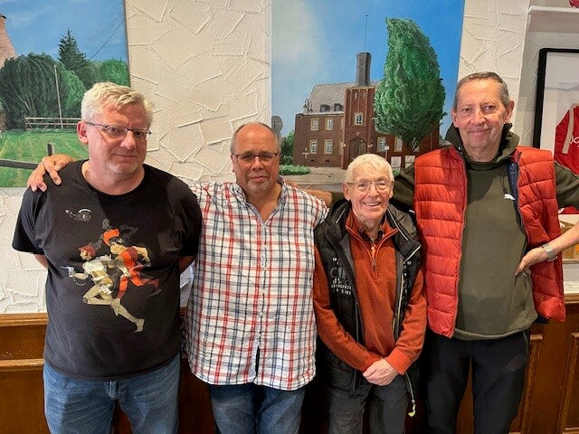
Einladung zum Oster-Preisskat
Der 1. Sintherner Skatclub von 1992 lädt herzlich zum traditionellen Osterpreisskat am Ostermontag 19.04.2025
ein. Gespielt wird im Vereinslokal "Zur Alten Abtei" in 50259 Pulheim-Brauweiler, Ehrenfrriedstraße 22.
Beginn 11 Uhr. Es werden zwei 36 er Serien am Vierertisch nach der Internationalen Skat - und Wettspielordnung ausgetragen. Das Startgeld beträgt 10 €. Pro Tisch wird ein Geldpreis ausgelobt. Das gesamte Startgeld wird als Preisgeld ausgespielt. Außerdem stehen noch drei Trostpreise zur Verfügung.
Der 1. Sintherner Skatclub freut sich auf euer Kommen und wünscht gute Anreise und viel Erfolg.
Kurt Langer Pressewart
Pressemitteilung Frühjahrs-Preisskat
Der 1. Sintherner Skatclub richtete mit 17 Mitgliedern seinen traditionellen Frühjahrs-Preisskat aus. Nach zwei sechsunddreißiger Serien standen die fünf Preisträger fest. Platz 1 erkämpfte sich Wilfried Puls mit 2037 Punkten. Die Plätze 2 bis 5 erspielten Ralf Pestotnik mit 1840 Pkt., Kurt Langer mit 1806 Pkt., Michael Hetz mit 1770 Pkt. und Bernhard Selzer mit 1519 Pkt.
Gewinner Frühjahrs-Preisskat
Platz 1 Wilfried Puls 2037 Pkt.
Platz 2 Ralf Pestotnik 1840 Pkt.
Platz 3 Kurt Langer 1806 Pkt.
Platz 4 Michael Hetz 1770 Pkt.
Platz 5 Bernhard Selzer 1519 Pkt.
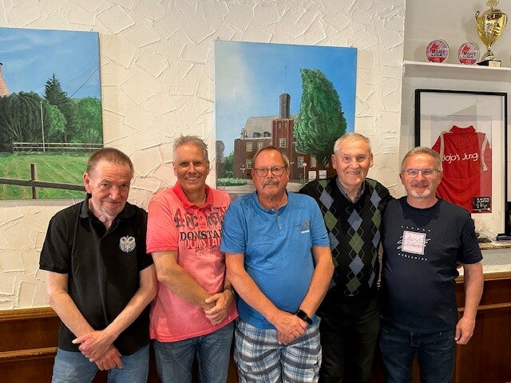
Monatssieger März 2025 Kurt Langer
Platz 1 Kurt Langer 3901 Pkt.
Platz 2 Wilfried Puls 3787 Pkt.
Platz 3 Michael Hetz 3537 Pkt.
Monatssieger Februar 2025 Kurt Langer
Platz 1 Kurt Langer 3323 PKt.
Platz 2 Peter Schwarz 3251 Pkt.
Platz 3 Joachim Jeske 3084 Pkt.

Monatssieger Januar 2025 Heinz Bühl
Platz 1 Heinz Bühl 3449 Pkt.
Platz 2 Harry Gebhard 3419 Pkt.
Platz 3 Frank Bertram 3284 Pkt.

2024
Superergebnis beim Weihnachtspreisskat
Platz 1 Bernhard Selzer 2373 Pkt. Platz 2 Frank Bertram 2199 Pkt.
Ergebnis Online Meisterschaft
Platz 1 Bernhard Selzer 24688 Pkt. Platz 2 Frank Bertram 24221 Pkt. Platz 3 Heinz Grünenwald 20671 Pkt.
Pressebericht Clubmeisterschaft 2024

Siegerehrung der Clubmeisterschaft 2024
1. Platz Peter Schwarz 30699 Pkt.
2. Platz Kurt Langer 29393 Pkt.
3. Platz Heinz Bühl 29071 Pkt.
Pressemitteilung vom 18.12.2024.
An der Clubmeisterschaft 2024 nahmen 19 Mitglieder teil.
Die letzten beiden Spieltage machten das Rennen um die 3 Clubmeisterplätze noch einmal richtig spannend. Klaus Heimann erspielte am vorletzten Spieltag sensationelle 2058 Punkte und meldete sich damit als Viertplatzierter an, um die Plätze 2, 3, oder 4 mitzuspielen. Peter Schwarz hatte sich mit 30699 Punkten uneinholbar an der Spitze festgesetzt. Am letzten Spieltag traten Heinz Bühl mit 29071 Pkt., Kurt Langer mit 29000 Pkt. und Klaus Heimann mit 28787 Pkt. an um einen der Clubmeisterplätze 2 und 3 zu erspielen. Da von 24 Spieltagen die besten 18 Spieltage in die Wertung kommen, brauchte Heinz Bühl mehr als 1293 Pkt., Kurt Langer mehr als 1188 Pkt. und Klaus Heimann mehr als 1163 Pkt. um ihr Ergebnis am letzten Spieltag zu verbessern. Kurt Langer schaffte es mit 1581 Pkt. und Gesamtergebnis 29393 Pkt. an Heinz Bühl, der auf 29071 Pkt. verblieb, vorbeizuziehen und wurde Vizemeister. Heinz Bühl freute sich über den dritten Clubmeisterplatz. Klaus Heimann reichte es mit 28787 Pkt. nur zum 4. Platz.
Die Siegerehrung der Clubmeister fand im Rahmen der traditionellen Weihnachtsfeier und einem Weihnachtspreisskat statt, wobei alle Mitglieder einen Geldpreis erhielten und Bernhard Selzer, Frank Bertram und Peter Schwarz die Plätze 1 bis 3 erspielten.
Monatssieger November 2024
Platz 1 Heinz Grünenwald 3477 Pkt.
Platz 2 Kai Faßbender 3401 Pkt.
Platz 3 Klaus Heimann 3221 Pkt

Monatssieger Oktober 2024
Platz 1 Frank Kühn 3496 Pkt.
Platz 2 Peter Schwarz 3306 Pkt.
Platz 3 Joachim Jeske 3239 Pkt.
Pulheim, 09.102024
Pressemitteilung
Der traditionelle Herbst-Preisskat hat mit 16 Skatfreunden stattgefunden. Gespielt wurden zwei sechsundreißiger Serien. Frank Kühn erspielte sich 1804 Punkte und landete damit auf dem 1. Platz. Auf die weiteren Gewinnerplätze schafften es Michael Hetz mit 1772 Punkte, Kurt Langer mit 1729 Punkte und Peter Schwarz mit 1698 Pkt. Alle 4 erhielten einen Geldpreis.
Gewinner des traditionellen Herbst-Preisskat 2024
Platz 1 Frank Kühn 1804 Pkt.
Platz 2 Michael Hetz 1772 Pkt.
Platz 3 Kurt Langer 1729 Pkt.
Platz 4 Peter Schwarz 1698 Pkt.
Monatssieger September 2024
Platz 1 Kurt Langer 3319 Pkt.
Platz 2 Joachim Jeske 3201 Pkt.
Platz 3 Peter Schwarz 3163 Pkt.
Monatssieger August 2024
Platz 1 Achim Stümpges 4114 Pkt.
Platz 2 Heinz Grünenwald 3659 Pkt.
Platz 3 Kai Faßbender 3036 Pkt.

Monatssieger Juli 2024
Platz 1 Peter Schwarz 5497 Pkt.
Platz 2 Kurt Langer 5106 Pkt.
Platz 3 Norbert Götte 4798 Pkt.

Pressemitteilung
Am diesjährigen traditionellem Sommerpreisskat des
1.Sintherner Skatclubs nahmen 17 Skatfreunde teil. Nach zwei sechsunddreißiger Serien standen die 5 Preisträger fest.
Platz 1 belegte Peter Schwarz mit beachtlichen 2217 Punkten.
Kai Faßbender landete auch mit einer hohen Punktzahl von 2026 auf Platz 2.
Ebenfalls überdurchschnittliche Ergebnisse schafften Heinz Grünenwald mit 1891 Punkten, Kurt Langer mit 1720 Punkten und Dieter Schnecke mit 1675 Punkten.
Gewinner des tradit. Sommer-Preisskats
Platz 1 Peter Schwarz 2217 Pkt.
Platz 2 Kai Faßbender 2026 Pkt.
Platz 3 Heinz Grünenwald 1891 Pkt.
Platz 4 Kurt Langer 1720 Pkt.
Platz 5 Dieter Schnecke 1675 Pkt.

Monatssieger Juni 2024
Platz 1 Kai Faßbender 3765 Pkt.
Platz 2 Manfred Hallmann 3579 Pkt.
Platz 3 Heinz Grünenwald 3236 Pkt.

Monatssieger April 2024
Platz 1 Michael Hetz 3349 Punkte
Platz 2 Heinz Bühl 3290 Punkte
Platz 3 Peter Schwarz 3232 Punkte
Monatssieger Mai 2024
Platz 1 Klaus Heimann 3513 Pkt.
Platz 2 Peter Schwarz 3134 Pkt.
Platz 3 Kai Faßbender 3009 Pkt.

Monatssieger März 2024
Platz 1 Norbert Götte 3949 Pkt.
Platz 2 Puls Wilfried 3255 Pkt.
Platz 3 Heimann Klaus 3183 Pkt.
Gewinner Frühjahrs-Preisskat 2024
Platz 1 Norbert Götte 1945 Pkt.
Platz 2 Heinz Grünenwald 1856 Pkt.
Platz 3 Heinz Bühl 1722 Pkt.
Platz 4 Klaus Heimann 1686 Pkt.


Pressebericht Kölner Rundschau
traditioneller Osterpreisskat 2024
Gewinner des tradit. Osterpreisskat 2024
Platz 1 Kurt Langer 2089 Pkt.
Platz 2 Frank Kühn 1972 Pkt.
Platz 3 Ralf Pestotnik 1792 Pkt.
Platz 4 Hilde Hill 1739 Pkt.
Pressemitteilung Osterpreisskat 2024
Am 30.03.2024 fand der traditionelle Osterpreisskat des 1. Sintherner Skatclubs im Vereinsheim des Clubs statt. Nach zwei 36er Serien mit 16 Teilnehmern standen die Gewinner fest.
Platz 1 Kurt Langer 1. Si. Skatclub 2089 Pkt.
Platz 2 Frank Kühn 1. Si. Skatclub 1972 Pkt.
Platz 3 Ralf Pestotnik 1. Si. Skatclub 1792 Pkt.
Platz 4 Hilde Hill "Skatclub Ford Asse Köln" 1739 Pkt.
Einladung zum tradit. Osterpreisskat 2024
Monatssieger Februar 2024
Platz 1 Heinz Bühl 3859 Pkt.
Platz 2 Peter Schwarz 3199 Pkt.
Platz 3 Klaus Heimann 3150 Pkt.

Gewinner Sonderpreisskat vom 09.01.2024
Platz 1 Wilfried Puls
Platz 2 Kurt Langer
Platz 3 Dieter Schnecke,
Platz 4 Heinz Grünenwald
Monatssieger Januar 2024 Heinz Bühl
Platz 1 Heinz Bühl 3827 Pkt.
Platz 2 Klaus Heimann 3686 Pkt.
Platz 3 Kurt Langer 3489 Pkt.


2023
Am 19.12.2023 wurde der traditionelle Weihnachts-Preisskat gespielt.
Platz 1 Norbert Bleckmann mit 2051 Pkt.
Platz 2 Peter Schwarz mit 2014 Pkt.
Platz 3 Frank Kühn mit 1644 Pkt.
Alle Teilnehmer erhielten einen Preis.
Foto Mitglieder 1. Sintherner Skatclub vom 19.12.203.
Nicht anwesend aus gesundheitlichen Gründen Bernhard Selzer.
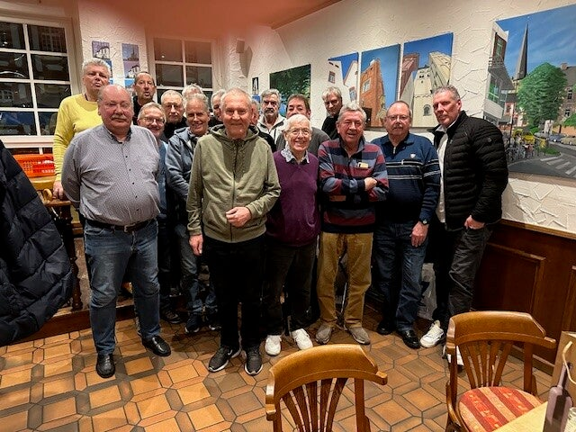
Pressemitteilung
Siegerehrung Clubmeister 2023
Pressebericht Siegerehrung Clubmeister 2023
Pulheimer Wochenende


Gewinner der Clubmeisterschaft 2023.
Clubsieger Kurt Langer mit 27653 Pkt.
2. Clubmeister Manfred Hallmann mit 26945 Pkt.
3. Clubmeister Heinz Grünenwald mit 24475 Pkt.
Die Siegerehrung der Clubmeister 2023 wurde vom Vorsitzenden Dieter Schnecke und Spielleiter Achim Stümpges am 19.12.203 vorgenommen.

Pokalgewinner Online-Skat Werner Schäfer
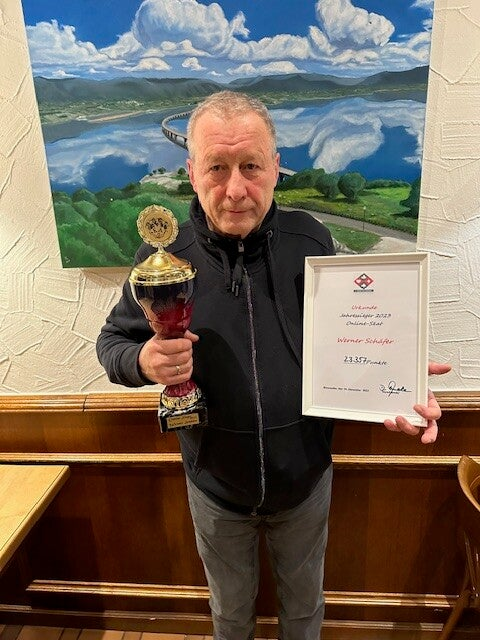
Im Dezember 2023 wurde kein Monatssieger ausgespielt, da der Weihnachts-Preisskat nicht für den Monatssieger gewertet wird. Es müssen mindestens zwei Spieltage für den Monatssieger in die Wertung kommen, wobei der Monatssieger dann inzwischen eine Urkunde und ein kleines Preisgeld erhält.
Monatssieger November 2023 Kurt Langer
Platz 1 Kurt Langer 3315 Pkt.
Platz 2 Manfred Hallmann 2886 Pkt.
Platz 3 Reinhard Ubber 2787 Pkt.

Monatssieger Oktober 2023 Peter Schwarz
Platz 1 Peter Schwarz 3129 Pkt.
Platz 2 Joachim Stümpges 2939 Pkt.
Platz 3 Frank Kühn 2921 Pkt.

Monatssieger September 2023 Joachim Jeske
Platz 1 Joachim Jeske 3062 Pkt.
Platz 2 Frank Kühn 3001 Pkt.
Platz 3 Kurt Langer 2943 Pkt.

Am 26.09.2023 wurde der Herbst-Preisskat gespielt
Platz 1 Frank Kühn 2094 Pkt.
Platz 2 Wilfried Puls 1513 Pkt.
Platz 3 Joachim Jeske 1505 Pkt.
Platz 4 Ralf Pestotnik 1467Pkt.
Alle 4 erhielten einen Geldpreis

Monatssieger August 2023 Heinz Grünenwald
Platz 1 Heinz Grünenwald 3522 Pkt.
Platz 2 Norbertt Götte 3508 Pkt.
Platz 3 Manfred Hallmann 3405 Pkt.

Monatssieger Juli 2023 Heinz Grünenwald
Platz 1 Heinz Grünenwald 2962 Pkt.
Platz 2 Bodo Holtkamp 2874 Pkt.
Platz 3 Joachim Stümpges 2747 Pkt.

Monatssieger Juni 2023 Norbert Götte
Platz 1 Norbert Götte 3296 Pkt.
Platz 2 Manfred Hallmann 3056 Pkt.
Platz 3 Kurt Langer 2707 Pkt.

Am 20. Juni 2023 wurde der Sommer-Preisskat gespielt.
Die Siegerehrung fand am 04. Juli statt.
Platz 1 Manfred Hallmann 1624 Pkt.
Platz 2 Norbert Götte 1562 Pkt.
Platz 3 Heinz Grünenwald 1441 Pkt.
Platz 4 Norbert Bleckmann 1433 Pkt.
Alle 4 erhielten einen Geldpreis.

Monatssieger Mai 2023 Kurt Langer
Platz 1 Kurt Langer 3538 Pkt.
Platz 2 Heinz Grünenwald 2739 Pkt.
Platz 3 Frank Kühn 2720 Pkt.

Monatssieger April 2023 Manfred Hallmann
Platz 1 Manfred Hallmann 2914 Pkt.
Platz 2 Reinhard Ubber 2892 Pkt.
Platz 3 Joachim Stümpges 2887 Pkt.

Monatssieger März 2023 Kurt Langer
Platz 1 Kurt Langer 3240 Pkt.
Plattz 2 Heinz Grünenwald 3069 Pkt.
Platz 3 Heinz Bühl 2765 Pkt.

Am 28. März 2023 wurde der traditionelle Frühjahrs-Preisskat gespielt. Es wurden 4 Preise vergeben:
Platz 1 Kurt Langer 1628 Pkt.
Platz 2 Dieter Schnecke 1492 Pkt.
Platz 3 Peter Schwarz 1455 Pkt.
Platz 4 Heinz Grünenwald 1440 Pkt.
Alle 4 erhielten einen Geldpreis

Monatssieger Februar 2023 Kurt Langer
Platz 1 Kurt Langer 3527 Pkt.
Platz 2 Manfred Hallmann 3518 Pkt.
Platz 3 Reinhard Ubber 2953 Pkt.

Monatssieger Januar 2023 Manfred Hallmann
Platz 1 Manfred Hallmann 2915 Pkt.
Platz 2 Kurt Langer 2838 Pkt.
Platz 3 Bodo Holtkamp 2836 Pkt.

2022
Am 20. Dezember 2022 wurde der interne Weihnachts-Preisskat gespielt.
Nach gemütlichem Beisammensein bei einem gemeinsamen Essen wurde der interne Weihnachts-Preisskat gespielt.
Platz 1 ging an Kurt Langer, Platz 2 erspielte sich Achim Stümpges. Alle Teilnehmer erhielten gestaffelt nach den erspielten Punkten einen Preis.
Gewinner der Clubmeisterschaft 2022.
Clubsieger Kurt Langer mit 27433 Pkt.
2. Clubmeisterplatz Heinz Grünenwald mit 25212 Pkt
3. Clubmeisterplatz Manfred Hallmann mit 25069 Pkt.
Die Siegerehrung der Clubmeister wurde vom Vorsitzenden Dieter Schnecke vorgenommen. Der Vorsitzende überreichte den drei Clubmeistern einen Pokal, eine Urkunde und noch ein Überraschungsgeschenk worüber sich die Beteiligten sehr freuten.

von links nach rechts Heinz Grünenwald, Kurt Langer, Manfred Hallmann, Vorsitzende Dieter Schnecke und Spielleiter Joachim Stümpges.
Nach gemütlichem Beisammensein bei einem gemeinsamen Essen wurde der Weihnachts-Preisskat gespielt. bei dem jeder Teilnehmer einen Preis erhielt.
Monatssieger November 2022 wurde Norbert Götte mit 3257 Pkt. Platz 2 und 3 belegten Kurt Langer mit 2926 Pkt. und Manfred Hallmann mit 2879 Pkt.
Monatssieger Oktober 2022 wurde Frank Kühn mit 2829 Pkt. Platz 2 und 3 belegten Reinhard Ubber mit 2802 Pkt. und Joachim Stümpges mit 2738 Pkt.
Monatssieger September 2022 wurde Joachim Jeske mit 3607 Pkt. Platz 2 und 3 belegten Manfred Hallmann mit 2995 Pkt. und Heinz Bühl mit 2906 Pkt.
Am 27.09.2022 wurde der Herbst-Preisskat gespielt.
1. Platz Joachim Jeske 1963 Pkt.
2. Platz Puls Wilfried 1505 Pkt.
3. Platz Pestotnik Ralf 1491 Pkt.
Am 12. September 2022 wurde der 1. Sintherner Skatclub 30 Jahre alt
Nach der Gründung des 1. Sintherner Skatclubs am 12. September 1992 in Sinthern, fand am 17. September 2022, ein 30-jähriges Jubiläums-Skattunier mit großer Beteiligung in unserem Vereinslokal "Zur Alten Abtei" statt.
Der stellvertretende Bürgermeister der Stadt Pulheim Herr Walter Lugt und der Präsident der Verbandsgruppe 50 Köln-Aachen Friedhelm Beckers folgten der Einladung des Vorstandes und gratulierten dem Verein zum 30-jährigen Jubiläum. Am Ende des Turniers hatte Friedhelm Beckers die Nase vorn. Platz zwei und drei belegten Manfred Rienhoff aus Widdersdorf und Klaus Reinegger, der von seinem neuen Wohnsitz in Belgien angereist war. Kurt Langer, der nach der ersten Serie Platz 1 belegte rutschte in der 2. Serie auf Platz 4 ab.
Der stellvertretende Bürgermeister überreichte Friedhelm Beckers den Siegerpokal und ein Preisgeld.

Monatssieger August 2022 wurde Norbert Götte mit 4736 Pkt. Platz 2 und 3 belegten Kurt Langer mit 4373 Pkt. und Bernhard Selzer mit 4198 Pkt.
Monatssieger Juli 2022 wurde Norbert Götte mit 3516 Pkt. Platz 2 und 3 belegten Manfred Hallmann mit 3343 Pkt. und Peter Schwarz mit 2713 Pkt.
Monatssieger Juni 2022 wurde Kurt Langer mit 3057 Pkt. Platz 2 und 3 belegten Manfred Hallmann mit 2975 Pkt. und Joachim Jeske mit 2852 Pkt.
Am 21.06.2022 wurde der Sommer-Preisskat gespielt.
1. Platz Heinz Grünenfeld 1691 Pkt.
2. Platz Norbert Götte 1616 Pkt.
3. Platz Manfred Hallmann 1596 Pkt.
Monatssieger Mai 2022 wurde Karl-Heinz Kohl mit 3166 Pkt. Platz 2 und 3 belegten Heinz Grünenwald mit 2839 Pkt. und Kurt Langer mit 2751 Pkt.
Monatssieger April 2022 wurde Joachim Stümpges mit 3158 Pkt. Platz 2 und 3 belegten Kurt Langer mit 3149 Pkt. und Peter Schwarz mit 2928 Pkt.
Monatssieger März 2022 wurde Heinz Grünenwald mit 4673 Pkt. Platz 2 und 3 belegten Kurt Langer mit 4264 Pkt. und Karl-Heinz Kohl mit 4119 Pkt.
Am 15.03-2022 wurde der Frühjahrs-Preisskat gespielt.
1. Platz Kurt Langer 2102 Pkt.
2. Platz Bodo Holtkamp 1376 Pkt.
3. Platz Dieter Schnecke 1358 Pkt.
Monatssieger Februar 2022 wurde Heinz Grünenwald mit 3009 Pkt. Platz 2 und 3 belegten Bodo Holtkamp mit 2728 Pkt. und Kurt Langer mit 2666 Pkt.
Aufgrund der Corona Pandemie wurde im Januar kein Monatssieger ausgespielt.
2021
Gewinner der Clubmeisterschaft 2021.
Clubsieger Manfred Hallmann 14583 Pkt.
2. Clubmeister Heinz Grünenwald 14127 Pkt.
3. Clubmeister Klaus Reinegger 12219 Pkt
Alle drei erhielten bei der Siegerehrung eine Urkunde und einen Pokal und ein kleines Überraschungsgeschenk.
2020
Eine Clubmeisterschaft 2020 fand wegen der Corona Pandemie nicht statt.
2019
Gewinner der Clubmeisterschaft 2019.
Clubsieger Michael Buscher 28857 Pkt.
2. Clubmeisterplatz Herbert Kreber 28381 Pkt.
3. Clubmeisterplatz Kurt Langer 27590 Pkt.
Wie im Vorjahr erhielten Herbert Kreber und Kurt Langer bei der Siegerehrung eine Urkunde und einen Pokal.
Michael Buscher erhielt eine Urkunde und einen kleinen Geldbetrag, da er auf einen Pokal verzichtete. Heinz Haferung belegte mit 26765 Pkt. Platz 4.
Pressebericht Kölner Rundschau
Siegerehrung der Clubmeister 2019. Am letzten Spieltag des Jahres nahm der Vorsitzende des 1.Sintherner Skatclubs die Siegerehrung der Clubmeister 2019 vor. Bis zum letzten Wertungstag blieb die Clubmeisterschaft 2019 spannend, da am letzten Spieltag noch vier Skatfreunde Chancen auf einen der drei zu vergebenden Clubmeisterplätze hatten.


Pulheim, 06.11. 2019 Pressemitteilung
Wanderpokal des 1. Sintherner Skatclub an Kurt Langer!
Mit 3502 Pkt. wurde Kurt Langer Monatssieger Oktober 2019 und nahm dafür den Wanderpokal entgegen. Platz zwei und drei belegten Rolf Ollig mit 3030 Pkt. und Birthe Haamann mit 2999 Pkt. Nach dem drittletzten Spieltag des Jahres rangieren auf den Clubmeisterplätzen:
Michael Buscher mit 28681 Pkt., Herbert Kreber mit 27012 Pkt. und Kurt Langer mit 26884 Pkt. Die letzten 2 Spieltage versprechen daher Spannung, da Heinz Haferung sich mit derzeitigen 26750 Pkt. auch noch berechtigte Chancen ausrechnet noch auf einen der Clubmeisterplätze zu klettern.
Pressebericht Kölner Rundschau vom 22.10.2019
Heinz Haferung erspielte sich im September an 2 Spieltagen beachtliche 3658 Pkt. Er nahm zum 3. Mal den aktuellen Wanderpokal als Monatssieger September entgegen. Die Plätze 2 und drei belegten Kurt Langer mit 3247 Pkt. und Herbert Kreber mit 3205 Pkt.
Pulheim, 24.09.2019 Pressebericht Kölner Rundschau vom 10.10.2019
Am 10.09.2019 wurde der traditionelle Herbst-Preisskat gespielt.
1. Platz Reinhard Ubber 2125 Pkt.
2. Platz Heinz Haferung 2027 Pkt.
3. Platz Kurt Langer 2019 Pkt.
Weitere Preisträger wurden Ingo Dietze 1517 Pkt. und Michael Buscher 1495 Pkt. Auf dem Foto von links Heinz Haferung, Reinhard Ubber und Kurt Langer
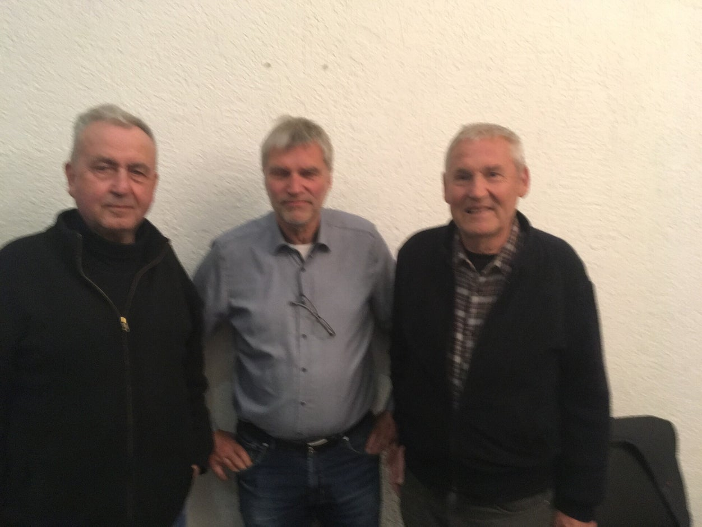
Pulheim, 16.Sept. 2019 Pressemitteilung
Wanderpokal für Michael Buscher! Michael Buscher wurde mit 3824 Pkt. Monatssieger August. Die Plätze 2 und 3 belegten Ingo Dietze mit 3377 Pkt. und Norbert Götte mit 3278 Pkt. Bereits zum 4. Mal erhielt Michael Buscher als Monatssieger den aktuellen Wanderpokal des 1.Sintherner Skatclubs. Beim Fünften Mal geht der Pokal endgültig in sein Eigentum über.
Spannend bleibt es im Rennen um die 3 Clubmeisterplätze. Zur Zeit haben Michael Buscher, Heinz Haferung und Herbert Kreber die Nase vorn. Direkter Verfolger auf Platz vier mit einem Abstand von nur 254 Pkt. zu Platz drei ist Kurt Langer. Am 19. Spieltag, Dienstag dem 24.9. sind die 4 genannten Spieler in der ersten Serie an Tisch 1 gesetzt.
Pulheim, 14. August 2019 Pressemitteilung
An den 3 Spieltagen des 1. Sintherner Skatclub 02.07, 16.07. und 30.07. fährt Heinz Haferung 4693 Pkt. ein und wird damit Monatssieger Juli, wofür er zum 2. Mal den aktuellen Wanderpokal erhält. Auf den Plätzen 2 und drei landeten Manfred Hallmann mit 4204 Pkt. und Herbert Kreber mit 3905 Pkt.
Pulheim, 20.Juni 2019 Pressemitteilung
Am 18.Juni 2019 wurde der Sommer-Preisskat gespielt.
Platz 1 Rolf Ollig 1862 Pkt.
Platz 2 Norbert Götte 1838 Pkt.
Platz 3 Birthe Haamann 1406 Pkt.
Platz 4 Herbert Kreber 1344 Pkt.
Der Monatssieger Juni steht bereits nach dem 2. Spieltag am 18. Juni mit Norbert Götte fest. Er erspielte 3.294 Pkt. und reihte sich das erste Mal in die Gewinnerliste ein.
Monatssieger Mai wurde Michael Buscher, der sensationelle 4106 Pkt. erreichte. Der aktuelle Wanderpokal wurde ihm vom Vorsitzenden bereits zum dritten Mal überreicht.
Monatssieger April wurde mit 3403 Pkt. Heinz Haferung, wofür er den aktuellen Wanderpokal vom Vorsitzenden entgegen nehmen konnte. Auf den Plätzen 2 und 3 folgten Reinhard Ubber mit 2792 Pkt. und Manfred Hallmann mit 2545 Pkt.
Pulheim, 23. April 2019 Pressemitteilung
Birthe Haamann strahlende Siegerin des traditionellen Osterpreisskats. Beim diesjährigen Osterpreisskat des 1.Sintherner Skatclub hatten nach zwei 48 Serien Birthe Haamann, Rolf Ollig und Manfred Hallmann die Nase vorn.
Monatssieger März 2019 wurde Michael Buscher vor Reinhard Ubber und Klaus Reinegger.
Nachdem Michael Buscher bereits Monatssieger Februar wurde, setzte er im März noch einen drauf und wurde mit 3695 Pkt. erneut Monatssieger.
Die Clubmeister-Rangliste führten Ende März Michael Buscher, Karl-Heinz Kohl und Kurt Langer an. Nach dem 7. Spieltag am 09.04. rutschte Kurt Langer auf Platz 5 und Herbert Kreber verbesserte sich auf Platz 2 hinter Michael Buscher. Karl-Heinz Kohl belegt jetzt Platz 3.
Monatssieger Februar 2019 wurde Michael Buscher mit 2953 Pkt. Auf den Plätzen 2. und 3 rangierten Rudolf Röhrig , mit 2952 Pkt. und Karl-Heinz Kohl mit 2918 Pkt. Der Monatssieger erhielt den Wanderpokal und ein Preisgeld. Der Zweit-und Drittplatzierte erhielt auch ein kleines gestaffeltes Preisgeld.
Wanderpokal für Karl-Heinz Kohl, dem Monatssieger Januar 2019. Im Januar gab es ausnahmsweise 3 Spieltage, aus denen Karl-Heinz Kohl mit 4312 Pkt. hervorging. Die Plätze 2 und 3 belegten Michael Buscher mit 4248 Pkt. und Rudolf Röhrig mit 4230 Pkt. Karl-Heinz Kohl nahm den 13. Wanderpokal des 1. Sintherner Skatclubs erstmalig vom Vorsitzenden entgegen.
2018
Gewinner der Clubmeisterschaft 2018
Clubsieger Michael Buscher 22675 Pkt.
2. Clubmeister Kurt Langer 20863 Pkt.
3. Clubmeister Manfred Hallmann 20963 Pkt.
Pressebericht Kölner Rundschau und Pulheimer Wochenende "Clubmeister 2018 geehrt".
Zum Jahresende ehrte der Vorsitzende die Clubmeister 2018. Michael Buscher setzte sich an den letzten Spieltagen von den Verfolgern deutlich ab und wurde am letzten Spieltag souverän mit 22675 Pkt. Clubsieger 2018. Kurt Langer wurde mit 20963 Pkt. Vizemeister. Dritter Clubmeister wurde Manfred Hallmann mit 20963 Pkt., knapp vor Herbert Kreber und Heinz Haferung.
Auf dem Foto die Clubmeister Michael Buscher, Kurt Langer und Manfred Hallmann

Am 18.12.2018 wurde der Weihachts-Preisskat gespielt.
1. Platz Michael Buscher
2. Platz Rolf Ollig
3. Platz Manfred Hallmann
Pressebericht Pulheimer Wochenende vom 12.12.2018
Michael Buscher, an den letzten 4 Spieltagen bereits auf Erfolgswelle, belegte beim anschließenden Weihnachts-Preisskat Platz 1 und wurde damit zum dritten Mal in Folge Monatssieger. Der zwölfte Wanderpokal des Clubs ging damit frühzeitig in seine Sammlung über. Ein solcher Hattrick war vorher nur Peter Seidel, Kurt Langer und Helmut Weyers gelungen. Beim Weihnachtspreisskat erhielten traditionell alle Teilnehmer gemäß den erspielten Punkten einen Preis.
Pressebericht Pulheimer Wochenende vom 21.11.2018
2018 fand ein Freundschafts-Vergleichkampf Wurringer Junge mit dem 1. Sintherner Skatclub von 1992 statt. Die Wurringer Junge hatten am Ende des Vergleichskampf 18352 Pkt. aufzubieten. Der Sintherner Skatclub hatte mit 21585 Pkt. die Nase vorn. In der Einzelwertung belegten Michael Buscher vom 1. Sintherner Skatclub mit 2973 Pkt. Platz 1. und Kurt Langer mit 2609 Pkt. Platz 2. Hans Sturm von den Wurringer Junge belegte mit 2594 Pkt. Platz 3.
Bereits am 27.03.18 sicherte sich Kurt Langer nach fünfmaligem Gewinn den elften Wanderpokal des 1.Sintherner Skatclubs.
Vizepräsident der Verbandsgruppe 50 Rolf Ollig, Dieter Schnecke und Torsten Scheibe schlossen sich 2018 unserem Club an.
Clubmeistertafel von 1992 bis 2018

Pressemitteilung vom 07.12.2018 .
Der Kampf um den Monatssieger November konnte nicht spannender verlaufen! Michael Buscher wurde mit 2646 Pkt. Monatssieger November. Auf dem 2. Platz landete Herbert Kreber mit 2644 Pkt. Da er auch Monatssieger Oktober war, hat er jetzt die Chance den Pokal im Dezember zum dritten Mal in Folge zu gewinnen. Sollte das gelingen, ginge der zwölfte Wanderpokal des 1.Sintherner Skatclubs vorzeitig in sein Eigentum über. Sollte das nicht gelingen, muss Michael Buscher sich gedulden bis er den Wanderpokal noch zweimal erhält bis er in sein Eigentum übergeht.
Pressebericht Kölner Rundschau vom 27.10.2018
Bereits zum 2. Mal hat Michael Buscher den aktuellen Wanderpokal des Clubs gewonnen. Mit erspielten 2948 Pkt. lag Buscher im Oktober mit großem Vorsprung vor Kurt Langer , der mit 2436 Pkt. den 2. Platz belegte. In der Jahresrangliste rückt Michael Buscher mit diesem Ergebnis nahe an den noch führenden Kurt Langer heran.
Der Meisterschaftsendkampf 2018 dürfte in den letzten drei Wertungstagen spannend werden, da die Abschreib-Ergebnisse für Michael Buscher sprechen. Auf Platz drei rangiert z. Zt. Manfred Hallmann. Heinz Haferung z.Zt. auf Platz vier, hat noch Chancen einen der drei Clubmeisterplätze zu ergattern.
Pulheim, 11.10.2018 Pressemitteilung
Bodo Holtkamp Monatssieger September! Er erspielte sich mit 2 tollen Serien von 1435 Pkt. und 1327 Pkt. den aktuellen Wanderpokal des 1. Sintherner Skatclubs.
In der Clubmeister-Jahresrangliste kämpfen Kurt Langer, Michael Buscher, Manfred Hallmann und Heinz Haferung, die nach den 20. von 24.Spieltagen die Plätze 1-4 belegen, um die drei zu vergebenden Clubmeisterplätze.
Pressebericht Pulheimer Sonntagsspost
Rolf Ollig erkämpft sich mit 2493 Pkt. den Monatssieger August und nimmt den aktuellen Wanderpokal vom Vorsitzenden entgegen. In der Jahresrangliste liegen nach dem 19. Spieltag Kurt Langer, Manfred Hallmann und Heinz Haferung vorne.
Am 25.o9.2018 wurde der Herbst-Preisskat gespielt.
1. Platz Bodo Holtkamp
2. Platz Manfred Hallmann
3. Platz Kurt Langer.
In der Jahresrangliste liegen nach dem 19. Spieltag Kurt Langer, Manfred Hallmann und Heinz Haferung vorne.
Pressebericht Pulheimer Wochenende vom 05.09.2018
Ulrich Albanus hat die Monatswertung August 2018 gewonnen. Er holte an den 3 Spielttagen im August 3514 Pkt. und sicherte sich den aktuellen Wanderpokal des Clubs. Nach bisher 16 Spieltagen führen Michael Buscher, Kurt Langer und Heinz Haferrung die Jahresrangliste an.
Pulheim, 16. August 2018 Pressemitteilung
Wanderpokal für Ulrich Albanus, der mit 3514 Pkt. aus drei Spieltagen im Juli Monatssieger Juli wurde.
Nach dem 16. Spieltag führen Michael Buscher, Kurt Langer und Heinz Haferung die Jahresrangliste des 1. Sintherner Skatclubs an.
Pulheim, 04. Juli 2018 Pressemitteilung
Monatssieger Juni wurde Kurt Langer mit 2571 Pkt!
Wanderpokal für Kurt Langer Kopf an Kopf Rennen um den Monatssieger Juni. Kurt Langer hat nach 2 Spieltagen im Juni mit 2571 Pkt. die Nase vorn. Manfred Hallmann verpasst den Monatsieger mit 2542 Pkt. nur knapp.
Die Jahresrangliste führen Michael Buscher, Manfred Hallmann und Heinz Haferung an. Trotz Monatssieger rutschte Kurt Langer auf Platz 4. der Jahresrangliste.
Pressebericht Pulheimer Wochenende vom 13.06.2018
Michael Buscher wurde mit 2542 Pkt. Monatssieger Mai und erhielt den aktuellen Wanderpokal des Clubs. In der Jahresrangliste haben nach dem 11. Spieltag Michael Buscher, Manfred Hallmann und Kurt Langer die Nase vorn.
Pulheim, 11.Mai 2018
Monatssieger April wurde Heinz Haferung mit 2533 Pkt., Platz 2 belegte Jochen Stein mit 2497 Pkt. und den 3. Platz belegte Ulrich Albanus mit 2448 Pkt.
In der Jahresrangliste rangieren nach dem 9. Spieltag Manfred Hallmann, Kurt Langer und Heinz Haferung vorne.
Kurt Langer wurde Monatssieger März und erhielt zum fünften Mal den aktuellen 11.Wanderpokal des Clubs, womit er jetzt endgültig im Besitz der Wanderpokale eins, sechs, acht und elf ist.

Pressebericht Pulheimer Wochenende vom 16.04.2018
Der 1. Sintherner Skatclub hat am 27.03.2018 den Frühling wieder mit seinem traditionellem Frühjahrs-Preisskat begrüßt. In diesem Jahr belegten Kurt Langer, Ulrich Albanus, Herbert Kreber und Joachim Jeske die Plätze 1 bis 4. Karl-Heinz Kohl verpasste nur mit einem Punkt Rückstand zum vierten Platz ein Preisgeld. Kurt Langer nahm neben dem Preisgeld für Platz 1 auch zum fünften Mal den 11.Wanderrpokal des Clubs für seine Sammlung entgegen. Er hattte ihn am 30.08.2016, 25.10.2016, 28.02.2017, 28.03.2017 und jetzt am 27.03.2018 gewonnen.
Herbert Kreber hatte den 11. Wanderpokal bereits 4 Mal gewonnen. Jetzt ist er für ihn futsch, er muß auf den zwölften Wanderpokal hoffen.
2017
Gewinner der Clubmeisterschaft 2017.
Clubsieger Herbert Kreber 24406 Pkt.
2. Clubmeister Kurt Langer 23958 Pkt.
3. Clubmeister Michael Buscher 22594 Pkt.
Alle drei erhielten bei der Siegerehrung eine Urkunde, einen Pokal. Der Clubsieger erhielt zusätzlich eine Flasche Sekt.

2017 übernahm Klaus Reinegger den Vorsitz des 1.Sintherner Skatclubs und aktivierte mit Hilfe seines Sohnes eine Home Page des 1.Sintherner Skatclubs.
Pressebericht Pulheimer Wochenende vom 13.12.2017
Im November hatte Karl-Heinz Kohl einen Lauf. An den beiden Spieltagen holte er 1627 Pkt. und 1603 Pkt. und wurde damit souverän Monatssieger November und erhielt vom Vorsitzenden den aktuellen Wanderpokal. In der Jahresrangliste liegen weiter Herbert Kreber, Kurt Langer und Michael Buscher vorne.
Pressebericht Pulheimer Wochenende vom 02. November 2017
Am 26.o9.2017 wurde der Herbst-Preisskat gespielt.
1. Platz Herbert Kreber
2. Platz Kurt Langer
3. Platz Reinhard Ubber
4. Platz Manfred Hallmann
Der 1.Sintherner Skatclub richtete an seinem 18. Spieltag seinen traditionellen Herbst-Preisskat aus. Auf den Plätzen 1 bis 3 landeten Herbert Kreber, Kurt Langer und Gastspieler Reinhard Ubber. Manfred Hallmann erhielt als Viert-Platzierter ebenfalls noch ein Preisgeld. Gewinner Herbst-Preisskat 2017 Herbert Kreber, Kurt Langer, Reinhard Ubber und Manfred Hallmann

Bei der 36. Pulheimer Skat-Stadtmeisterschaft im Juli 2017 erreichte Kurt Langer den 2. Platz und nahm als Pulheimer Vize Skat-Stadtmeister einen Geldpreis entgegen.
Foto von li. Kurt Langer, Horst Becker Wurringer Junge, Rolf Ollig Vize VG-Präsident der VG 50 Köln-Aachen

Pulheim, 15.11.2017
Der 1.Sintherner Skatclubs, der von Kurt Langer vor 25 Jahren gegründet wurde richtete einen Jubiläumspreisskat aus, den Rolf Ollig vom Stommeler Skatclub gewonnen hat. Weitere Preisträger beim Sonderpreisskat waren Karl-Heinz Kohl, Herbert Kreber, Ludwig Isselhard und Ellen Weber.
Pressebericht Pulheimer Sonntagspost vom 26.08.2017
Im Juli wurde der traditionelle Sommer-Preisskat 2017 gespielt.
1. Platz Kurt Langer
2. Platz Bodo Holtkamp
3. Platz Herbert Kreber
In Sinthern wurde wieder eifrig Skat gekloppt! Beim traditionellen Sommer-Preisskat belegten Kurt Langer, Bodo Holtkamp und Herbert Kreber die Plätze 1 bis 3. Herbert Kreber wurde zudem Monatssieger Juli 2017.
Pressebericht Pulheimer Sonntagspost vom 09.06.2017
Mit zwei Siegen in zwei Serien sicherte sich Herbert Kreber souverän den Monatssieger-Titel und damit zum 2. Mal den aktuellen Wanderpokal des Clubs.
Am 28.03.2017 wurde der Frühjahrs-Preisskat gespielt.
1. Platz Kurt Langer
2. Platz Klaus Reinegger
3. Platz Joachim Jeske
Pressebericht Pulheimer Sonntagspost vom 01.04.2017
Kurt Langer gewinnt den traditionellen Frühjahrs-Preisskat und wird Monatssieger März. Mit knappem Vorsprung vor Klaus Reinegger sicherte sich Kurt Langer zum 4. Mal den aktuellen Wanderpokal. Weitere Preisträger beim Frühjahrs-Preisskat waren Joachim Jeske, Rolf Ollig und Michael Buscher.
Mit knappem Vorsprung wurde Kurt Langer Monatssieger März 2017 und sicherte sich damit zum vierten Mal den aktuellen Wanderpokal.
Pressebericht Sonntagspost vom 25.02.2017
Monatssieger Februar 2017 wurde Kurt Langer! Im Februar hatte Kurt Langer einen Lauf. Am 14.02. erspielte er aus 20:0 Spielen 2016 Pkt., die für Platz 2 der Granatenliste des 1.Sintherner Skatclubs von 1992 reichte und am 28.02. erspielte sich Kurt Langer aus 17:0 Spielen 1630 Pkt., wofür ihm zum dritten Mal der aktuelle Wanderpokal von Spielleiter Ulrich Albanus überreicht wurde.
Michael Buscher wurde mit 2758 Pkt. Monatssieger Januar und nahm dafür den aktuellen Wanderpokal entgegen.
2016
Am 20.12.2016 wurde im Vereinslokal „Gaststätte Alt Fliesteden“ die Siegerehrung der Clubmeister 2016 vorgenommen.
Gewinner der Clubmeisterschaft 2016.
Clubsieger Herbert Kreber 23224 Pkt.
2. Clubmeisterplatz Kurt Langer 21708 Pkt.
3. Clubmeisterplatz Michael Buscher 21373 Pkt.
Alle drei erhielten bei der Siegerehrung eine Urkunde, einen Pokal und Herbert Kreber und Kurt Langer einen gut gefüllten Frühstückskorb. Michael Buscher erhielt anstelle eines gut gefüllten Frühstückskorb einen Gutschein und eine Flasche Wein.
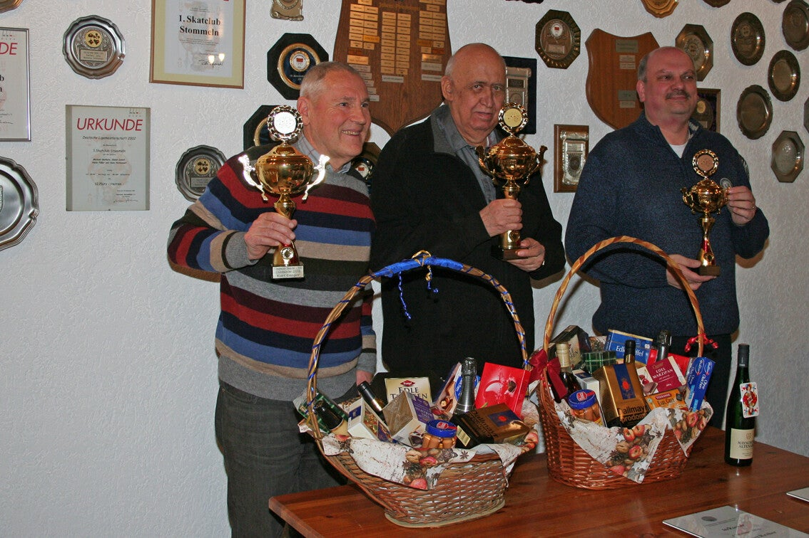
Pressebericht Pulheimer Sonntagspost vom 12.11.2016
Wanderpokal für den Vorsitzenden Kurt Langer
Im Oktober erspielt sich Kurt Langer am ersten Spieltag mit 11:1 Spielen 1293 Pkt. und am 2. Spieltag mit 17:1 Spielen 1680 Pkt. und wurde damit mit großem Vorsprung Monatssieger Oktober, wofür er zum zweiten Mal den aktuellen Wanderpokal vom Stellvertreter Ulrich Albanus entgegennehmen konnte.
Pressebericht Pulheimer Sonntagspost vom 22.10.2016
In der zweiten Serie des von Ulrich Albanus geleiteten SPD-Preisskat verwies der Vorsitzende des 1. Sintherner Skatclub Kurt Langer den bis dahin führenden Ulrich Albanus auf den zweiten Platz. Er erhielt neben dem 1. Preis den vom SPD Landtagsabgeordneten Guido van den Berg gestifteten Pokal. Den 3. Preis nahm Jürgen Opitz vom Glessener Skatclub " de vier Buure" entgegen.
Pressebericht Pulheimer Sonntagspost vom 15.10.2016
Am 27.09.2016 wurde der traditionelle Herbst-Preisskat gespielt.
1. Platz Herbert Kreber,
2. Platz Patricia Suhr,
3. Platz Joachim Jeske
4. Platz Kurt Langer
Nach dem 19. Spieltag liegen in der Jahresrangliste Herbert Kreber, Kurt Langer und Michael Buscher in Führung.
Kurt Langer nahm den aktuellen Wanderpokal als Monatssieger August entgegen.
Nach dem 16. Spieltag der Clubmeisterschaft verspricht die Jahresrangliste weiterhin spannende Spielabende.
Platz 1 belegt zur Zeit Kurt Langer mit 17479 Pkt., Platz 2 Michael Buscher mit 17366 Pkt., Platz 3 Herbert Kreber mit 17060 Pkt. und Platz 4 Joachim Jeske mit 16796 Pkt.
Pulheim, 03.08.2016 Pressebericht Pulheimer Sonntagspost vom 13.08.2016
Herbert Kreber holt sich den Wanderpokal des 1. Sintherner Skatclubs in seine Sammlung.
Der zehnte Wanderpokal seit der Gründung des Clubs im September 1992 befindet sich nun in der Sammlung von Herbert Kreber. Im Juli erspielte Herbert Kreber 2340 Pkt. und hatte damit 30 Punkte Vorsprung vor Michael Buscher. Die Freude war riesengroß, denn das knappe Ergebnis bescherte ihm zum fünften Mal den den aktuellen Wanderpokal. Der zehnte Wanderpokal wurde im August 2014 zum ersten Mal an Rudolf Röhrig vergeben. Ulrich Albanus, Joachim Jeske, Karl-Heinz Kohl und Kurt Langer erkämpften sich den Pokal bereits dreimal, Michael Buscher und Klaus Reinegger zweimal und Helmut Weyers einmal.
Die Jahresrangliste verspricht spannende Spiele in der Zukunft, da Platz eins bis 4 ziemlich dicht beieinander sind:
Platz 1 Michael Buscher mit 16284 Pkt., Platz 2 Herbert Kreber mit 16243 Pkt., Platz 3 Kurt Langer mit 16152 Pkt.,
Platz 4 Joachim Jeske mit 15693 Pkt.
Karl-Heinz Kohl wurde 2016 beim Pulheimer Stadfest Skat-Stadtmeister und nahm den Siegerpokal vom Bürgermeister der Stadt Pulheim entgegen.
Pressemitteilung Pulheimer Sonntagspost vom 24.06.2016
Am 21.06.2016 fand der traditionelle Sommer-Preisskat statt.
Platz 1 Kurt Langer 2012 Pkt.
Platz 2 Klaus Reinegger 1366 Pkt.
Platz 3 Michael Buscher 1087 Pkt.
Beim traditionellen Sommer-Preisskat spielen sich Kurt Langer, Klaus Reinegger und Michael Buscher an die Spitze. Eine Granatenserie mit 2012 Pkt. aus 17:0 Spielen bescherte Kurt Langer den 1. Platz des Sommer-Preiskats und eine Eintragung in die Granatenliste des Clubs, die mit den zehn besten Serien seit der Clubgründung 1992 geführt wird. Der zehnte Platz liegt inzwischen bei 2006 Pkt. Die Granatenliste wird von Ulrich Albanus mit 2329 Pkt. angeführt. Der Vorsitzende freut sich über inzwischen vier Eintragungen in dieser Liste; Platz 3 mit 2098 Pkt., Platz 4 mit 2096 Pkt., Platz 9 mit 2012 Pkt. und Platz 10 mit 2006 Pkt.
Der 12. Spieltag bescherte dem Vorsitzenden außerdem zum dritten Mal den aktuellen Wanderpokal als Monatssieger Juni und den 1. Preis des Sommer-Preisskats. In der Jahresrangliste rangieren noch Joachim Jeske, Michael Buscher und Herbert Kreber mit 8 Pkt. Vorsprung vor dem Vorsitzenden Kurt Langer. Für spannende Spielabende ist also gesorgt.
Pulheim, 14.04.2016
Monatssieger März 2016 wurde Herbert Kreber mit 3951 Pkt., auf den Plätzen 2 und 3 folgten Joachim Jeske, und Kurt Langer.
Nach 3 Spieltagen des 1. Sintherner Skatclubs im März stand der Monatssieger Herbert Kreber fest. Mit erspielten 3951 Pkt. ließ er Joachim Jeske und den Vorsitzenden Kurt Langer hinter sich. Als Monatssieger März nahm er zum dritten Mal den aktuellen Wanderpokal vom Vorsitzenden entgegen.
2015
Pressebericht Pulheimer Wochenende vom 23.12.2015
Im Dezember wurde der traditionelle Weihnachts-Preisskat gespielt.
1. Platz Michael Buscher
2. Platz Joachim Jeske
3. Platz Kurt Langer
Zum Abschluß des Jahres trafen sich die Skatfreunde des 1. Sintherner Skatclubs im Geyener Brauhaus zum internen Weihnachts-Preisskat. Die vorderen Plätze erreichten Michael Buscher, Joachim Jeske und Vorsitzender Kurt Langer. Der Abend verlief sehr harmonisch. Alle Teilnehmer konnten einen Sachpreis entgegennehmen.
Am 05. Januar 2016 findet neben der JHV die Siegerehrung der Clubmeister 2015 statt.
Gewinner der Clubmeisterschaft 2015.
Clubsieger Ulrich Albanus 22651 Pkt.
2. Clubmeister Kurt Langer 22131 Pkt.
3. Clubmeister Michael Buscher 21849 Pkt.
Neben dem Pokal und einer Urkunde erhielten alle drei einen gut gefüllten Präsentkorb.
Foto von links Kurt Langer, Ulrich Albanus und Michael Buscher

Pressebericht Pulheimer Wochenende vom 23.11.2015
Spannung in der Clubmeisterschaft 2015 bis zum Schluß! Seit der Gründung des 1. Sintherner Skatclubs von 1992 werden jedes Jahr drei Clubmeister ausgespielt, wovon der Erstplatzierte als Clubsieger hervorgeht. Die Clubmeisterschaft verlief auch 2015 bis zum letzten Spieltag sehr spannend. Ulrich Albanus konnte am letzten Spieltag seinen knappen Vorsprung mit 22651 Pkt. vor dem Vorsitzenden Kurt Langer 22131 Pkt und vor Michael Buscher 21849 Pkt. verteidigen. Gewertet wurden 18 aus 24 Spieltagen.
Ulrich Albanus wurde mit 2794 Pkt. Monatssieger November und erhielt vom Vorsitzenden Kurt Langer zum 2. Mal den aktuellen Wanderpokal. Monatssieger August, September, Oktober wurden die Skatfreunde Helmut Weyers, Michael Buscher und Joachim Jeske, von denen Michael Buscher auch bereits das 2. Mal den Wanderpokal übernehmen konnte.
Am vorletzten Wertungstag für die Clubmeisterschaft erspielte sich Volker Lich mit 1480 Pkt. den Tagessieg. Auf Platz zwei und drei folgten Ulrich Albanus und Vorsitzender Kurt Langer mit 1342 Pkt. und 1299 Pkt.
Ulrich Albanus, Kurt Langer und Michael Buscher belegen nach dem vorletzten Wertungstag 2015 die drei zu vergebenden Clubmeisterplätze. Der letzte Spieltag am 01.12. verspricht einen spannenden Verlauf, da die unterschiedlichen Streichergebnisse auch noch eine Rolle spielen. Platz 4 belegt zur Zeit Klaus Reinegger jedoch ca. 800 Punkte hinter Platz 3.
Spannend kann es bis zum letzten Spiel bleiben, da sowohl der Vorsitzende versucht Ulrich Albanus noch von Platz 1 zu verdrängen, wie auch Michael Buscher versuchen wird, eine noch bessere Platzierung als Platz 3 zu erreichen.
Pressebericht Pulheimer Wochenende vom 21.10.2015
Den von Ulrich Albanus ausgerichteten SPD-Preisskat gewann Kurt Langer, Vorsitzender des 1. Sintherner Skatclubs, gefolgt von Horst Becker "Wurringer Junge" und Richard Raebild aus Sinthern. Spannend ging es bis zum Schluß zu. Erst das letzte Spiel entschied über den Sieg von Kurt Langer, der mit 2138 Pkt. 11 Pkt. Vorsprung vor dem bis dahin in Führung liegendem Horst Becker hatte. Guido Vandenberg Mitglied des Landtags überreichte dem Sieger Kurt Langer den von ihm gestifteten Siegerpokal.
Pressemitteilung und anschließender Pressebericht vom Pulheimer Wochenende vom 12.08.2015
Wanderpokal für den Vorsitzenden Kurt Langer!
Am 1. Spieltag im Juli gelangen dem Vorsitzenden Kurt Langer und Klaus Reinegger eine Granatenliste über 2000 Punkte. Das gab es seit der Gründung des 1.Sintherner Skatclubs 1992 noch nicht. Der Vorsitzende hatte mit 2098 Pkt. die Nase vorn. Klaus Reinegger erspielte 2086 Pkt. und wurde mit diesem sensationellem Ergebnis nur Zweiter.
In der Granatenliste werden die besten zehn Ergebnisse seit der Clubgründung geführt. Nach diesem sensationellen Spieltag sieht die Granatenliste wie folgt aus:
Turniergranaten seit Sept.1992
- Cristian Köllgen 2118 Pkt.
- Kurt Langer 2098 Pkt.
- Kurt Langer 2096 Pkt.
- Klaus Reinegger 2086 Pkt
- Herbert Kreber 2085 Pkt.
- Herbert Kreber 2045 Pkt.
- Helmut Neumann 2040 Pkt.
- Kurt Langer 2006 Pkt.
- Karl-Heinz Kohl 2000 Pkt.
- 10.Klaus Reinegger 1969 Pkt.
1185 Pkt. reichten Kurt Langer am 2. Spieltag im Juli für den Monatssieger Juli und dem 2. Gewinn des aktuellen Wanderpokals.
Pulheim, 15. Juli 2015 Pressemitteilung:
Am 30.06.2015 wurde der Sommer-Preisskat gespielt.
1 Platz Michael Buscher
2. Platz Helmut Weyers
3. Platz Ulrich Albanus
Nach dem 3. Spieltag im Monat Juni hatte sich Michael Buscher ebenfalls entscheidend abgesetzt. Mit 4557 Pkt. wurde er Monatssieger Juni, wofür ihm der Vorsitzende Kurt Langer den Wanderpokal des Clubs überreichte.
Pressebericht Pulheimer Wochenende vom 05.06.2015
Spannender Kampf um den Monatssieger Mai. Klaus Reinegger wurde mit knappem Vorsprung vor Renate Gärtlein zum 2. Mal Gewinner des aktuellen Wanderpokals des Clubs. Aus zwei Serien erspielte sich: Klaus Reinegger 2240 Pkt., Renate Gärtlein 2223 Pkt., Peter Jäkel 2192 Pkt., Herbert Kreber 2142 Pkt. und Helmut Weyers 22137 Pkt. Nach dem 11. Spieltag befinden sich auf den Clubmeisterplätzen Ulrich Albanus mit 12423 Pkt. Kurt Langer mit 11959 Pkt. und Michael Buscher mit 11030 Pkt.
Pressebericht Pulheimer Wochenende vom 23.04.2015
Am 21.04.2015 wurde traditionelle Oster-Preisskat gespielt.
1. Platz Ulrich Albanus
2. Platz Richard Raebild
3. Platz Jürgen Odenthal
Den Oster-Preisskat, bei dem 2 Serien gespielt wurden , gewann Ulrich Albanus mit 3348 Pkt. souverän. Weitere Preisträger waren Richard Raebild, Jürgen Odenthal, Wolfgang Lamboy, Lothar Neumann, Norbert Götte, Peter Seidel und Ellen Weber als beste Dame.
Ulrich Albanus freute sich zusätzlich, dass er Monatssieger April wurde und den Vorsitzenden von der Spitze der Jahresrangliste verdrängen konnte. Platz 1 bis 3 in der Jahresrangliste belegen nach 8 Spieltagen Ulrich Albanus, Kurt Langer und Peter Meiß.
Am 07.04.2015 wurde der Frühjahrs-Preisskat gespielt.
1. Platz Kurt Langer
2. Platz Rufdolf Röhrig
3. Platz Klaus Reinegger
4 Platz Ulrich Albanus

Am 10.03. erspielte der Vorsitzende aus 20:1 Spielen 2006 Pkt. und hat somit mit 2096 und 2006 Pkt. wieder zwei Ergebnisse in der Top ten Granatenliste seit Clubgründung 1992. Der zehnte Platz liegt zur Zeit bei 1961 Pkt. Am 2. Spieltag im März verfehlte der Vorsitzende mit 1937 Pkt. aus 21:1 Spielen nur knapp die Granatenliste und wurde mit Abstand Monatssieger März. Der Wanderpokal wurde Kurt Langer vom stellvertretenden Vorsitzenden Helmut Weyers überreicht.
2014
Im Dezember 2014 wurde der Weihnachts-Preisskat gespielt.
1. Platz Herbert Kreber
2. Platz Kurt Langer
3. Platz Jürgen Odenthal
Alle Teilnehmer erhielten einen Preis.
Gewinner der Clubmeisterschaft 2014.
Clubsieger Herbert Kreber
2. Clubmeister Michael Buscher
3. Clubmeister Klaus Reinegger
Alle drei erhielten bei der Siegerehrung eine Urkunde, einen Pokal und einen gut gefüllten Frühstückskorb.
Am 20.12.2014 wurden Herbert Kreber, Michael Buscher und Klaus Reinegger als Clubmeister 2014 geehrt. Am letzten Spieltag kam es zu einem spannenden Endkampf. Erst kurz vor Schluss der Serie an Tisch 2 ging Klaus Reinegger hohes Risiko beim Reizen und konnte aufgrund guter Findung im Skat einen Null ouvert und einen Kreuz Solo gewinnen, wodurch er von Platz fünf auf den 3. Clubmeisterplatz vorrücken konnte. Dem Vorsitzenden Kurt Langer gelang es noch an Helmut Weyers, der bis dahin Platz drei inne hatte vorbeizuziehen, blieb aber Vierter hinter Klaus Reinegger.
Die Clubmeisterschaft verlief wie im Vorjahr äußerst spannend. Sie wurde erst am letzten Spieltag in den letzten 2 Spielen entschieden.
Die Top-ten belegten:
4. Kurt Langer 5. Helmut Weyers 6. Karl-Heinz Kohl 7. Peter Meiß 8. Joachim Jeske 9. Peter Seidel 10.Karl-Heinz Schmischke
Pressebericht Pulheimer Sonntagspost vom 02.12.2014 Karl-Heinz Kohl wurde mit 2782 Pkt. Monatssieger November und übernimmt zum 2. Mal den aktuellen Wanderpokal des Clubs. Der letzte Wertungstag für die Clubmeisterschaft 2014 am 02.12.2014 verspricht Spannung. Platz 1 bis 3 erhalten traditionell Pokal, Urkunde und einen gut gefüllten Präsentkorb. Um die Plätze kämpfen nach dem vorletzten Spieltag Herbert Kreber, Michael Buscher, Helmut Weyers, der Vorsitzende Kurt Langer und Klaus Reinegger. die bisher die Nase vorn haben.
Pressebericht Pulheimer Wochenende vom 28.11.2014.
Strahlende Gewinner beim offenen Sonder-Skatturnier des 1. Sintherner Skatclubs im Geyener Brauhaus. Am Dienstag 25.11.2014 wurde im Geyener Brauhaus ab 11 Uhr ein Preis-Skatturnier, offen für alle Skatfreunde gespielt. Die Spielleitung wurde vom Vorsitzenden Kurt Langer, der zum Turnier eingeladen hatte, übernommen. Mit 34 Teilnehmern, darunter 6 Damen, war das Turnier wieder gut besucht. Auf dem Treppchen landeten nach 2 Serien:
Klaus Reinegger „1. Sintherner Skatclub“ 2958 Pkt.
Ewald Sokoll „Wurringer Junge“ 2643 Pkt.
Ulrich Albanus „1. Sintherner Skatclub“ 2566 Pkt.
Beste Dame wurde Christa Daudert, vom Skatclub „Gut Blatt Bergisch Gladbach“, die mit 2159 Pkt. Platz 6 errang. Joachim Jeske, Horst Becker, Heinrich Stricker, Friedhelm Lattek und Heinz Haferung konnten ebenfalls ein Preisgeld entgegen nehmen.
Trostpreise konnten Birthe Haamann, Rosi Schöneborn und Werner Opora entgegennehmen.
Pressebericht Pulheimer Wochenende vom 06.11.2014
Im Oktober wurde der traditionelle Herbst-Preisskat gespielt.
1. Platz Herbert Kreber
2. Platz Karl-Heinz Schmischke
3. Platz Kurt Langer
Strahlende Gewinner beim traditionellen Herbst-Preisskat des 1. Sintherner Skatclubs. Auf das Treppchen schafften es Herbert Kreber, Karl-Heinz Schmischke und Kurt Langer. Renate Gärtlein und Peter Meiß konnten beim Herbst-Preisskat auch noch ein Preisgeld entgegen nehmen. Karl-Heinz Schmiscke nahm seinen Preis in Empfang und wartete nicht auf den Fototermin.
Auf dem Foto von links: Kurt Langer, Renate Gärtlein, Herbert Kreber und Peter Meiß
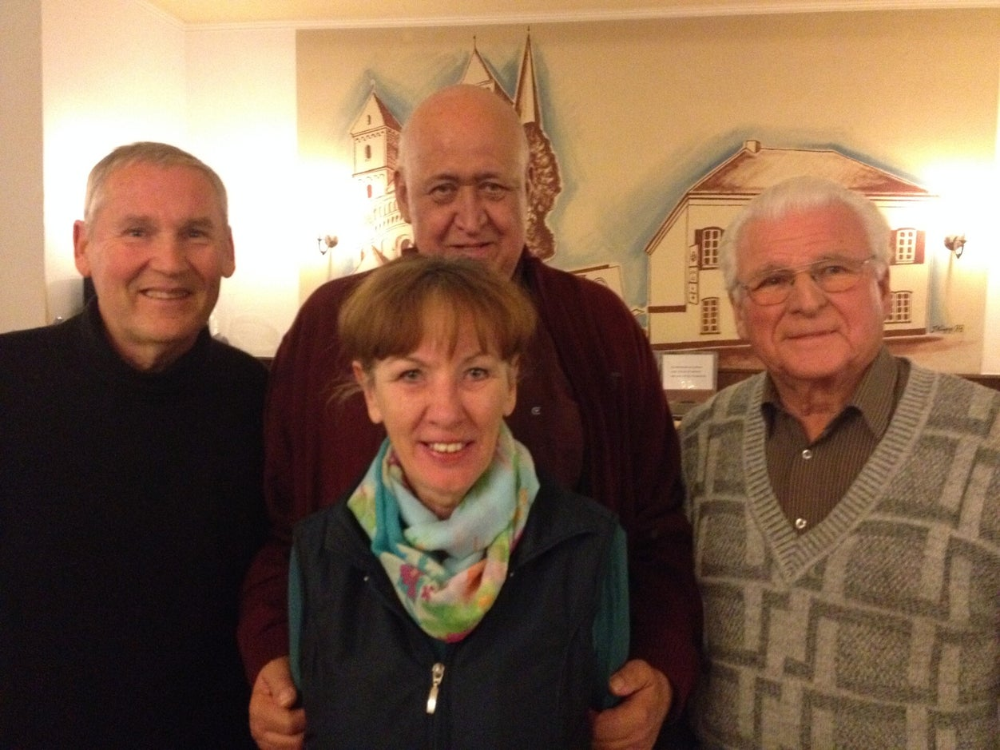
Pressebericht Kölner Rundschau vom 19.08.2014
Der Skatspieler Helmut Weyers war in dieser Sommersaison bei den Spielabenden des 1. Sintherner Skatclubs einfach nicht zu bremsen. Nach dem Vorsitzenden Kurt Langer und Peter Seidel ist Weyers nun der Dritte, dem es gelungen ist, den Wanderpokal dreimal in Folge zu gewinnen. Nach den Regeln des Sintherner Skatclubs geht die Trophäe nach einem solchen Hattrick ins Eigentum des Gewinners über. Den Wanderpokal spielt der Sintherner Skatclub jeden Monat aus. Weyers erzielte im Mai, Juni und Juli Spitzenergebnisse. Er spielte sich gleichzeitig an die Spitze der Jahresrangliste; zum Leidwesen von Michael Buscher, der auf den 2. Rang abrutschte. Klaus Reinegger hielt dagegen seinen dritten Platz. Monatssieger Januar wurde Herbert Kreber; Februar Michael Buscher, März Karl-Heinz Schmischke, April Klaus Reinegger, Mai, Juni und Juli: Helmut Weyers, August Rudolf Röhrig, September und November Karl-Heinz Kohl, Oktober Herbert Kreber. Die Wanderpokale 1-9 gingen ins Eigentum von: Kurt Langer, Manfred Hallmann, Ingo Dietze, nochmal an Ingo Dietze, Karl-Heinz Kohl, Kurt Langer, Peter Seidel, Kurt Langer und Helmut Weyers.
Von Mai bis Juli schaffte Helmut Weyers mit 1832, 1623, 1518, 1483, und 1244 Pkt. einige Superergebnisse, die ihn an die Spitze der Jahresrangliste katapultierten.
Pressebericht Pulheimer Wochenende vom 16.07.2014 und Pulheimer Sonntagspost vom 09.08.2014
Eine richtige Sommerpause existiert unter Skatbrüdern anscheinend nicht. Die Gewinner des diesjährigen traditionellen Sommer-Preisskats, gespielt am 15. Juni im Hotel Schugt in Brauweiler, sind Michael Buscher, Helmut Weyers, Peter Meiß und Kurt Langer.

Pressebericht Kölner Rundschau vom 25.06.2014
Helmut Weyers nicht zu stoppen! Nach Peter Seidel und Kurt Langer ist Weyers der Dritte Spieler des 1.Sintherner Skatclubs, dem es gelang, den monatlich neu ausgespielten Wanderpokal drei Monate in Folge zu gewinnen. Helmut Weyers schaffte von Mai bis Juli einige Superergebnisse, die ihn an die Spitze der Jahresrangliste katapultierten und zum Monatssieger Mai, Juni und Juli machten. Somit ging der Wanderpokal des Clubs nun in das Eigentum von Helmut Weyers über. Die Jahresrangliste führt aktuell aber Klaus Reinegger vor Michael Buscher und Helmut Weyers an. Inzwischen ist der Vorsitzende Kurt Langer von der Endrunde der Deutschen Skat-Einzelmeisterschaft in Ulm zurückgekehrt. Kurt Langer hatte sich zum 6. Mal für die Endrunde qualifiziert. Obwohl das notwendige Kartenglück für die vorderen Plätze nicht reichte, freute sich Langer zusammen mit weiteren Skatspielern und Skatspielerinnen aus der Region Köln erneut bei der Endrunde dabei gewesen zu sein.
Im April 2014 wurde der Oster-Preisskat gespielt.
Platz 1 Heinz Haferung, 2974 Pkt.
Platz 2 Herbert Kreber 2 677 Pkt.
Platz 3 Joachim Jeske 2602 Pkt.
Platz 4 Karl-Heinz Schmischke 2598 Pkt.
Aus dem mit 36 Teilnehmern, darunter 5 Damen, gut besuchten traditionellen Oster-Skatturnier ging nach zwei Serien mit erspielten 2974 Pkt. Heinz Haferung von den „Wurringer Junge“ als Sieger hervor. Auf Platz zwei bis vier landeten Herbert Kreber, Joachim Jeske und Karl-Heinz Schmischke vom Sintherner Skatclub mit 2677, 2602 und 2598 Pkt.
Beste Dame wurde Hilde Hill aus Köln mit 2470 Pkt. auf dem fünften Platz. Weitere Preisträger waren Ellen Weber, Helmut Byboks, Eberhard Reuter und Siegfried Kiaupa. Trostpreise erhielten Barbara Link, Ulrich Albanus und Rolf Montag, die noch zur Siegerehrung blieben. Der Vorsitzender des 1.Sintherner Skatclub übernahm die Organisation des Turniers und spielte selbst nicht mit.
Im April 2014 wurde der Frühjahrs-Preisskat gespielt.
Platz 1 Jürgen Odenthal
Platz 2 Karl-Heinz Schmischke
Platz 3 Helmut Weyers
Weitere Preisträger waren: Peter Jäkel und Karl-Heinz Kohl.
Ulrich Albanus u. Jürgen Odenthal konnten einen lupenreinen Grand ouvert spielen. Sie erhielten eine Urkunde für das seltene Spiel.
Erfreulich die Neuaufnahmen im Jahre 2014: Michael Buscher, Herbert Kreber, Hans Hein und Rudolf Röhrig.
Die aktuelle Granatenliste:
1. Christian Köllgen 2118 Pkt.
2. Kurt Langer 2096 Pkt.
3. Herbert Kreber 2085 Pkt.
4. Herbert Kreber 2045 Pkt.
5. Helmut Neumann 2040 Pkt.
6. Karl-Heinz Kohl 2000 Pkt.
7. Holger Horatz 1965 Pkt.
8. Hans-Peter Köllgen 1961 Pkt.
9. Manfred Hallmann 1948 Pkt.
10.Kurt Langer 1910 Pkt.
Joachim Jeske wurde Ende des Jahres 2014 für zehnjährige treue Mitgliedschaft geehrt.
Pressebericht Pulheimer Sonntagspost vom 22.02.2014
Der 1. Sintherner Skatclub freute sich über drei neue Skatfreunde, die zum Jahresbeginn in den Club aufgenommen wurden. Herbert Kreber, der vom Skatclub "Ärm Söck" nach Sinthern wechselte, erspielte sofort am ersten Spieltag ein Top-Ergebnis, dass es schon am zweiten Spieltag für den Monatssieger und somit für den Erhalt des Wanderpokals reichtte. Rückkehrer Michael Buscher holte am ersten Spieltag 1494 Pkt. und führt nach dem 23. Spieltag die vereinsinterne Rangliste an. Auch der dritte Neuzugang Hans Hein ließ am dritten Spieltag sein Können aufblitzen und setzte mit 1542 Pkt ein Zeichen seiner Spielstärke.
Pressebericht Kölner Rundschau vom 08.03.2014
Michael Buscher wurde Monatssieger Februar 2014. Der Vorsitzende überreichte ihm den aktuellen Wanderpokal des Clubs. In der Jahresrangliste sind jetzt Michael Buscher, Klaus Reinegger und Kurt Langer vorne.
Traurig stimmte den Club der Tod von Klaus Rabe und Jürgen Funkenhaus, denen wir vom Skatclub die letzte Ehre erweisen konnten. Wir werden die Skatfreunde immer in guter Erinnerung behalten.
Willi Zollner musste aus gesundheitlichen Gründen den Club verlassen, da er inzwischen in einem Pflegeheim in Zülpich wohnt. Mathias Schmitz konnte aus Zeitgründen 2014 nicht mehr an den Clubabenden teilnehmen.
2013
Gewinner der Clubmeistersschaft 2013
Clubsieger Kurt Langer 22177 Pkt.
2. Clubmeister Peter Seidel 21444 Pkt.
3. Clubmeister Willi Zollner 20407 Pkt.
Pressebericht Pulheimer Sonntagspost
Clubmeister 2013 sind Kurt Langer, Peter Seidel und Willi Zollner. Bei den Skatbrüdern war es bis zum Schluß spannend. Am letzten Wertungstag gab es ein Kopf an Kopf Rennen zwischen dem Vorsitzenden Kurt Langer und Peter Seidel, dass Kurt Langer mit 22177 Pkt. für sich entscheiden konnte. Peter Seidel wurde mit 21444 Pkt. 2. Clubmeister und Willi Zollner verwies mit 20407 Pkt. Joachim Jeske, der 20112 Pkt. erspielte auf den undankbaren vierten Platz. Mit dem Clubmeistertitel 2013 gelang Kurt Langer ein lupenreiner Hattrick, da er bereits 2011 und 2012 auch Jahressieger bei der Clubmeisterschaft wurde. Ein weiterer Erfolg war für Kurt Langer das Erreichen der Endrunde zur Deutschen Skat-Einzelmeisterschaft zum dritten Mal in Folge.
Alle drei Clubmeister erhielten bei der Siegerehrung eine Urkunde, einen Pokal und einen gut gefüllten Frühstückskorb.
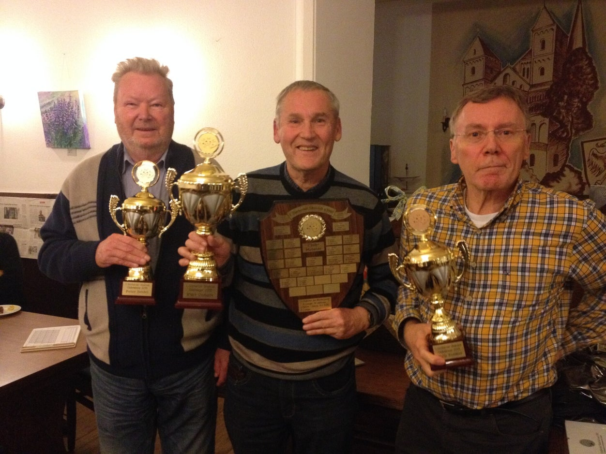
Pulheim, 16.Dez.2013 Pressebericht Kölner Rundschau vom 24.12.2013
Am 20. Dezember wurde der Weihnachts-Preisskat gespielt.
1. Platz Peter Seidel
2. Platz Peter Meiß
3.Platz Ulrich Albanus
Die adventliche Runde war fast vollständig. Mit einem Weihnachtspreisskat beendet der 1.Sintherner Skatclub das Spieljahr 2013. Es nahmen 19 von 20 Mitgliedern am Weihnachtspreisskat teil. Alle Teilnehmer erhielten einen Preis. Klaus Rabe konnte zum großen Bedauern aller Clubmitglieder aus gesundheitlichen Gründen nicht teilnehmen. Er freute sich über den anschließenden Besuch des Vorsitzenden, der ihm einen Präsentkorb mit den besten Genesungswünschen von allen Skatfreunden des Clubs überreichte. Den Weihnachts-Preisskat gewann Peter Seidel vor Peter Meiß und Ulrich Albanus. Auf den Plätzen vier bis 19 folgten Kurt Langer, Karl-Heinz Schmischke, Peter Jäkel, Mathias Klinkau, Mathias Schmitz, Joachim Jeske, Patricia Suhr, Dieter Faßbender, Renate Gärtleinm Karl-Heinz Kohl, Helmut Weyers, Burkhard Thiemann, Jürgen Odenthal, Klaus Reinegger, Willi Zollner und Jürgen Funkenhaus.
Auch in diesem Jahr konnten Wünsche zur Preisgestaltung geäußert werden, die dann bei der Preisbeschaffung durch den Vorsitzenden berücksichtigt wurden. Nach einem harmonischen Abend wurden dann die Preise nach den erzielten Spielpunkten an die Skatfreunde übergeben.
Pressebericht Kölner Rundschau vom 14.12.2013
Beim für alle Skatfreunde und - Freundinnen offenen Sonder-Preisskatturnier im Geyener Brauhaus wurde Kurt Langer nach zwei 48-er Serien mit 2643 Pkt. aus 29:3 Spielen Turniersieger. Er gewann den Siegerpokal und ein stattliches Preisgeld. Weitere Preisträger waren Klaus Reinegger mit erspielten 2466 Pkt. aus 24:3 Spielen und belegt Platz 2. Klaus Heinrich landete mit 2422 Pkt. aus 24:3 Spielen auf Platz 3. Weitere Preisträger waren Bodo Holtkamp, Werner Bleser, Günter Hahn, Irmgard Hahn als beste Dame von 3 teilnehmenden Damen. Aufgrund der hohen Resonanz, einem fünfundzwanziger Teilnehmerfeld, soll das Turnier einmal jährlich stattfinden.
Liebe Skatfreunde,
hier wie jedes Jahr ein Rückblick auf die Ergebnisse des Jahres 2013.
Clubsieger 2013 wurde Kurt Langer mit 22177 Pkt.
2. Clubmeister 2013 wurde Peter Seidel mit 21744 Pkt. 3. Clubmeister Willi Zollner mit 21568 Pkt. 4.Joachim Jeske mit 20212mPkt. 5. Helmut Weyers mit 19940 Pkt. 6. Klaus Reinegger mit 19346 Pkt. .
7. Jürgen Odenthal mit 18744 Pkt. 8. Ulrich Albanus mit 18590 Pkt. 9. Peter Meiß mit 17339 Pkt.
10. Peter Jäkel
Im Februar wurde Kurt Langer Monatssieger und bekam den Wanderpokal für einen Monat mit nach Hause.
Jahressieger wurde Kurt Langer auch bei den Skatclubs „Reizende Uffze Köln“ und „Bundeswehr Skatclub Köln von 1978“ womit das Tripple gelang.
Ein weiteres Tripple schaffte Kurt Langer mit dem Gewinn des Wanderpokals in den Monaten August, September und Oktober 2013, wodurch der 3. Wanderpokal in sein Eigentum überging.
Pressebericht Pulheimer Sonntagspost vom 30.11.2013
Jürgen Odenthal ist der Sieger des Monats November. Mit beachtlichen 3179 Pkt. erspielt sich Jürgen Odenthal erstmals den neuen Wanderpokal des Clubs. Am 12. November legte Jürgen Odenthal mit 1811 Pkt. knapp unterhalb einer Granatenserie mächtig vor. In der 2. Serie am 26. November schaffte Jürgen Odenthal 1368 Pkt. und hatte damit klar die Nase vorn, vor Karl-Heinz Kohl und dem Vorsitzenden Kurt Langer. Jürgen Odenthal nahm mit großer Freude den Wanderpokal vom Vorsitzenden entgegen.
Pressebericht Pulheimer Wochenende vom 10.11.2013
Kurt Langer mit lupenreinem Hattrick. Der im August 2013 neu ausgesetzte 8. Wanderpokal des 1. Sintherner Skatclubs hatte nur 3 Monate Laufzeit für die Skatfreunde des Clubs, da Vorsitzender Kurt Langer Monatssieger August, September und Oktober 2013 wurde, womit der Pokal nun in die Sammlung des Vorsitzenden wandert.
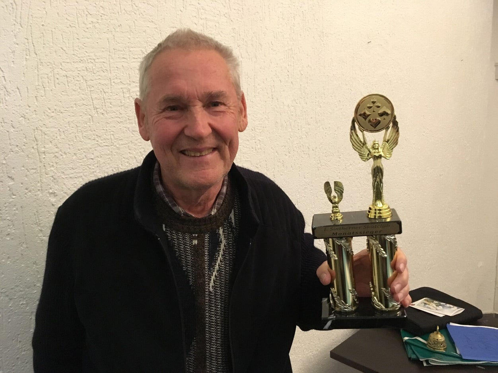
Seit der Gründung des 1. Sintherner Skatclubs 1992 hatten die Wanderpokale 1-7 mehrere Jahre Laufzeit bis sie nach fünfmaligem Gewinn oder dreimaligem Gewinn in Folge in den endgültigen Besitz des Gewinners übergingen.
Die Pokale 1, 6 und 8 befinden sich nun in der Sammlung von Kurt Langer.
Pokal 2 erkämpfte sich Manfred Hallmann im Kopf an Kopf Rennen mit dem Vorsitzenden. Den 3. und 4. Pokal sicherte sich Ingo Dietze. Pokal Nr. 5. ging an Karl-Heinz Kohl. Pokal Nr. 7. erkämpfte sich Peter Seidel nach viermaligem Erfolg, drei mal in Folge als Monatssieger Mai, Juni und Juli 2013 im Kopf an Kopf Rennen mit dem Vorsitzenden und Karl-Heinz Schmischke, die den 7. Pokal beide bereits 4x erhalten hatten.
Nach dem vorletzten Wertungs-Spieltag für die Clubmeisterschaft 2013 am 12.11.stehen auf den begehrten Clubmeisterplätzen vorne: Kurt Langer 21468 Pkt., Peter Seidel 21444 Pkt. und Willi Zollner 20407 Pkt.
Spannender kann der letzte Wertungstag am 26.11. kaum sein, da der Vorsprung an der Spitze gerade mal 24 Punkte ausmacht. Auf dem vierten Platz erhofft sich Joachim Jeske, zur Zeit mit 20112 Pkt. noch den Sprung auf Platz drei.
Pressebericht Pulheim News
Anfang Oktober 2013 wurde der traditionelle Herbst-Preisskat gespielt.
1. Platz Renate Gärtlein 1384 Pkt.
2. Platz Kurt Langer 1342 Pkt.
3. Platz Willi Zollner 1306 Pkt.
4. Platz Jürgen Odenthal 1195 Pkt.
Foto v. li. Willi Zollner, Kurt Langer, Renate Gärtlein und Jürgen Odenthal

Pressebericht Kölner Rundschau vom 09.10.2013
Der Vorsitzende des 1. Sintherner Skatclubs schwebt auf "Wolke 7".
Bei der 32.Pulheimer Skatmeisterschaft, anlässlich des Pulheimer Stadtfestes, wurde Kurt Langer mit 2736 Punkten Pulheimer Skat-Stadtmeister und konnte neben einem Preisgeld die von Bürgermeister Frank Keppeler gestiftete Trophäe entgegen nehmen. 2. und 3. Gewinner wurden Manfred Hallmann mit 2601 Pkt. und Werner Schmitz mit 2567 Pkt. Weitere Sachpreise gab es bis Rang 9.
Beim SPD-Preisskat im Sintherner Bürgerhaus erzielte Kurt Langer mit 2822 Pkt. den 2. Platz mit nur 6 Spielpunkten hinter dem VG 50 Präsidenten Heinz Haferung. Bei seinem 1. Sintherner Skatclub wurde Kurt Langer mit 2509 Pkt. Monatssieger August und mit 2513 Pkt. Monatssieger September, was ihm gleich 2 Mal hintereinander den neu ausgesetzten Wanderpokal einbrachte. Am 20. Spieltag des 1. Sintherner Skatclubs landete Kurt Langer auf Platz 1 vor Klaus Reinegger und Renate Gärtlein und verdrängte damit Peter Seidel von Platz 1 der Jahresrangliste. Auch beim Bundeswehr-Skatclub "Reizende Uffze Köln" war Kurt Langer sehr erfolgreich. In einem Vergleichskampf mit der Dienststelle Köln-Wahn belegte er beim Heimspiel den 2. Platz und beim Rückspiel in Wahn mit großem Vorsprung den ersten Rang. In der Jahresrangliste der Reizenden Uffze kletterte Langer nach diesen Erfolgen auf Platz 2 hinter LV 5 Präsident Wilfried Schlicht. Darüber hinaus wurde Kurt Langer beim "1. Bundeswehrclub Köln von 1979" zum 7. Mal Tagessieger in diesem Jahr und liegt damit unangefochten auf Platz 1 der Clubmeisterschaft. Besonders freute sich Langer, dass Ulrich Albanus und er am letzten Spieltag am 07.09. mit überdurchschnittlichen Punkten entscheidend dazu beitrug, dass der nicht mehr geglaubte Klassenerhalt in der Oberliga mit dem 1. Sintherner Skatclub geschafft werden konnte.
Beim 1. Sintherner Skatclub gelang Peter Seidel ein lupenreiner Hattrick. Er wurde Monatssieger Mai, Juni und Juli und bekam dafür den aktuellen Wanderpokal für seine Sammlung. Außerdem belegte er am 22.01. mit 1580 Pkt. Platz 1, am 02.04. mit 1355 Pkt. Platz 1, am 11.06. mit 1436 Pkt. Platz 2, am 10.12. mit 1732 Platz 1 beim Weihnachtspreisskat.
Clubmeister Willi Zollner kann ebenfalls auf weitere Erfolge zurückblicken: er belegte an den Spieltagen 08.01. mit 1.488 Pkt. Platz 3, am 05.03. mit 1537 Pkt. Platz 2, am 14.05. mit 1508 Pkt. Platz 1.
Willi Zollner gewann außerdem das seit Jahren ausgerichtete „Willi Dönges Gedächtnisturnier", wofür er den Wanderpokal neben einem Preisgeld entgegennehmen konnte.
Ulrich Albanus, top ten Spieler, erspielte am 05.02. mit 1601 Pkt. Platz 1, am 30.04. mit 1.269 Pkt. Platz 1, am 06.08. mit 1449 Pkt. Platz 2, am 17.09. mit 1412 Pkt. Platz 2, und war am letzten Ligaspieltag mit entscheidend beteiligt, den Klassenerhalt zu meistern. Außerdem wurde er Jahressieger beim Skatclub „De 4 Boore“
Renate Gärtlein am 1. Spieltag Pechvogel, da sie eine Minusserie spielte, aber am 15.10. mit 1384 Pkt. Gewinnerin des Herbst-Preisskat wurde.
Joachim Jeske, top ten Spieler, belegte den undankbaren 4. Platz in der Jahresrangliste,
Mathias Klinkau belegte am 28.05. mit 1561 Pkt. Platz 1.
Karl-Heinz Kohl belegte am 20.08.mit 1.401 Pkt. Platz 2, am 26.11. mit 1455 Pkt. Platz 2.
Außerdem schaffte Karl-Heinz Kohl den 2. Platz in der Jahreswertung des Skatclubs „de 4 Boore“
Peter Meiß kehrte am 01.01.2013 zurück in den Club und belegte am 05.02. er mit 1438 Pkt. Platz 2, am 20.08. mit 1.521 Pkt. Platz 1, am 10.12 Platz 2 beim Weihnachtspreisskat.
Jürgen Odenthal, top ten Spieler, belegte am 22.01. mit 1433 Pkt. Platz 2, wurde Monatssieger Januar,
am 29.10. Pechvogel, da er eine Minusserie mit 1 Minuspunkt spielte, am 12.11. mit 1811 Pkt. Platz 1, knapp unter
Granatenliste belegte und Monatssieger November wurde.
Klaus Rabe Mitglied seit 01.01.2013, belegte am 29.10. mit 1531 Pkt. Platz 1.
Klaus Reinegger, top ten Spieler, belegte am 08.01. mit 1701 Pkt. Platz 1, für die Zwischenrunde zur Deutschen Einzelmeisterschaft und die Endrunde qualifiziert, Am 24.11. Preisträger beim Ranglistenturnier in Erp, am 03.12. Platz 2 beim Skatturnier TT. und Platz 4 der Jahres-Rangliste bei den „Reizenden Uffzen“, Platz 3 beim Weihnachtspreisskat „Reizende Uffze“
Karl-Heinz Schmischke belegte am 05.03 mit 1749 Pkt. Platz 1, wurde Monatssieger März, belegte am 25.6. mit 1352 Pkt. Platz 1 und wurde Gewinner des Sommerpreisskats.
Patricia Suhr, Mitglied ab 01.01.2013, belegte am 16.4. mit 1.332 Pkt. Platz 1, wurde Gewinnerin des Früjahrspreisskat und am 09.07. mit 1332 Pkt. Platz 1. beim traditionellen Sommer-Preisskat.
Helmut Weyers am 17.09. mit 1525 Pkt. Platz 1 und Platz 1 beim Skatturnier in Worringen.
Im Jahre 2013 wurden mit Patricia Suhr und Klaus Rabe 2 neue Mitglieder in den Club aufgenommen.
Pulheim, 12.09.2013 Pressemitteilung:
Der neu ausgesetzte Wanderpokal des 1. Sintherner Skatclubs wurde dem Vorsitzenden Kurt Langer von seinem Stellvertreter Helmut Weyers überreicht, nachdem er im August mit 2509 Pkt. die Nase vorne hatte. Seine Verfolger Peter Jäkel und Peter Meiß erspielten 2372 und 2242 Pkt.
In der Jahresrangliste liegen nun vorne auf den umkämpften Clubmeisterplätzen: Peter Seidel mit 19720 Pkt. Kurt Langer mit 18434 Pkt. und Willi Zollner mit 17961 Pkt.
Pressebericht Kölner Rundschau vom 03.09.2013
Peter Seidel nimmt den 7. Wanderpokal des 1.Sintherner Skatclubs endgültig mit in seine Sammlung. Zum dritten mal hintereinander „Mai, Juni und Juli“ schafft Peter Seidel es Monatssieger des Clubs zu werden. Da er den Pokal bereits im Mai 2012 das erste mal entgegen nahm, schließt er zum Vorsitzenden Kurt Langer und zu Karl-Heinz Schmischke auf, die den Pokal bereits 4x erspielt hatten. Peter Seidel darf den Pokal aber nach den Statuten des Clubs behalten, da er ihn zum dritten Mal hintereinander ergattern konnte. Für den nächsten Monat stellt der Club den 8. Wanderpokal, bei dem die bisherigen Erfolge auf den 7. Pokal von allen gelöscht sind.
Pressembericht Pulheimer Wochenende vom 01.07.2013
Peter Seidel wird auch Monatssieger Juni und baut die Gesamtführung beim 1. Sintherner Skatclub aus.
Am 13. Spieltag konnten sich der Vorsitzende Kurt Langer und Peter Seidel, die aus dem 12. Spieltag 1651 Pkt. und 1436 Pkt. vorgelegt hatten, berechtigte Hoffnungen auf den Monatssieger Juni machen. Peter Seidel legte offensiv los und erspielte aus 14:3 Spielen 1303 Pkt. Kurt Langer dem gleichen Tisch zugelost, reichte es nur zu 9:3 Spielen und 810 Pkt, sodass am Ende Peter Seidel aus beiden Spieltagen 2739 Pkt. auf dem Konto hatte und der Vorsitzende Kurt Langer mit 2461 Pkt. Zweiter wurde. Den dritten Platz belegte Klaus Rabe mit 2317 Pkt..
Joachim Jeske erwischte es eiskalt, da er nur 260 Pkt. aus 6:4 Spielen holte und dadurch vom zweiten Platz der Jahresrangliste auf den fünften Platz abrutschte. Helmut Weyers kletterte auf den dritten Platz mit 13422 Pkt. hinter Peter Seidel 14361 Pkt. und Willi Zollner 13733 Pkt.
Pressebericht Pulheimer Sonntagspost vom 29.06.2013
Mit 2602 Pkt. aus zwei Spieltagen im Mai wurde Peter Seidel Monatssieger Mai. Er ließ Peter Jäkel mit 2515 Pkt. und Mathias Klinkau mit 2493 Pkt. hinter sich. Am 1. Spieltag im Juni holte Peter Seidel aus 11:0 Spielen mit 1436 Pkt. den zweiten Platz hinter dem Vorsitzenden Kurt Langer, der aus 16:1 Spielen 1651 Pkt. machte. Peter Seidel reichten die Punkte um mit 13058 Pkt. auf Platz eins der Jahresrangliste zu landen. Seine Verfolger Joachim Jeske und Willi Zollner 12997 und 12951 Pkt. Der Vorsitzende kurt Langer kletterte durch seine gute Serie auf Platz vier der Jahresrangliste.
Pressebericht Pulheimer Wochenende vom 22.05.2013
Im April 2013 wurde der traditionelle Frühjahrs-Preisskat gespielt.
1. Platz Patricia Suhr
2. Platz Peter Meiss
3.Preis Jürgen Odenthal
4. Preis Klaus Rabe
Joachim Jeske ist mit 3336 Pkt aus drei Spieltagen Monatssieger April geworden. Beim Frühjahrs-Preisskat hatte Patricia Suhr mit 1332 Pkt. die Nase vorn. Weitere Preisträger waren Peter Meiß, Jürgen Odenthal und Klaus Rabe. In der Jahresrangliste liegen Willi Zollner 10909 Pkt., Joachim Jeske 10520 Pkt. und Helmut Weyers 10491 Pkt. nach zehn Spieltagen vorne.
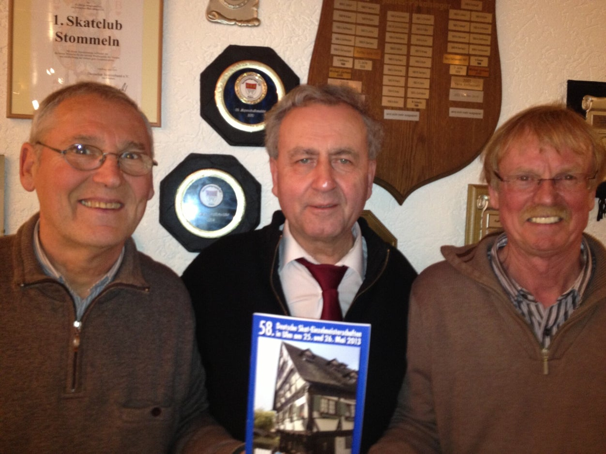
Im April 2013 wurde der Oster-Preisskat gespielt.
Platz 1 Egon Janssen aus Königsdorf 2707 Pkt.
Platz 2 Hilde Hill aus Köln 2630 Pkt. beste Dame von sieben teilnehmenden Damen
Platz 3 Helmut Weyers Si.Skatclub 2544 Pkt.
Platz 4 Heinz Haferung VG 50 Präsident 2415 Pkt.
Weitere Preisträger wurden Peter Seidel vom Sintherner Skatclub, Lars Fleischer aus Stommeln, Willi Zollner vom Sintherner Skatclub, Heinz Sabranski aus Stommeln, Klaus Rabe Sintherner Skatclub und Ellen Weber aus Köln.
Pressebericht Kölner Rundschau vom 26.03.2013
Bereits zum 4. Mal hat sich der Vorsitzende des 1. Sintherner Skatclubs Kurt Langer den aktuellen Wanderpokal des Clubs erspielt. An den beiden Spieltagen im Februar erspielte er 2525 Pkt. aus 23:2 Spielen und wurde Monatssieger Februar. Dicht auf den Fersen waren gleich drei Skatfreunde; Klaus Reinegger mit 2457 Pkt., Peter Meiß mit 2441 Pkt. und Helmut Weyers mit 2435 Pkt. Der stellv. Vorsitzende Helmut Weyers überreicht Kurt Langer den aktuellen Wanderpokal des 1. Sintherner Skatclubs, den er nun bereits zum vierten Mal erspielt hat.
Pulheim, 24.Jan. 2013 Pressemitteilung:
Jürgen Odenthal erster Monatssieger des 1. Sintherner Skatclubs! Der Start ins neue Jahr ist Jürgen Odenthal hervorragend gelungen. Er erspielte sich in den beiden Januar Serien aus 25:1 Spielen insgesamt 2896 Pkt., wurde Monatssieger und erhielt dafür den aktuellen Wanderpokal des Clubs.
Peter Seidel schaffte es ebenfalls auf beachtliche 2785 Pkt. aus 25:2 Spielen, wie Willi Zollner der auf 2634 Pkt. aus 26:1 Spielen kam.
2012
Liebe Skatfreunde,
hier wie jedes Jahr ein kurzer Rückblick auf die Ergebnisse von 2012.
Clubsieger Kurt Langer mit 16014 Pkt.
2. Clubmeister Ulrich Albanus 13938 Pkt.
3. Clubmeister Joachim Jeske 13468 Pkt.
Herzlichen Glückwunsch dem Clubsieger und den Clubmeistern 2012
Die Top- ten belegten:
4. Klaus Reinegger 13338 Pkt.
5. Helmut Weyers 13201 Pkt.
6. Karl-Heinz Kohl 12565 Pkt.
7. Peter Jäkel 11745 Pkt. 8. Mathias Klinkau 11306 Pkt. 9. Jürgen Funkenhaus 11301 Pkt.
10. Karl-H Schmischke 11221 Pkt.
Pulheim, 22.12. 2012 Pressemitteilung:
Am 13.12.2012 wurde der Weihnachts-Preisskat gespielt.
Platz 1 Wolfgag Klinkau 1606 Pkt.
Platz 2 Karl-Heinz Kohl 1596 Pkt.
Platz 3 Helmut Weyers 1261 Pkt.
Der 1. Sintherner Skatclub richtete unter seinen Mitgliedern den Weihnachtspreisskat aus. Den von der Kreissparkasse anlässlich des 20-jährigen Bestehens des Sintherner Skatclubs gestifteten Betrag in Höhe von 100 € gewann Wolfgang Klinkau mit 1606 Pkt. der den 1. Platz belegte. Der Club bedankte sich bei der Kreissparkasse für diese Spende. Auf den Plätzen 2 und drei folgten Karl-Heinz Kohl und Helmut Weyers mit 1596 und 1261 Pkt., die sich einen Sachpreis und Geldpreis aus den vom Vorsitzenden zusammengestellten Preisen aussuchen konnten. Alle Teilnehmer erhielten einen Preis und eine kleine Aufmerksamkeit für Ihre Partner.
Gewinner der Clubmeisterschaft 2012.
Clubsieger Kurt Langer 16014 Pkt.
2. Clubmeister Ulrich Albanus 13938 Pkt.
3. Clubmeister Joachim Jeske 13478 Pkt.
auf dem Foto von liinks Ulrich Albanus Kurt Langer und Joachim Jeske

Pressebericht Pulheimer Sonntagspost vom Dezember 2012
Siegerehrung der Clubmeister 2012. Für die Clubmeisterschaft des 1. Sintherner Skatclubs wurden die zwölf besten Jahresserien herangezogen. Vorsitzender Kurt Langer erspielte 16014 Pkt. und wurde damit Clubsieger 2012. Den zweiten Clubmeisterplatz belegte Ulrich Albanus mit 13938 Pkt., Joachim Jeske reichten 13478 Pkt. zum dritten Clubmeisterplatz. Kurt Langer kann wieder auf ein sehr erfolgreiches Jahr zurückblicken, da er sich 2012 außerdem für die Endrunde zur DEM in Ulm qualifizieren konnte. Beim Skatclub Reizende Uffze nach einer spannenden Clubmeisterschaft mit 15474 Pkt. als Vizemeister hervorging. Wilfried Schlicht, Präsident des LV 5 hatte am Ende mit 15484 Pkt. die Nase vorn. 10 Pkt. Vorsprung, das gab es bisher noch nicht in diesem Club. Beim Kölner Bundeswehr Skatclub wurde Langer nach dem Tripple in den Jahren 2009-2011 Vizemeister.
Pulheim, 18.12.2012 Pressemitteilung:
Am vorletzten Wertungstag erspielt sich Jochen Jeske mit 12:2 Spielen und 1464 Punkten zum 2. Mal den aktuellen Wanderpokal des 1.Sintherner Skatclubs. Vorsitzender Kurt langer holt mit 13:0 Spielen und 1436 Pkt. den zweiten Platz und verteidigt damit souverän die Führung in der Jahresrangliste. Den dritten Platz erspielt sich Ulrich Albanus
mit 1358 Pkt.
In der Jahresrangliste nun vorne: Kurt Langer 14823 Pkt., Ulrich Albanus 13938 Pkt., Jochen Jeske 13478 Pkt.
Pressebericht Pulheim News
Granatenliste für Vorsitzenden Kurt Langer.
Am letzten Wertungstag 2012 erspielt sich der Vorsitzende mit 14:1 Spielen und 1842 Pkt. zum dritten mal den aktuellen Wanderpokal des Clubs und zieht damit mit Karl-Heinz Schmischke gleich, der den Pokal ebenfalls bereits drei mal erhalten hat.
Karl-Heinz Kohl belegt mit 1387 Pkt. den 2. Platz vor Willi Zollner, der mit 1243 Pkt. auf dem 3. Platz landete.
Die Siegerehrung der drei Clubmeister, die sich aus der Jahresrangliste ergeben, findet nach Prüfung aller Listen durch die Kassen–und Listenprüfer am 8. Januar statt. Am 08. Januar findet gleichzeitig die Jahreshauptversammlung mit Neuwahlen des Vorstandes statt und im Anschluss der erste Spieltag 2013.
Pressebericht Pulheimer Sonntagspost vom 24.11.2012
Am vorletzten Wertungstag erspielte Joachim Jeske aus 12:2 Spielen 1464 Pkt. zum 2. Mal den aktuellen Wanderpokal des Clubs. Vorsitzender Kurt Langer holte aus 13:0 Spielen 1436 Pkt. den 2. Platz und verteidigt damit die Führung in der Jahresrangliste. Den 3. Platz erspielte sich Ulrich Albanus mit 1358 Pkt. In der Jahresrangliste liegen nun vorne Kurt Langer 14823 Pkt., Ulrich Albanus 13938 Pkt. und Joachim Jeske 13478 Pkt.
Pressebericht Pulheimer Sonntagspost vom 17,11.2012
Wanderpokal an Kurt Langer. Vorsitzender Kurt Langer hat am 15. Spieltag des 1.Sintherner Skatclubs die Nase vorn und erhält zum zweiten Mal den aktuellen Wanderpokal des Clubs. Er erzielte 1208 Pkt., wurde Tischbester und erster der 17 Teilnehmer an diesem Abend.
Die letzten drei Spielabende des Jahres werden nach dem aktuellen Punktestand gesetzt. So nahmen am Tisch 1
Kurt Langer, Ingo Dietze, Ulrich Albanus und Helmut Weyers, alle punktemäßig eng beieinander, Platz. Ein spannender Skatabend stand an, da für den Zweit-, Dritt- und - Viert-Platzierten die Möglichkeit gegeben war, sich nach Ablauf der Skatrunde platzmäßig zu verbessern, bzw. nicht abzurutschen. Für Kurt Langer galt es die Führung zu verteidigen. In den ersten drei Päckchen gelangen Kurt Langer fünf gewonnene kleine Spiele. Ingo Dietze und Ulrich Albanus konnten drei Spiele verzeichnen. Helmut Weyers musste mit seinem ersten Spiel bis zum vierten Päckchen warten. Dann kam für Kurt Langer in den nächsten drei Päckchen eine Durststrecke, bei der er kein Spiel an sich reißen konnte. Nach dem zehnten Päckchen lagen alle drei Kontrahenten von Kurt Langer mit deutlichem Vorsprung vorne. In den beiden letzten Päckchen spielte Langer fünf von möglichen sechs Spielen und wurde mit 1208 Pkt. Tischbester und zu seinem Erstaunen auch Erster der 17 Teilnehmer an diesem Abend.
Die Jahresrangliste führen nun aus den 12 besten zu wertenden Serien an:
Kurt Langer 13855 Pkt., Ulrich Albanus 13285 Pkt., Ingo Dietze 13254 Pkt. Auf dem undankbaren vierten Platz liegt nach wie vor Helmut Weyers mit 13201 Pkt. Er hat allerdings noch gute Aussichten einen der drei Clubmeisterplätze an den letzten beiden Spieltagen zu erobern.
Pressebericht Pulheimer Sonntagspost vom 31.10.2012
Ulrich Albanus gewann mit 2768 Pkt. den Jubiläums-Preisskat des 1. Sintherner Skatclubs zum 20-jährigen Bestehen. Weitere Gewinner waren Helmut Weyers, Heinz Füsser vom 1. Stommelner Skatclub, Kurt Langer, Käthe Wilske und Heinz Haferung beide vom Skatclub "Wurringer Junge", Willi Krauthäuser vom Dellbrücker Club, Norbert Götte, Karl-Heinz Schmischke und Renate Gärtlein vom 1.Sintherner Skatclub.
Zweimal muss sich Karl-Heinz Schmischke noch den aktuellen Wanderpokal erspielen, dann geht die Trophäe in seinen Besitz über. Mit 1774 Pkt. aus 16:0 Spielen holt sich Karl-Heinz Schmischke zum dritten mal den Wanderpokal des Clubs, der beim fünften mal ins Eigentum übergeht. Vorsitzender Kurt Langer holt mit 1517 Pkt. aus 14:2 Spielen zum zweiten mal hintereinander mit einer achtbaren Punktzahl nur den zweiten Platz. Allerdings verbessert sich Langer aufgrund der beiden letzten Ergebnisse vom 9. Platz auf Platz 1 der Jahresrangliste, sodass sich die Enttäuschung in Grenzen hält.
Die Jahresrangliste verspricht für die drei letzten Spieltage, an denen nach bisher erzielten Punkten gesetzt wird, viel Spannung. Kurt Langer 13068 Pkt., Ingo Dietze 12986 Pkt., Ulrich Albanus 12971 Pkt.
Der 1. Sintherner Skatclub lädt alle Skatfreunde aus nah und fern zum Jubiläums-Preisskat am Samstag 13.Oktober ins Hotel Schugt, Pulheim Brauweiler, Ehrenfriedstraße 14 ganz herzlich ein. Beginn: 11 Uhr.
Pressebericht Kölner Rundschau vom 27.09.2012
Am 13. Spieltag hat Ulrich Albanus mit 1603 Pkt. aus 15:2 Spielen die Nase vorn und gewinnt den Wanderpokal
des 1. Sintherner Skatclubs. Vorsitzender Kurt Langer landet mit 1478 Pkt. aus 14:1 Spielen auf dem 2. Platz vor
Helmut Weyers, der aus 11:2 Spielen 1147 Pkt. erspielt.
Helmut Weyers gelingt ein Grand-ouvert, wofür er eine Urkunde erhält, da dieses Spiel nur selten gespielt werden kann. Zuletzt gelang am 01.02.2000 Johann Porschen ein Grand-ouvert.
In der Jahresrangliste liegen nun vorne: Ulrich Albanus 12971 Pkt., Jochen Jeske 12599 Pkt., Klaus Reinegger 12356 Pkt.
Den aktuellen Wanderpokal haben bisher erhalten: 3x Karl-Heinz Schmischke und Kurt Langer, 2x Karl-Heinz Kohl und
Joachim Jeske, 1x Klaus Reinegger, Renate Gärtlein, Peter Seidel, Helmut Weyers und Ulrich Albanus.
Im September 2012 feierte der Club sein 20-jähriges Bestehen.
Ein Grand ouvert wurde in 2012 von Helmut Weyers gespielt, wozu wir ihm nochmals herzlich gratulieren.
Im Jahre 2012 wurden mit Mathias Schmitz, Burkhard Thiemann, Helmut Weyers und Willi Zollner vier neue Mitglieder in den Club aufgenommen.
Pressebericht Pulheimer Wochenende vom 16.09.2012
Ulrich Albanus Gewinner des Jubiläums-Preisskat.
Mit 2768 Pkt. gewann Ulrich Albanus den Jubiläums-Preisskat zum 20-jährigen Bestehen des 1.Sintherner Skatclubs. Er nahm dafür vom Vorsitzenden den Siegerpokal und ein Preisgeld in Höhe von 100 € entgegen.
Platz 2 belegte mit 2428 Pkt. Heinz Füßer vom Skatclub Stommeln. Den Vorsitzenden freute es besonders, dass Käthe Wilske, die bereits mehrmals aus Worringen zusammen mit dem VG 50 Präsidenten Heinz Haferung zum Sintherner Osterpreisskat angereist war, nun mit 2388 Pkt. den 3. Platz errang. Weitere Preisträger waren: Willi Krauthäuser von den Dellbrücker Skatfreunden, Norbert Götte aus Sinthern, Karl-Heinz Schmischke, Renate Gärtlein vom 1.Sintherner Skatclub und Willi Zollner aus Frechen.
Der Vorsitzende Kurt Langer freute sich, auch wenn er schweren Herzens nicht selber mitspielen konnte, um dem Turnier einen organisatorisch reibungslosen Ablauf zu ermöglichen, über die Teilnahme der Skatfreunde aus Erkrath, Frechen, Glessen, Köln, Leverkusen, Rommerskirchen, dem Stadtgebiet Pulheim und Worringen. Sein Dank gilt allen Beteiligten für den sportlich fairen Ablauf des Jubiläumsturniers.
Am 12.Sept.2012 feierte der 1. Sintherner Skatclub sein zwanzigjähriges Bestehen und lud die Skatfreunde der VG 50 zu einem Jubiläumsturnier ein.
Pulheim, 08.Aug. 2012 Pressemitteilung:
Jochen Jeske übernimmt am 12. Spieltag des 1.Sintherner Skatclubs die Spitze. 1154 Pkt. reichen Jochen Jeske um den Wanderpokal des Clubs entgegen nehmen zu können. Die Plätze zwei und drei erspielen sich Klaus Reinegger und Ulrich Albanus mit 1040 und 1031 Pkt.
In der Jahresrangliste nun vorne: Jochen Jeske 11661 Pkt. Ulrich Albanus 11.614 Pkt., Klaus Reinegger 11553 Pkt.
Karl-Heinz Kohl wurde 2012 Pulheimer-Skat-Stadtmesister und nahm vom Bürgermeister der Stadt Pulheim den Siegerpokal entgegen.
Pressemitteilung:
Im Juli 2012 wurde der Sommer-Preisskat gespielt.
Platz 1 Karl-Heinz Schmischke 1331 Pkt.
Platz 2 Ingo Dietze 1174 Pkt.
Platz 3 Helmut Weyers 1071 Pkt.
Pressebericht Pulheimer Wochenende vom 20.06.2012
Gewinner des Sommerpreisskats des 1. Sintherner Skatclubs. Mit 14:1 Spielen und 1331 Pkt. sichert sich Karl-Heinz Schmischke zum zweiten mal den Wanderpokal und gewinnt den Sommerpreisskat. Ingo Dietze und Helmut Weyers belegen mit 1174 und 1071 Pkt. die Plätze zwei und drei.
In der Jahresrangliste nun vorn: Klaus Reinegger 10370 Pkt., Ulrich Albanus 9878 Pkt., Ingo Dietze 9859 Pkt.
Presseebericht Pulheimer Wochenende vom 06.06.2012
Peter Seidel hat am 9. Spieltag mit 1230 Pkt. den aktuellen Wanderpokal des Clubs gewonnen. Peter Jäkel und Ingo Dietze belegen mit 1170 Pkt. und 1143 Pkt. die Plätze 2 und 3. Karl-Heinz Kohl spielte eine Minusserie, die sehr weh tat, da sie am Jahresende nicht gestrichen werden kann. In der Jahresrangliste liegen nun vorne, Klaus Reinegger mit 9443 Pkt, Ulrich Albanus mit 9243 Pkt. und Kurt Langer mit 9183 Pkt.
Pressebericht Pulheimer Sonntagspost
Nach zwei Serien stand beim Preisskatturnier der SPD der Gewinner Henning Schmelger mit 2887 Pkt. fest. Er erhielt von der Bundestagsabgeordneten Gabriele Frechen den Siegerpokal. Zweiter wure Kurt Langer mit 2600 Pkt. Die nächsten Preise gingen an Manfred Bachmann und Herbert Kreber, die beide 2126 Pkt. erspielten.
Pressebericht Kölner Stadt-Anzeiger vom 22. Mai 2012
Renate Gärtlein sticht die Männer aus und gewinnt den aktuellen Wanderpokal des Clubs. Mit 16:0 Spielen und 1731 Pkt. hat Renate Gärtlein am 8. Spieltag die Nase vorn. Mathias Klinkau freut sich über den 2. Platz, den er mit 1464 Pkt. belegt. 1077 Pkt. reichen Peter Jäkel zum 3. Platz. In der Jahresrangliste kann es spannender nicht sein. Die ersten drei Kopf an Kopf: Klaus Reinegger 8499 Pkt., Karl-Heinz Kohl 8472 Pkt. und Kurt Langer 8452 Pkt.
Pulheim, 02.05.2012 Pressemitteilung
Vorsitzender Kurt Langer erhält den Wanderpokal des 1. Sintherner Skatclubs. Mit 1693 Pkt. aus 16:3 Spielen belegt Kurt Langer am siebten Spieltag den ersten Platz und rückt auf Platz drei in der Jahresrangliste vor.
Jürgen Odenthal erreichte mit 1403 Pkt. den zweiten Platz. Ingo Dietze wurde Dritter mit 1379 Pkt.
Die Jahresrangliste verspricht Spannung, da die Kontrahenten dicht zusammengerückt sind.
Ulrich Albanus 8098 Pkt., Karl-Heinz Kohl 8096 Pkt, Kurt Langer 7984 Pkt.
Im April 2012 wurde der traditionelle OsterPreisskat gespielt
1. Platz Manfred Offermann 2624 Pkt.
2.Platz Heinz Füsser 2603 Pkt.
3 Platz Kurt Langer 2516 Pkt.
4 Platz Heinz Haferung 2307 Pkt.
5. Platz Hilde Hill 2306 Pkt. beste Dame des Turniers.
Pressebericht Pulheimer Wochenende vom 11. April 2012
Beim gut besuchten traditionellen Oster-Preisskat des 1. Sintherner Skatclubs im Hotel Schugt in Brauweiler belegte der Skatfreund Offermann aus Berrenrath mit 2624 Pkt. Platz 1. Heinz Füsser vom 1. Stommelner Skatclub dicht auf den Fersen mit 2603 Pkt. Kurt Langer landete mit 2516 Pkt. auf Platz 3. Heinz Haferung Präsident der VG 50 und Vorsitzender Skatclub Wurringer Junge belegte mit 23o7 Pkt. den 4. Platz, vor der besten Dame Hilde Hill aus Köln, die 2306 Pkt. erspielte. Eine freudige Überraschung erlebten die Skatfreunde des 1. Sintherner Skatclubs bei ihrem Oster-Preisskat, denn die 95-jährige Cilla Anhut, viele Jahre Mitglied des Sintherner Skatclubs, inzwischen wohnhaft in einer sehr schönen Residenz in Düsseldorf, ließ sich von ihrer Tochter Barbara Link zu der Skatveranstaltung abholen. Sie legte gleich in der ersten Serie mit einem Grand Hand los und beendete die Serie auch mit einem Grand Hand. Nach der zweiten Serie hatte sie 1950 Punkte erspielt. Auch wenn es nicht zu einem der ersten Plätze reichte, bekam sie dennoch einen kleinen Geldpreis und wahr Siegerin der Herzen für die Teilnehmer.
Kurt Langer nahm 2012 erfolgreich an der Schiedsrichterausbildung teil und ist nun bei Skat-Turnieren als Schiedsrichter einsetzbar.
Pressebericht Kölner Rundschau vom 28.04.2012
Karl-Heinz Kohl gewinnt zum 2. Mal in diesem Jahr den aktuellen Wanderpokal des Clubs! Er ließ am 6. Spieltag gleich drei Skatfreunde mit einem achtbaren Ergebnis hinter sich und sicherte sich mit 1579 Pkt. aus 14:1 Spielen nicht nur den Sieg und damit zum 2. Mal den gewinn des aktuellen Wanderpokals, sondern sprang in der Jahresrangliste auch von Platz 3 auf Platz eins. Ulrich Albanus und der Vorsitzende Kurt Langer waren beide mit 1462 Pkt. ebenso wie Joachim Jeske mit 1442 Pkt. seine härtesten Verfolger.
In der Jahresrangliste nun ganz vorne: Karl-Heinz Kohl: 7129 Pkt., Klaus Reinegger 7112 Pkt., Ulrich Albanus 6920 Pkt.
Der 1. Sintherner Skatlub ist für neue Mitglieder aus der Umgebung offen.
Am 4. Clubmeister-Spieltag gab es ein Kopf an Kopf Rennen und hohe Punktzahlen, sodaß Kurt Langer mit 1617 Pkt, wie auch Helmut Weyers 1536 Pkt. und Peter Seidel mit 1523 Pkt. knapp am Wanderpokal vorbeirutschten. Karl-Heinz Kohl hatte mit 1753 Pkt. die Nase vorn und erhielt den Wanderpokal und das dazugehörige Preisgeld.
In der Rangliste der Clubmeisterschaft liegen nun vorn: Platz 1 Helmut Weyers 4834 Pkt., Karl-Heinz Kohl 4592 Pkt., Ingo Dietze 4587 Pkt.
Pressebericht Pulheimer Wochenende vom 29.02.2012
Wanderpokal für Ingo Dietze! Am 3. Spieltag lässt Ingo Dietze zum 2. Mal in diesem Jahr die Konkurrenz hinter sich und holt sich mit 1603 Pkt. aus 16:0 Spielen erneut den aktuellen Wanderpokal des Clubs. Aber auch die Ergebnisse der Verfolger können sich sehen lassen. Auf den 2. Platz schaffte es Klaus Reinegger mit 1476 Pkt. aus 12:1 Spielen, dicht gefolgt von Jürgen Odenthal und Kurt Langer, die 1387 und 1360 Pkt. einspielen konnten. In der Jahresrangliste liegen nun vorne Ingo Dietze 4087 Pkt., Klaus Reinegger 3512 Pkt., und Karl-Heinz Schmischke 3349 Pkt.
Pulheim, 26.01.2012 Pressemitteilung
Karl-Heinz Schmischke am zweiten Spieltag mit 1654 Pkt. Wanderpokalgewinner. Einen guten Lauf hatte Karl-Heinz Schmischke mit 14:0 Spielen und zehn kaputten Spielen der Gegner, die ihm alleine 300 Punkte einbrachten. Einer seiner Gegenspieler, Jürgen Odenthal, hatte da eher das Pech auf seiner Seite, da er mit 6:6 Spielen eine Minusserie die nicht abgeschrieben werden kann hinlegte.
Die Plätze zwei und drei erspielten sich Helmut Weyers und Karl-Heinz Kohl mit 1300 und 1192 Pkt.
Die Jahresrangliste führen nun an: Karl-Heinz Schmischke 2745 Pkt., Ingo Dietze 2484 Pkt., Mathias Klinkau 2363 Pkt.
An den ersten beiden Spieltagen des Jahres freute sich der Club über die neu aufgenommenen Mitglieder Eduard Becker, Hans-Peter Briel, Friedhelm Preuß, Mathias Schmitz und Helmut Weyers und über den zurückgekehrten Dieter Faßbender, der eine private Auszeit genommen hatte und eine schwere OP gut überstanden hat . Grünes Licht für die Aufnahme in den Club gab noch Burkhard Thiemann, der zur Zeit in wärmeren Gefilden Urlaub macht.
Für den Club kann es mit Neuaufnahmen gerne noch etwas so weitergehen, da die Mitgliederzahl sich in den letzten zwei Jahren durch Todesfälle und aus gesundheitlichen, beruflichen und privaten Gründen reduziert hatte.
2011
Pressebericht Kölner Rundschau vom 17. Januar 2012
Am ersten Spieltag des neuen Jahres wurden im Sintherner Skatclub die Clubmeister 2011 mit Pokalen und Urkunden geehrt. Zusätzlich erhielten alle drei einen gut gefüllten Präsentkorb. Der Vorsitzende Kurt Langer erzielte die meisten Pkt. und wurde mit 14827 Pkt. Clubsieger 2011. Ingo Dietze wurde mit 14451 Pkt 2. Clubmeister und Jochen Jeske landete mit 13090 Pkt. auf dem 3. Clubmeisterplatz. Bei inzwischen 20 Clubmeisterschaften hat es Kurt Langer 16 Mal gesschafft einen der drei Clubmeistertitel zu ergattern.
Pressebericht Pulheimer Wochenende vom 27.12.2011
Zum Jahresabschluss fand der interne Weihnachts-Preisskat 2011 statt.
Platz 1 Kurt Langer 1355 Pkt.
Platz 2 Winfried Meinerzhagen 1257 Pkt.
Platz 3 Karl-Heinz Schmischke 1196 Pkt.
Krönender Abschluss für den Vorsitzenden Kurt Langer beim Weihnachtspreisskat Mit 1355 Pkt. belegt er Platz 1 und nimmt den aktuellen Wanderpokal zum fünften Mal vom stelllvertretendem Vorsitzenden entgegen.

Jürgen Odenthal, der vor dem Spieltag wie Langer den Pokal bereits viermal erkämpft hatte, kommentierte als er das Ergebnis erfuhr, ist der Pokal jetzt weg?, womit er natürlich richtig lag. Der Pokal geht nun in die Sammlung von Kurt Langer über. Als ersten Preis suchte sich Langer die gewünschten Weihnachtskerzen mit Fernbedienung aus. Sekt und Pralinen rundeten den Siegerpreis noch ab. Auf dem zweiten Platz landete mit 1257 Pkt. Winfried Meinerzhagen. Den 3. Platz erspielte sich mit 1196 Pkt. Karl-Heinz Schmischke. Die beiden entschieden sich für die Geldpreise. Für die weiteren Gewinner gab es gut gefüllte Präsentkörbe, einen Modellhubschrauber, Bettwäsche, Boulekugeln und Whisky, Parfüm und Sekt. Jeder Teilnehmer konnte sich über einen Preis freuen. Für die Partner gab es noch etwas Süßes mit auf den Weg.
Die Siegerehrung der Clubmeister 2011 fand nach Prüfung aller Spiellisten durch die Kassen- und Listenprüfer statt.
Onlinezeitung Pulheim; Pressebericht
Gewinner der Clubmeisterschaft 2011
Clubsieger Kurt Langer 14827 Pkt.
2. Clubmeister Ingo Dietze 14451 Pkt.
3. Clubmeister Joachim Jeske 13090 Pkt.
Kurt Langer erzielte aus den zwölf besten Serien 14827 Pkt., Ingo Dietze 14451 und Joachim Jeske 13090 Pkt.. Für den Vorsitzenden war es die 20. Meisterschaft aus der er zum 16. mal als einer der drei Clubmeister hervorging. Das Jahr 2011 war für Kurt Langer besonders glanzvoll, da ihm beim Kölner Bundeswehrclub, in dem er regelmäßig spielt, ein lupenreiner Hattrick mit dem Clubsiegertitel 2009, 2010 und 2011 gelang. Des weiteren konnte sich Kurt Langer über den Vizemeister bei den Reizenden Uffzen und den Landesvizemeister in der Zwischenrunde zur Deutschen Skatmeisterschaft freuen.
Ingo Dietze blickt auf sechs Clubmeistertitel aus zwölf gespielten Meisterschaften zurück. Den ersten Spieltag 2012 entschied er mit 1552 Pkt. knapp vor Mathias Klinkau 1427 Pkt. für sich und ist damit der erste Gewinner des neuen Wanderpokals.
Jochen Jeske freute sich über seinen ersten Clubmeistertitel.

Freitag, 02. Dezember 2012 Pressemitteilung
Wolfgang Klinkau erspielt sich am 17. Spieltag mit 1595 Pkt. zum zweiten mal den aktuellen Wanderpokal. Beim Stand von 14:1 Spielen glänzten die Augen von Wolfgang als er in seinem letzten Spiel zwei Buben im Stock findet und er nun einen Grand mit vieren Schneider Schwarz spielen kann. Kurt Langer wird mit 13:0 Spielen, 1324 Pkt. Zweiter. 1259 Punkte reichen Peter Seidel zum dritten Platz.
Den spannenden Zweikampf am gesetzten Tisch eins, zwischen Ingo Dietze und Kurt Langer kann der Vorsitzende für sich entscheiden. Am 13. Dezember wird zum Abschluss des Jahres der interne Weihnachtspreisskat gespielt, an dem jeder Teilnehmer einen Preis erhält.
Pressebericht Kölner Rundschau vom 22.11.2011
Am 16. Spieltag hat sich Klaus Reinegger zum 2. Mal in der Saison den Wanderpokal erspielt. Spannend bleibt der Wettbewerb um die drei Klubmeisterplätze. Der Vorsitzende Kurt Langer hat zur Zeit die Nase knapp vorn. Sein Stellvertreter Ingo Dietze, der am vorletzten Wertungstag den 3. Platz belegte, ist Langer aber nun dicht auf den Fersen. Am letzten Wertungstag in diesem Jahr geht es für Langer und Dietze nur noch darum, wer Clubsieger und wer den 2. Clubmeistertitel holt. Um den dritten Rang kämpfen Klaus Reinegger und Joachim Jeske, die auf den Plätzen drei und vier folgen. Den 2. Platz am 16. Spieltag sicherte sich Winfried Meinerzhagen.
Pulheim, 08.Nov. 2011 Pressemitteilung
Kurt Langer 1. Vorsitzender des 1. Sintherner Skatclubs erneut bei einem Skatturnier erfolgreich.
Nachdem Kurt Langer noch am vergangenen Samstag bei einem Skatturnier zur Förderung eines Handballvereins, den letzten Platz belegte, gelang ihm am Montag ein grandioser Sieg. Mit 20:1 Spielen. In einer achtundvierziger Serie erspielte sich Kurt Langer 1802 Pkt. und gewinnt zum siebten mal in 2011 ein Skatturnier.
Pressebericht Kölner Stadt-Anzeiger vom 02.11.2011
Zum 3. Mal konnte sich Peter Seidel den aktuellen Wanderpokal des Clubs sichern. Mit 15:1 spielen erspielte er sich am 12. Spieltag 1542 Pkt.. Auf den 2. Platz kam der Vorsitzende Kurt Langer, der mit 12:1 Spielen 1306 Pkt. erreichte. Damit baute er seine Führung in der Jahresrangliste weiter aus. Dritter wurde Klaus Reinegger mit 1151 Pkt. In der Jahresrangliste führen nun Kurt Langer, gefolgt von Ingo Dietze und Joachim Jeske.
Im Oktober 2011 wurde der Herbst-Preisskat gespielt.
Platz 1 Karl-Heinz Schmischke 1410 Pkt.
Platz 2 Kurt Langer 1371 Pkt.
Platz 3 Ingo Dietze 1263 Pkt.
Platz 4 Joachim Jeske 1136 Pkt.
Kopf an Kopf Rennen beim Herbstpreisskat des 1. Sintherner Skatclub. Karl-Heinz Schmischke Gewinner des Herbst-Preisskat. Mit 1410 Pkt. aus 10:0 Spielen lässt er den Vorsitzenden Kurt Langer, der aus 13:1 Spielen 1371 Pkt. holte, knapp hinter sich. Weitere Preisträger Ingo Dietze mit 1263 und Joachim Jeske mit 1136 Pkt..
Den aktuellen Wanderpokal als Monatssieger erhielt Karl-Heinz Schmischke zum ersten Mal.
Auf den Clubmeisterplätzen befinden sich bei gewerteten zwölf besten Serien zur Zeit Kurt Langer 14222 Pkt. Ingo Dietze 13445 Pkt., Ulrich Albanus 11746 Pkt.
Jochen Jeske rechnet sich bei drei verbleibenden Spieltagen mit 11720 Pkt. noch gute Chancen auf Platz 3 aus. Mathias Klinkau, der vom 3. bis 9. Spieltag die Jahresrangliste anführte muss nach einer Minusserie am 14. Spieltag nun alle Hoffnungen auf einen Clubmeisterplatz begraben.
Pressebericht Kölner Rundschau vom 30.09.2011
Am 13. Spieltag erspielt sich Jürgen Odenthal mit 1719 Pkt. den Wanderpokal des 1. Sintherner Skatclubs.
Vier Spieltage vor Entscheidung der Clubmeisterschaft 2011 wird es jetzt noch einmal spannend. Ingo Dietze erspielte
1426 Pkt. und rückte somit wieder näher an den führenden Vorsitzenden Kurt Langer heran. Auf dem dritten Platz landete Renate Gärtlein mit 1385 Pkt.
Jürgen Odenthal hat wie der Vorsitzende Kurt Langer den aktuellen Wanderpokal bereits zum vierten Mal erhalten, sodass jetzt gespannt verfolgt wird, ob einer der beiden ihn beim fünften Mal endgültig abstaubt. Es besteht natürlich auch noch Hoffnung für die Konkurrenz. Peter Seidel hatte am 12. Spieltag den Wanderpokal zum dritten Mal erkämpft.
Auf den Clubmeisterplätzen rangieren zur Zeit Kurt Langer 13473 Pkt., Ingo Dietze 12682 Pkt, Ulrich Albanus 11531 Pkt.
Pulheim, 13.09.2011 Pressemitteilung
Peter Seidel gewinnt zum dritten Mal den Wanderpokal des Clubs.
Am 12. Spieltag des 1. Sintherner Skatclubs erspielt sich Peter Seidel mit 15:1 Spielen 1542 Pkt. und hat nun zum dritten mal den aktuellen Wanderpokal erhalten. Auf dem zweiten Platz landete Vorsitzender Kurt Langer, der mit 12:1 Spielen auf 1306 Pkt. kam und damit die Führung in der Jahresrangliste weiter ausbaute. Dritter wurde Klaus Reinegger mit 1151 Pkt.
In der Jahresrangliste führen Kurt Langer 12797 Pkt., Ingo Dietze 11502 Pkt., Joachim Jeske 10686 Pkt.
Pressebericht Pulheimer Wochenende vom 17.08.2011.
Langer reizt und sticht am besten!
Vorsitzender Kurt Langer sticht seine Konkurrenz aus. Bereits zum 4. Mal in der lfd. Saison hat der Vorsitzende den aktuellen Wanderpokal des 1. Sintherner Skatclubs gewonnen.
Am elften Spieltag spannender Zweikampf zwischen dem Vorsitzenden und Klaus Reinegger um den Wanderpokal. Kurt Langer erspielt sich bereits vor dem letzten Spiel 1692 Pkt. und verliert dann einen Karo Solo mit zweien, da sein Gegenspieler Jochen Jeske mit fünf Trümpfen dagegen steht. Es verbleiben nun 1588 Pkt.. Klaus Reinegger steht vor seinem letzten Spiel bei 1579 Pkt. Er verliert danach einen einfachen Kreuz Solo und bleibt dadurch mit 1481 Pkt. auf Platz zwei. Den dritten Platz belegt Jürgen Funkenhaus mit 1124 Pkt.
In der Jahresrangliste setzt sich der Vorsitzende mit knapp über 1000 Pkt. ab und führt nun die Rangliste mit 11491 Pkt. an. Auf dem zweiten Platz folgt Mathias Klinkau mit 10450 Pkt. Den 3. Platz belegt Ingo Dietze mit 10369 Pkt.
Im Juli 2011 wurde der Sommerpreisskat gespielt.
Platz 1 Hans-Willi Stollenwerk
Platz 2 Wolfgang Klinkau
Platz 3 Kurt Langer
Platz 4 Mathias Klinkau
Hans Willi Stollenwerk nahm zum zweiten mal den Wanderpokal vom Vorsitzenden entgegen.
Die Jahresrangliste blieb unverändert: Platz eins Mathias Klinkau, Platz zwei Ingo Dietze, Platz drei Kurt Langer.
Pressebericht Kölner Rundschau vom 07.07.2011
in Sinthern entschied Hans Willi Stollenwerk den traditionellen Sommer-Preisskat des 1. Sintherner Skatclubs für sich. Bereits zum 2. Mal nahm der erfolgreiche Skatspieler den Wanderpokal des Clubs aus den Händen des Vorsitzenden entgegen.
Pulheim, 18.05.2011 Pressemitteilung
Am 7. Spieltag erspielt sich Ingo Dietze mit 11:1 Spielen und 1365 Pkt. den aktuellen Wanderpokal des Clubs. Den zweiten Platz erkämpfte sich Vorsitzender Kurt Langer etwas glücklich mit 1234 Pkt., denn der „Dritte und Vierte“ Wolfgang Klinkau und Jürgen Odenthal brachten es auf 1232 und 1231 Pkt.
In der Jahresrangliste verbesserte sich Ingo Dietze auf Platz drei. Kurt Langer weiterhin Platz zwei, verringerte den Vorsprung auf 448 Pkt. zu Platz eins, den nach wie vor Mathias Klinkau belegt.
Pressebericht Pulheimer Wochenende vom 04.05.2011
Im April 2011 wurde der traditionelle Osterpreisskat gespielt.
1, Platz Hilde Hill 2828 Pkt.
2. Platz Cilla Anhut 2665 Pkt.
3. Platz Rudolf Heise 2373 Pkt.
4. Platz Kurt Langer 2311 Pkt.
5. Platz Peter Meiß 2090 Pkt.
Die Damen Hilde Hill und Cilla Anhut trumpften beim Sintherner Osterpreisskat groß auf. Hilde Hill aus Köln gewinnt den Osterpreisskat des 1. Sintherner Skatclub. Bereits in der ersten Serie setzt sie sich mit 16:0 Spielen und 1814 Pkt. an die Spitze. Die 94 jährige Cilla Anhut, aus Treue zu ihrem früheren Club, extra aus Düsseldorf Benrath, in Begleitung ihrer Tochter Barbara Link angereist, belegt nach der ersten Serie den dritten Platz. In der zweiten Serie lässt sie an ihrem Können keinen Zweifel und erspielt sich mit 16:1 Spielen 1.393 Pkt. Am Ende belegt Hilde Hill mit 2828 Pkt. den ersten Platz vor Cilla Anhut 2665 Pkt.. Auf dem dritten Platz landet Rudolf Heise mit 2.373 Pkt. Weitere Preisträger auf den Plätzen vier und fünf Vorsitzender Kurt Langer 2311 Pkt. und Peter Meiss 2090 Pkt. Besonders freute sich der Vorsitzende über fünf teilnehmende Damen. Von den Wurringer Junge nahm der Präsident Heinz Haferung, gleichzeitig Präsident der Verbandsgruppe 50, teil. Auch über die Teilnahme des Vorsitzenden der Ford Asse Köln „Adolf Hupp“ , der wie Heinz Haferung weitere Skatfreundinnen und Skatfreunde mitbrachte, freute sich der Vorsitzende besonders.
Pressebericht Kölner Rundschau vom 07.04.2011
Wanderpokal für Ulrich Albanus! Am sechsten Spieltag erspielt sich Ulrich Albanus mit einer tollen Serie 1801 Pkt. und holt sich zum 2. Mal den Wanderpokal des Clubs. Die in der Jahresrangliste auf Platz eins und zwei liegenden Mathias Klinkau und Kurt Langer zusammen an Tisch eins gelost, belegen an diesem Abend mit 1669 und 1226 Pkt. die Plätze 2 und 3. Mathias Klinkau konnte seinen Vorsprung in der Jahresrangliste vor dem Vorsitzenden auf 1018 Pkt. ausbauen. Mathias genießt seinen Erfolg mit den Worten "Ich kann nichts dafür" und strahlt über das ganze Gesicht, was ihm weitere Sympathiepunkte beim Vorsitzenden und den anderen Skatfreunden einbrachte. Den dritten Platz hinter Mathias Klinkau und Kurt Langer verteidigte Peter Jäkel mit 1042 Pkt.
Im April wurde der traditionelle Frühjahrs-Preisskat 2011 gespielt.
1. Platz Karl-Heinz Kohl
2. Platz Joachim Jeske
3. Platz Ingo Dietze
Pressebericht Kölner Rundschau vom 26.03.2011
Der 1. Sintherner Skatclub von 1992 hat den Gewinner des traditionellen Frühjahrs-Preisskat ermittelt. Es ist Karl-Heinz Kohl, der sich am 5. Spieltag mit 1300 Pkt. gegen die Konkurrenz durchsetzte. Neben dem Preisgeld überreichte der Vorsitzende Kurt Langer ihm den Aktuellen Wanderpokal des Clubs. Platz 2 belegte Joachim Jeske. Die weiteren Preisträger waren Ingo Dietze, Jürgen Funkenhaus und Klaus Reinegger. In der Jahresrangliste hält Mathias Klinkau die Spitze, gefolgt von Kurt Langer und Peter Jäkel.
Pressebericht Kölner Rundschau vom 01. März 2011.
Bereits zum 3. Mal hat sich der Vorsitzende Kurt Langer jetzt den aktuellen Wanderpokal des Clubs erspielt. Nach dem 4. Spieltag ist Langer damit auf Platz 2 in der von Mathias Klinkau angeführten Jahresrangliste aufgerückt. Bei einem von 2 verlorenen Spielen von zu 14 gewonnenen Spielen wurde Langer aber klar, wie schnell sich das Blatt wenden kann. Dafür sorgten seine Gegenspieler Jürgen Funkenhaus und Winfried Meinerzhagen. Dem Gewinner des Abends Kurt Langer folgten Wolfgang Klinkau und Joachim Jeske auf den Rängen 2 und 3.
Mittwoch, 23. Februar 2011 Pressemitteilung
Vorsitzender Kurt Langer erhält am vierten Spieltag des 1. Sintherner Skatlubs den aktuellen Wanderpokal.
Mit 1372 Pkt. erspielt sich der Vorsitzende zum dritten Mal den aktuellen Wanderpokal und rutscht damit auf Platz zwei der Jahresrangliste. So wie der Vorsitzende sich über die tolle Leistung des jüngsten Mitglieds gefreut hat nimmt er auch die Kampfansage von Mathias Klinkau gerne an und setzte seinerseits ein Zeichen. Bei 14:2 Spielen von Kurt Langer wurde bei einem der verlorenen Spiele klar, welcher Reiz im Skat spielen enthalten ist. Ein schier unmöglich zu verlierendes Spiel in Mittelhand mit Karo Bube, Herz -10, -Dame, -7, -8 und -9, Kreuz AS und 10 und Karo AS und 10 wurde von den Gegenspielern Jürgen Funkenhaus und Winfried Meinerzhagen umgedreht. Die Kartenverteilung: Winfried hatte keine Kreuzkarte und Jürgen keine Karokarte. Da Jürgen sofort Kreuz aufspielte nahm das Spiel für den Vorsitzenden einen negativen Verlauf. Kommentar dazu vom Vorsitzenden „kaum zu glauben“. Den 2. und 3. Platz belegte Wolfgang Klinkau und Jochen Jeske mit 1207 und 1137 Pkt.
2010
Liebe Skatfreunde,
hier wie jedes Jahr ein kurzer Rückblick auf die Ergebnisse von 2010
Clubsieger 2010 Klaus Reinegger 15528 Pkt.
2. Clubmeister 2010 Kurt Langer 15173 Pkt.
3. Clubmeister 2010 Peter Seidel 14134 Pkt.
Herzlichen Glückwunsch dem Clubsieger und den Clubmeistern 2010
Die Top- ten belegten: 4. Mathias Klinkau 13575 Pkt. 5. Ingo Dietze 13505 Pkt.
6. Jochen Jeske 13391 Pkt.
7. Lothar Schleucher 13292 Pkt.
8. Ulrich Albanus 13125 Pkt.
9. Karl-Heinz Schmischke 12884 Pkt.
10. Wolfgang Klinkau 12805 Pkt.
Den 1.000-er Schnitt aus den 12 besten Serien verfehlten knapp Jürgen Odenthal und Johann Porschen
Zum Jahresabschluß 2010 wurde der Weihnachts-Preisskat gespielt.
1. Platz Peter Seidel
Peter Seidel erspielte sich die meisten Punkte beim Weihnachtspreisskat, kletterte noch auf den dritten Clubmeisterplatz und nahm zum ersten Mal den aktuellen Wanderpokal entgegen.
Gewinner der Clubmeisterschaft 2010.
Clubsieger Klaus Reinegger 15528 Pkt.
2. Clubmeister Kurt Langer 15173 Pkt.
3. Clubmeister Peter Seidel 14134 Pkt.
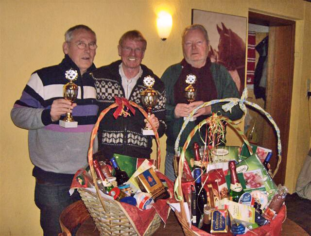
Am letzten Spieltag des Jahres war noch Mal für Spannung gesorgt. Klaus Reinegger schaffte mit einer tollen Serie noch den Sprung auf Platz eins. Vorsitzender Kurt Langer war auch mit dem Clubmeisterplatz zwei sehr zufrieden und gratulierte Klaus Reinegger zu Platz eins und einem tollen Jahr. 3. Clubmeister wurde Peter Seidel mit 14134 Pkt. Alle drei erhielten einen Clubmeisterpokal nebst Urkunde und einen gut gefüllten Präsentkorb.
Die Krönung des Abends war dann die Siegerehrung der Clubmeister, zumal neben der Entscheidung über die Clubmeisterschaft der Abend als Weihnachtspreisskat gestaltet wurde. Jedes Mitglied erhielt an diesem Abend einen Sachpreis. Auch in diesem Jahr durften sich die Mitglieder etwas wünschen. Die Mitglieder dankten dem Vorsitzenden für sein Engagement.
Der Vorsitzende Kurt Langer erspielte sich bereits den fünfzehnten Clubmeistertitel seit der Gründung 1992.
Peter Seidel seit Januar 1999 Mitglied im Verein wurde bereits zum siebten Mal Clubmeister. Klaus Reinegger seit April 2005 Mitglied wurde bereits das zweite Mal Clubmeister.
Besonders freute sich Klaus Reinegger, dass er 2010 nun auch zum ersten Mal Platz eins errang.
2010 wurde ein Wanderpokal eingeführt, den der Monatssieger vorübergehend erhielt. Festgelegt wurde, dass der Wanderpokal nach dreimalige Gewinn in Folge oder fünfmaligem Gewinn in dessen Eigentum übergeht.
Wanderpokal 1 nach 5-maligem Gewinn an Kurt Langer
Wanderpokal 2 nach 5-maligem Gewinn an Manfred Hallmann
Wanderpokal 3 nach 5-maligem Gewinn an Ingo Dietze
Wanderpokal 4 nach 5-maligem Gewinn an Ingo Dietze
Wanderpokal 5 nach 5-maligem Gewinn an Karl-Heinz Kohl
Wanderpokal 6 nach 5-maligem Gewinn an Kurt Langer
Wanderpokal 7 nach 3-maligem Gewinn in Folge an Peter Seidel
Wanderpokal 8 nach 3-maligem Gewinn in Folge an Kurt Langer
Wanderpokal 9 nach 3-maligem Gewinn in Folge an Helmut Weyers
Wanderpokal 10 nach 5-maligem Gewinn an Herbert Kreber
Wanderpokal 11 nach 5-maligem Gewinn an Kurt Langer
Wanderpokal 12 nach 3-maligem Gewinn in Folge an Michael Buscher
Seit 2010 spielt der 1.Sintherner Skatclub auch auf Verbandsebene mit und konnte bis heute viele Erfolge einfahren.
Pulheim, 17.11.2010 Pressemitteilung
Am 16. Spieltag des 1. Sintherner Skatclubs erspielt sich Hans Willi Stollenwerk mit zehn zu null Spielen und 1316 Pkt.
zum ersten mal den Wanderpokal des Clubs. Auf den Plätzen zwei und drei landeten Peter Seidel und Ulrich Albanus mit 1166 und 1165 Pkt.
Drei Spieltage vor Jahresschluss kann der Kampf um die drei Clubmeisterplätze nicht spannender sein. Der Vorsitzende
Kurt Langer führt die Jahresrangliste mit 14798 Pkt. aus den zwölf besten Serien weiter an. Dicht auf den Fersen ist
Klaus Reinegger mit 14475 Pkt. Um den dritten Platz kämpfen zur Zeit Ingo Dietze 13165 Pkt., Peter Seidel 13138 Pkt.,
Ulrich Albanus 13125 Pkt. und Mathias Klinkau 13080 Pkt.
Pulheim, 03.11.2010 Pressemitteilung
Im Oktober 2010 wurde der traditionelle Herbst-Preisskat gespielt.
1. Platz Ulrich Albanus 1263 Pkt.
2. Platz Kurt Langer 1220 Pkt.
3. Platz Klaus Reinegger 1182 Pkt.
Weitere Preisträger Ingo Dietze 1144 Pkt. und Mathias Klinkau 1037 Pkt.
Kopf an Kopf Rennen beim Herbst-Preisskat des 1.Sintherner Skatclubs. Ulrich Albanus reichten 1263 Pkt. zum Gewinn des Herbstpreisskat. Mit 12:0 Spielen und sieben umgedrehten Spielen an seinem Tisch hat er letztlich die Nase vorn und nimmt gleichzeitig zu seinem Geldpreis den Wanderpokal vom Vorsitzenden entgegen. Auf dem zweiten Platz landet der Vorsitzende Kurt Langer, der sich mit 11:0 Spielen und fünf umgedrehten Spielen der Gegner 1220 Pkt. erspielte. Egon Janssen aus Königsdorf schnupperte als Gastspieler rein worüber sich der Club freute.
In der Jahresrangliste liegen weiter vorn Kurt Langer 14727 Pkt., Klaus Reinegger 14475 Pkt., Ingo Dietze 13086 Pkt.
Pressebericht Pulheimer Wochenende vom 27.10.2010
Vorsitzender Kurt Langer erspielte sich zum 2. Mal hintereinander den aktuellen Wanderpokal des Clubs. Die Auslosung vor dem 14. Spieltag war reizvoll, da sich mit Klaus Reinegger und Kurt Langer Platz 1 und 2 gegenüber saß. Als Dritter kam Jürgen Odenthal an den Tisch. Kurt Langer verlor gleich sein erstes Spiel, bei dem Klaus Reinegger mit 5 Trümpfen als Gegner aufwartete. Danach lief es für den Vorsitzenden wie am Schnürchen. Am Ende standen mit 13:1 Spielen 1436 Pkt. zu Buche, die für Platz 1 reichten. Der bisherige Ranglistenführer kam in der Serie nur auf 5:3 Spiele und 373 Pkt. Die Plätze 2 und 3 belegten nach dem 14. Spieltag Joachim Jeske und Kurt Lappe mit 1413 und 1352 Pkt. In der Jahresrangliste übernahm Kurt Langer wieder die Führung. Klaus Reinegger rutschte auf Platz 2 und Ingo Dietze konnte seinen dritten Platz verteidigen.
Pulheim, 26.08.2010 Pressemitteilung
Kopf an Kopf Rennen beim 1.Sintherner Skatclub. Am 11. Spieltag setzt sich Jürgen Odenthal mit 1530 Pkt. als Tagessieger durch und nimmt zum ersten mal den neuen Wanderpokal vom Vorsitzenden entgegen. Mit 1434 Pkt. landete Peter Seidel auf Platz zwei. Platz drei erspielt sich Johann Porschen mit 1208 Pkt.
Spannung verspricht die Jahresrangliste, da nach dem 11. Spieltag Platz 1 bis 4, davon drei Clubmeisterplätze, Kopf an Kopf kämpfen. Vorsitzender Kurt Langer hat mit 11233 Pkt. knapp die Nase vorn. Auf den Plätzen zwei und drei folgen Klaus Reinegger und Peter Seidel mit 11194 und 11033 Pkt. Platz vier belegt Ingo Dietze mit 10862 Pkt. Lothar Schleucher rutscht vom dritten Platz auf Rang fünf.
Am 6. Clubmeister-Spieltag hat sich der Vorsitzende Kurt Langer mit 1251 Pkt. zum 3. Mal den Wanderpokal des Clubs gesichert. Auf den Plätzen 2 und 3 landeten Renate Gärtlein und Karl-Heinz Schmischke mit 1166 und 1135 Pkt.
Pressebericht Pulheimer Wochenende vom 21.07.2010
Im Juli 2010 wurde der traditionelle Sommer-Preisskat gespielt.
1. Platz Lothar Schleucher
2. Platz Peter Jäkel
3. Platz Joachim Jeske
Nachdem Lothar Schleucher den Wanderpokal des 1.Sintherner Skatclubs bereits zum fünften Mal entgegen nahm, geht dieser nun in sein Eigentum über. Platz zwei und drei belegten beim Sommerpreisskat Peter Jäkel und Joachim Jeske.
Die Jahresrangliste führt nach wie vor der Vorsitzende Kurt Langer an. Dicht auf den Fersen folgt Klaus Reinegger mit 100 Pkt. Abstand nach dem 10. Spieltag. Lothar Schleucher klettert vom sechsten auf den dritten Platz.
Pressebericht Pulheimer Wochenende vom 16.06.2010
Manfrd Bachmann erkämpft sich mit 1696 Pkt. zum 4. Mal den Wanderpokal des Clubs und schließt damit zu Lothar Schleucher auf. Auf Platz 2 und 3 landeten Mathias Klinkau und Renate Gärtlein. Manfred Bachmann verdrängte Peter Seidel von Platz 1 der Jahresrangliste. Vorsitzender Kurt Langer verbesserte sich auf Platz 2 und Peter Seidel rutschte auf Patz 3.
Pressebericht Pulheimer Wochenende vom 09.06.2010
Vorsitzender Kurt Langer übernimmt am achten Spieltag des 1.Sintherner Skatclub´s die Führung in der Jahresrangliste.
Jochen Jeske erspielt sich mit 1520 Pkt. zum ersten mal den aktuellen Wanderpokal. Platz zwei belegte mit 1458 Pkt. Kurt Langer. Auf dem dritten Platz landete Jürgen Odenthal mit 1407 Pkt.
Manfred Bachmann erspielte mit 304 Punkten ein Abschreibergebnis und rutschte von Platz eins der Jahresrangliste auf Platz zwei. Klaus Reinegger verdrängte Peter Seidel von Platz drei.
Pressebericht Kölner-Stadt-Anzeiger vom 09.05.2010
Zum dritten Mal hat sich der Vorsitzende Kurt Langer mit 1251 Pkt. den aktuellen Wanderpokal des Clubs gesichert. Am 6. Spieltag landeten Renate Gärtlein und Karl-Heinz Schmischke mit 1166 und 1135 Pkt. auf die Plätze 2 und 3. Die Jahresrangliste führt weiterhin Peter Seidel mit 6396 Pkt. an.
Pressebericht Kölner Stadt-Anzeiger vom 03.04.2010
Keine Chance gegen zwei Buben! Redakteur Simon Müller des Kölner Stadt-Anzeiger zu Besuch beim 1. Sintherner Skatclub. Kurt Langer berichtet, er guckt in seine Karten, kneift die Augen zusammen und schüttelt den Kopf. Es läuft nicht gut für ihn. Selbst ein guter erfahrener Spieler kann nichts machen, wenn der Kartensitz bei den Spielgegnern extrem sitzt. Das hat Langer vor Spielbeginn erzählt. Skat sei nun Mal 70 % Kartenglück. Er musste taktisch spielen sagt Langer nun. Dann seufzt er "wenn ich jetzt eine Minusserie mache ist die Klubmeisterschaft gelaufen, da eine Minusserie nicht gestrichen werden kann bei den in die Wertung kommenden Serien. Vor Beginn hatte Kurt Langer vor allem vom Spaß beim Skat spielen gesprochen. Darum gehe es bei seinem Verein, dem 1. Sintherner Skatclub, den er 1992 mit 16 Skatfreunden gegründet hatte. Um Spaß und darum sein Hobby mit anderen zu teilen. Ein Hobby, dass sie hier durchaus mit Ehrgeiz betreiben. Kurt Langer ist ein Skatspieler der seine Erfolge bei der Vereinsmeisterschaft ohne zögern runter rattern kann. Sieben Mal erster, fünf Mal Zweiter und zwei Mal Dritter in den vergangenen achtzehn Clubmeisterschaften. "Sport ist mein Leben" sagt Langer. der 64 Jahre alt ist verheiratet und drei Söhne. Außer Skat sind Fußball und Tischtennis seine sportlichen Hobbys. Wer einmal Skat gespielt hat weiß, das es geistiger Sport ist, sagt Langer. Die ersten Stiche sind entscheidend. Der Reiz des Skat spielens liegt in dessen Variantenreichtum sagt Kurt Langer. Man müsse sich immer wieder auf andere Kartenkonstellationen einstellen und sich merken, was die anderen vorher gespielt haben, darauf eingehen, die bereits gespielten Trümpfe und erreichte Punkte zählen. Insgesamt hat der 1. Sintherner Skatclub inzwischen 25 Mitglieder, darunter zwei Frauen.
Pulheim, 12. März 2010 Pressemitteilung
Manfred Bachmann gewinnt zum dritten mal den Wanderpokal des 1. Sintherner Skatclub.
Am dritten Spieltag hat Manfred Bachmann mit 1417 Pkt. die Nase vorn. Platz zwei und drei belegten Karl-Heinz Schmischke und Jochen Jeske mit 1308 und 1276 Pkt.
Pulheim, 10.Febr. 2010 Pressemitteilung
Kopf an Kopf Rennen um den Wanderpokal des 1. Sintherner Skatclubs.
Spannender konnte es am zweiten Spieltag beim Sintherner Skatclub nicht zugehen. Gleich vier Spieler erkämpften sich über 1400 Pkt. Ingo Dietze hatte am Ende mal wieder knapp die Nase vorn. Mit 1498 Pkt. und 14:0 Spiele sicherte er sich zum dritten mal den aktuellen Wanderpokal. Die Plätze zwei bis vier belegten Kurt Langer, Klaus Reinegger und Peter Seidel mit 1455, 1444 und 1425 Pkt.
Pulheim, 02. Februar 2010 Pressemitteilung
Am ersten Spieltag des 1. Sintherner Skatclub erspielt sich Siegfried Cyranka mit 1712 Pkt. den aktuellen Wanderpokal des Clubs. Er freute sich besonders, dass er nach zehnjähriger Mitgliedschaft einmal ganz oben steht. Die Plätze zwei und drei belegen Ulrich Albanus und Karl-Heinz Schmischke mit 1459 und 1415 Pkt.
2009
Pulheim 20.12.2009 Pressemitteilung
Gewinner der Clubmeisterschaft 2009.
Clubsieger Kurt Langer 13300 Pkt.
2. Clubmeisterplatz Lothar Schleucher 12511 Pkt.
3. Clubmeisterplatz Ingo Dietze 12467 Pkt.
Alle drei erhielten bei der Siegerehrung eine Urkunde, einen Pokal und einen gut gefüllten Frühstückskorb.
Für den Vorsitzenden Kurt Langer war das Jahr 2009 besonders erfolgreich, da er auch beim Kölner Bundeswehrskatclub v. 1979 Clubmeister wurde und beim Skatclub „Reizende Uffze“ den zweiten Platz bei der Jahresmeisterschaft belegte.
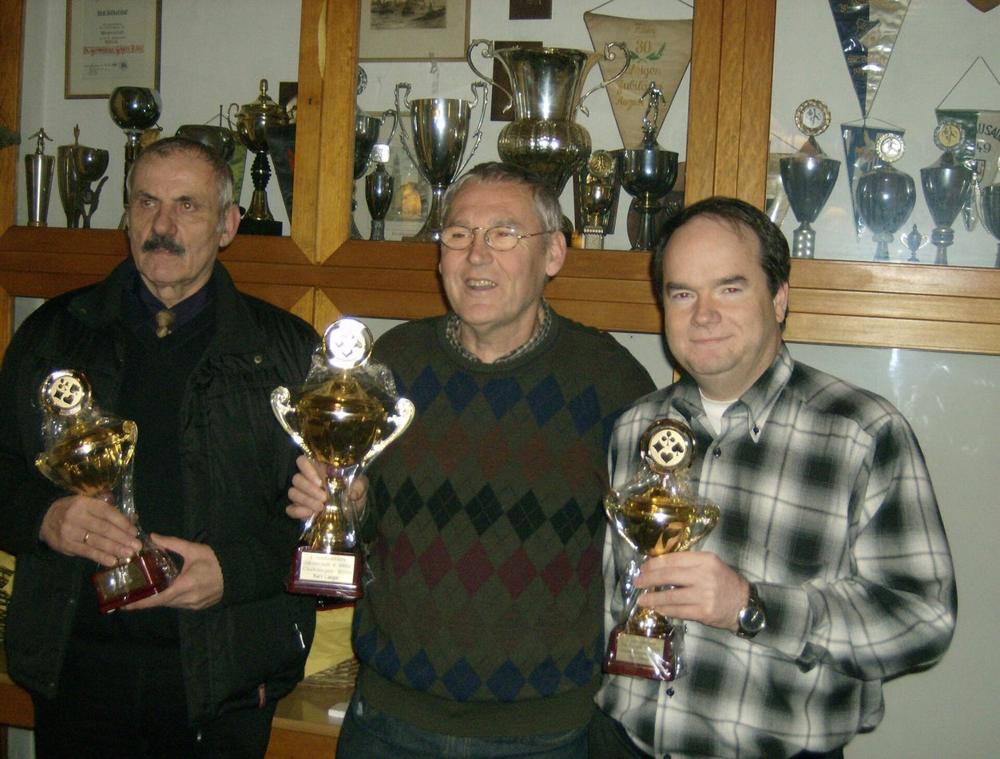
Freitag, 04. Dezember 2009 Pressemitteilung
Am vorletzten Spieltag 2009 baut Kurt Langer seine Führung in der Jahresrangliste gewaltig aus. In der 48-er Serie am Vierertisch erzielt er mit 17:2 Spielen 1752 Pkt. und lässt damit seine Konkurrenz weit hinter sich. Mit 1288 und 1260 Pkt. belegen Ingo Dietze und Renate Gärtlein Platz zwei und drei.
In der Jahresrangliste belegen die Plätze eins bis drei (Clubmeisterplätze) Kurt Langer 13300 Pkt.,
Lothar Schleucher 12238 Pkt., Ingo Dietze 11914 Pkt.
Pressebericht Pulheimer Wochenende vom 02.12.2009
Wanderpokal für Ingo Dietze! Den Wanderpokal des Clubs hat sich Ingo Dietze am zwölften Spieltag des 1.Sintherner Skatclubs mit 1710 Pkt. als Monatssieger gesichert. Auf Platz 2 landete Mathias Klinkau mit 1383 Pkt. und Platz 3 errang Peter Seidel mit 1323 Pkt. Dem Vorsitzenden Kurt Langer reichten für Platz eins der Jahresrangliste 1287 Pkt.
Die Clubmeisterplätze belegen 2 Spieltage vor Schluss aufgrund der zehn besten Wertungen Kurt Langer 12428 Pkt. Lothar Schleucher 12035 Pkt., Manfred Bachmann 11427 Pkt.
Pressemitteilung Pulheim, 22. Oktober 2009
Wanderpokal nach spannendem Zweikampf an den Vorsizenden des 1. Sintherner Skatclub´s Kurt Langer.
Am 11. Spieltag nahmen 22 Skatfreunde teil. Es entwickelte sich ein spannender Zweikampf zwischen dem Vorsitzenden und Karl-Heinz Kohl, die an einem Tisch reizten. Die Führung wechselte während der Serie mehrmals. Am Ende hatte der Vorsitzende Kurt Langer mit 14:1 Spielen und 1535 Pkt. knapp die Nase vorn. Karl-Heinz Kohl erreichte mit 15:2 Spielen 1517 Pkt. und belegte damit den klaren zweiten Platz. Dritter wurde mit 1.284 Punkten Joachim Jeske.
Die Clubmeisterplätze belegen Lothar Schleucher 12035 Pkt., Kurt Langer 11675 Pkt., Manfred Bachmann 11427 Pkt.
Pressemitteilung 16.10.2009
Im Oktober wurde Herbst-Preisskat 2009 gespielt.
1 Platz Dieter Faßbender 1349 Pkt.
2 Platz Ingo Dietze 1306 Pkt.
3 Platz Jürgen Odenthal 1249 Pkt.
Dieter Faßbender, erst seit einem Monat Mitglied des Sintherner Skatclub´s, gewinnt mit 1349 Pkt. den Herbstpreisskat. Seinen Preis und einen Pokal nahm der in Pulheim lebende Dieter Faßbender vom Vorsitzenden strahlend entgegen.
Ingo Dietze verfehlte mit 1306 Pkt. nur knapp den 1. Platz. Den 3. Platz errang Jürgen Odenthal mit 1249 Pkt.
Günter Witzel aus Sinthern wurde ebenfalls neu in den Club aufgenommen.
Aktuelle Mitgliederzahl: 27 Aktive, 1 inaktives Mitglied.
Pressebericht Rundschau vom 03.10.2009
Mitmischen bei Skatmeisterschaften! Kurt Langer sprach mit der Redakteurin der Kölner Rundschau Frau Ulrike Meinert. Ich habe große Pläne für den 1. Sintherner Skatclub. Da er bereits mit 10 Jahren mit den Eltern und den Wohnungsvermietern Skat spielen lernte, wusste er schnell wie man seine Trümpfe ausspielt. So gründete Kurt Langer mit 16 Skatfreunden, die in Sinthern am Vortag ihres Schützenfestes ein Skatturnier ausrichteten den 1. Sintherner Skatclub, wurde zum 1. Vorsitzenden gewählt und hat das Amt bis heute inne. Kurt Langer meinte Skat spielen müsste als Sport anerkannt werden. Große Erfolge feierte Kurt Langer im Skatsport. Bei bisher 17 Clubmeisterschaften schaffte er es 13 Mal auf einen der drei Clubmeisterplätze zu kommen, die mit einem Pokal, einer Urkunde und einem gut gefülltem Präsentkorb gekrönt wurden. Nun hat Kurt Langer ehrgeizige Pläne mit dem 1. Sintherner Skatclub. Für das kommende Jahr ist angestrebt, dass 10 Mitglieder bei den Deutschen Skat-Einzel-und Mannschaftsmeisterschaften antreten. Der Antrag auf Mitgliedschaft im Deutschen Skatverband (DSKV) ist gestellt. Die bevorstehenden Spiele in der Landesliga sind als Hineinschnuppern in den großen Turnierbetrieb gedacht. 70 bis 80 % braucht ein Skatspieler Glück bei der Kartenverteilung weiß Langer, der sich bisher 2 Mal bis in die Endrunde zur Deutschen Meisterschaft qualifiziert und teilgenommen hat. Der Rest sei Können, Spielvermögen und Erfahrung. Grundsatz "Wer nichts riskiert, wird selten obere Plätze belegen".
Kurt Langer berichtete Frau Meinert, die sehr an meinem sportlichen Lebenslauf interessiert war "Für mich ist Sport mein großes Hobby und somit ein wichtiger Teil meines Lebens". Seiner Freude am Sport hat der 64-jährige Sinthernerer es zu verdanken, dass er trotz einer schweren Erkrankung mit 48 Jahren heute noch als Fußball-Schiedsrichter auf dem Platz ist und seit 1986 auch Spiele in der Bezirksliga leitet. Nicht die Krankheitsfolgen, aber die sportlichen Betätigungen von der Jugend an sind dem früh pensionierten Bundesbeamten anzusehen. In Geyen aufgewachsen spielte er ab seinem 8. Lebensjahr bei der SC Germania Fußball. Als ein Jugendleiter gesucht wurde, war Kurt Langer zur Stelle. Bis zum 40. Lebensjahr kickte er noch selbst den Ball Richtung Tor. Dann absolvierte er eine Schiedsrichterausbildung im Rahmen des Jugendleiterkursus. Den Tischtennisclub Blau-Rot Geyen hat Kurt Langer 1971 mit gegründet und er übernahm im April 2009 den Vorsitz. Als Spielführer der 3. Mannschaft spielte er selbst mit großer Leidenschaft aktiv mit. Kurt Langer meinte noch "Sport ist die natürlichste Therapie bei einer langjährigen Erkrankung".
Pulheim 03.09.2009
Den 8. Spieltag des 1. Sintherner Skatclubs konnte mit 1529 Pkt Lothar Schleucher für sich entscheiden. Als Monatssieger August nahm er zum 2. Mal den aktuellen Wanderpokal entgegen. Auf den Plätzen zwei und drei landeten Ulrich Albanus und Johann Porschen mit 1390 und 1165 Pkt.
In der Jahresrangliste kann es spannender nicht sein, da nun die drei Erstplatzierten noch näher zusammenrückten.
Lothar Schleucher 9185 Pkt., 2: Kurt Langer 9180 Pkt., Manfred Bachmann 8958 Pkt.
2008
Gewinner der Clubmeisterschaft 2008.
Clubsieger Peter Seidel 13975 Pkt.
2. Clubmeister Klaus Reinegger 12921 Pkt.
3. ClubmeisterKarl-Heinz Kohl 12420 Pkt.
Alle drei erhielten bei der Siegerehrung eine Urkunde, einen Pokal und einen gut gefüllten Frühstückskorb.
2008 wurde mit dem besten Ergebnis seit der Clubgründung Peter Seidel mit 13975 Pkt. Clubsieger. Er stellte damit das bisherige Rekordergebnis von Kurt Langer 13866 Pkt. knapp ein.
Herzlichen Glückwunsch dem Clubsieger und den Clubmeistern 2008.
Die Top- ten belegten:
4. Helmut Neumann 12283 Pkt.
5. Ingo Dietze 11787 Pkt.
6. Kurt Langer 11637 Pkt.
7. Wolfgang Klinkau 11175 Pkt.
8. Manfred Hallmann 11168 Pkt.
9. Ulrich Albanus 10769 Pkt.
10. Jochen Jeske 10513 Pkt.
Den 1.000-er Schnitt schafften Manfred Bachmann und Jürgen Odenthal
Pressebericht Pulheimer Wochenende vom 03.09.2008
Vorsitzender Kurt Langer erkämpft sich am 8. Spieltag zum 2.Mal den aktuellen Wanderpokal des Clubs.
Die Jahresrangliste führt Peter Seidel an.
Pressebericht Pulheimer Sonntagspost vom 12.07.2008
Erstmals nach 27 Jahren gelanfg es Peter Seidel den Titel des Pulheimer Skat-Stadtmeisters zu verteidigen. Mit 2599 Pkt. setzte er sich im Rahmen des Pulheimer Stadtfestes beim Skatturnier erneut an die Spitze des Teilnehmerfeldes beim sehr gut besuchten Preisskatturnier im Pulheimer Rathaus. Auf Platz 2 landete Kurt Langer. Manfred Bachmann schaffte es als Dritter aufs Treppchen. Bürgermeister Dr. Karl August Morisse nahm die Siegerehrung vor. Er überreichte den Siegerpokal an Peter Seidel.
2007
Gewinner der Clubmeisterschaft 2007.
Clubsieger Kurt Langer 13866 Pkt.
2 Clubmeister Peter Seidel 12160 Pkt.
3. Clubmeister Johann Porschen 12050 Pkt.
Alle drei erhielten bei der Siegerehrung eine Urkunde, einen Pokal und einen gut gefüllten Präsentkorb.
Kurt Langer wurde mit dem besten Ergebnis seit der Clubgründung mit 13866 Pkt. Clubsieger 2007.
Herzlichen Glückwunsch dem Clubsieger und den Clubmeistern 2007.
Die Top- ten belegten: 4. Jürgen Odenthal 11542 Pkt.
5. Karl-Heinz Kohl 11220 Pkt. 6. Helmut Neumann 11006 Pkt.
7. Lothar Schleucher 10.970 Pkt.
8. Manfred Bachmann 10751 Pkt.
9. Klaus Reinegger 10601 Pkt.
10. Ingo Dietze 10589 Pkt.
Den 1.000 er Schnitt schaffte Manfred Gerten mit 10144 Pkt.
Rückblick auf das Jahr 2007
Den aktuellen Wanderpokal hat bisher erhalten: 2x Manfred Hallmann und Karl-Heinz Kohl, 1x Karl-Heinz Schmischke,, Manfred Gerten, Johann Porschen, Lothar Schleucher, Peter Jäkel, Peter Seidel, Helmut Neumann, Klaus Reinegger, Alfons Milenz, Kurt Langer, Jürgen Odenthal und Manfred Marga.
In die Granatenliste des Clubs konnten sich 2007 Kurt Langer mit 2096 Pkt. und Johann Porschen mit 1871 Pkt. verewigen.
Die aktuelle Granatenliste z. Zt.:
1. Christian Köllgen 2118 Pkt. 2. Kurt Langer 2096 Pkt. 3. Helmut Neumann 2040 Pkt. 4. Karl-Heinz Kohl 2000 Pkt. 5. Holger Horatz 1965 Pkt. 6. Hans-Peter Köllgen 1961 Pkt. 7. Manfred Hallmann 1948 Pkt. 8. Kurt Langer 1910 Pkt. 9. Kurt Langer 1877 Pkt. 10 Johann Porschen 1871 Pkt.
Ein Grand ouvert wurde in 2007 nicht gespielt.
Im Jahre 2007 wurden mit Ulrich Albanus, Lothar Schleucher und Hans-Willi Stollenwerk drei neue Mitglieder in den Club aufgenommen.
Jedes Mitglied ist aufgerufen, weitere Mitglieder für den Club zu werben, da der 1. Sintherner Skatclub von 1992 allen interessierten Skatfreunden das Skatspielen nach der Satzung des Clubs ermöglicht.
Allen Clubmitgliedern wünsche ich für 2008 beste Gesundheit und allzeit gut Blatt.
Euer Skatfreund Kurt
Pressebericht Pulheimer Wochenende vom 15.12.2007
Rekordpunktzahl für Kurt Langer. Der Vorsitzende Kurt langer steht nach dem vorlertzten Spieltag bereits als Clubsieger 2007 fest. In den zehn Serien, die für die Clubmeisterschaft gewertet werden, erspielte sich Kurt Langer 13866 Pkt. Seit der Clubgründung wurde noch nie eine so hohe Punktzahl erreicht. Der Jahresabschluss war für Kurt Langer wieder Mal ein Freudentag. Bereits 13 Mal landete Kurt Langer inzwischen am Jahresende auf einem der drei Clubmeisterplätze. Den Clubmeisterplatz zwei sicherte sich am letzten Wertungstag Peter Seidel mit 12160 Pkt. und den 3. Clubmeisterplatz ergatterte Johan Porschen mit 12050 Pkt . Der letzte Spieltag von Kurt Langer kam nicht mehr in die Wertung. Am 13. Spieltag erspielte sich Karl-Heinz Kohl den aktuellen Wanderpokal des Clubs. Helmut Neumann und Karl-Heinz Kohl wurden für 10-jährige Clubmitgliedschaft geehrt.
Pressebericht Pulheimer Sonntagspost vom 20.10.2007
Im Oktober wurde der traditionelle Herbst-Preisskat 2007 gespielt.
1. Platz Kurt Langer
2. Platz Peter Jäkel
3. Platz Klaus Reinegger
Kurt Langer gewinnt den traditionellen Herbst-Preisskat und nimmt neben dem Preisgeld den aktuellen Wanderpokal entgegen. Platz 2 errang Peter Jäkel gefolgt von Klaus Reinegger. Die Jahresrangliste führt Kurt Langer vor Peter Seidel und Johann Porschen an.
Pressebericht Pulheimer Wochenende vom 18.04.2007
Im März wurde der traditionelle Frühjahrs-Preisskat 2007 gespielt.
1. Platz Johann Porschen
2. Platz Klaus Reinegger
3. Platz Kurt Langer
Johann Porschen ganz vorne! Beim traditionellen Frühjahrs-Prreisskat kämpften 26 Teilnehmer um die Preise. Die Plätze 1-3 eroberten Johann Porschen, Klaus Reinegger und Kurt Langer. Johann Porschen reihte sich zusätzlich in die Granatenliste des Clubs ein und erhielt zum 1. Mal den aktuellen Wanderpokal. Johann Porschen führt nach diesem Spieltag die Jahresrangliste vor Reiner Seher und Helmut Neumann an.
2006
Gewinner der Clubmeisterschaft 2006.
Clubsieger Ingo Dietze 12774 Pkt.
2. Clubmeister Manfred Hallmann 12399 Pkt.
3. Clubmeister Kurt Langer 12122 Pkt.
Alle drei erhielten bei der Siegerehrung eine Urkunde, einen Pokal und einen gut gefüllten Frühstückskorb.
Für 10-jährige Clubmitgliedschaft wurden Hermann Probst und Manfred Marga geehrt.
2005
Gewinner der Clubmeisterschaft 2005.
Clubsieger Kurt Langer 13534 Pkt.
2. Clubmeister Michael Buscher 12097 Pkt.
3. Clubmeister Peter Seidel 11939 Pkt.
Alle drei erhielten bei der Siegerehrung eine Urkunde, einen Pokal und einen gut gefüllten Frühstückskorb.
Pressebericht Pulheimer Sonntagspost
Neuer Clubmeister 2005 mit einem Rekordergebnis!
Mit einem Rekord endete das Jahr 2005 für die Skatfreunde des 1. Sintherner Skatclubs. Kurt Langer gelang es, die Clubmeisterschaft 2005 mit einem Rekordergebnis mit 13534 Punkten zu gewinnen. Es ist das 1. Mal seit der Gründung unseres Vereins von 1992, dass eine so hohe Punktzahl erreicht wurde sagte Vorsitzender Kurt Langer. Die Punktzahl errechnet sich aus den Ergebnissen von 14 Spieltagen, die über das Jahr verteilt sind. Dabei werden nur die 10 besten Spieltage für die Clubmeisterschaft gewertet. Mit seinem Sieg gewann Kurt Langer zum 11. Mal einen der drei Clubmeisterplätze. Kurt Langer gestand, dass er ein leidenschaftlicher Skatspieler sei. Da wo ich bin ist immer ein Deck Karten in der Nähe. Neben seiner Tätigkeit im Sintherner Skatclub ist er auch externer Spielleiter des Skatclubs "Ford Asse Köln". Unsere Mannschaft spielt zur Zeit in der Oberliga.
Den 2. Clubmeisterplatz des 1. Sintherner Skatlubs belegte Michael Buscher mit 12097 Pkt. gefolgt von Peter Seidel mit 11939 Pkt.
Sieger des Weihnachts-Preisskat wurde Karl-Heinz Kohl, womit er den aktuellen Wanderpokal gewann.
Pressebericht Pulheimer Wochenende vom 21.12.2005
Am 13. Spieltag erkämpft sich Ingo Dietze zum ersten Mal den aktuellen Wanderpokal. Auf den Plätzen 2 und 3 landeten Johann Porschen und Karl-Heinz Kohl. Die Jahresrangliste führt Kurt Langer an, gefolgt von Michael Buscher und Peter Seidel.
Pressebericht Pulheimer Wochenende vom 12.10.2005
Im Oktober wurde der traditionelle Herbst-Preisskat 2005 gespielt.
Kurt Langer Vorsitzender des 1. Sintherner Skatclubs hat den traditionellen Herbst-Preisskat mit 1834 Pkt. gewonnen und verwies Michael Buscher mit 1739 Pkt. auf Platz zwei.
Pressebericht Pulheimer Wochenende vom 24.08.2005
Helmut Neumann schafft eine Granatenliste. Am achten Spieltag erspielte Helmut Neumann 2040 Pkt. und setzte sich damit in der Granatenliste des Clubs, die seit der Gründung des Clubs 1992 geführt wird auf Platz 2. Außerdem sicherte er sich mit diesem außergewöhnlichen Ergebnis zum zweiten Mal den Wanderpokal. In der Jahresrangliste verbesserte er sich auf den 2. Platz hinter Kurt Langer.
Pressebericht Pulheimer Wochenende vom 13.07.2005
Gewinner des traditionellen Sommer-Preiskats wurde Manfred Bachmann mit 1406 Pkt. und Wanderpokal für Manfred Bachmann!
Die Jahresrangliste führen Kurt Langer, Peter Seidel und Ingo Dietze nach diesem Spieltag an,
Pressebericht Pulheimer Sonntagspost vom 11.06.2005
Kurt Langer bleibt an der Spitze! Nach dem 1. Spieltag im Juni 2005 bleibt Kurt Langer mit 6509 Pkt. an der Spitze der Jahresrangliste 2005. Auf Platz zwei und drei folgen Michael Buscher und Johann Porschen.
Pressebericht Pulheimer Wochenende vom 18.05.2005
Im April wurde der traditionelle FrühjahrsPreisskat 2005 gespielt.
Platz 1 Manfred Hallmann
Platz 2 Peter Meiß
Platz 3 Kurt Langer
Wanderpokal für Manfred Hallmann. Manfred Hallmann hat den traditionellen Frühjahrs-Preisskat gewonnen und den Wanderpokal vom Vorsitzenden zum zweiten Mal in Empfang genommen. Auf den Plätzen zwei und drei folgten Peter Meiß und Kurt Langer. Die Jahresrangliste wird zur Zeit von Kurt Langer angeführt, gefolgt von Peter Seidel und Johann Porschen.
Pressebericht Pulheimer Wochenende vom 09.März 2005
Die ersten Spieltage des 1. Sintherner Skatclubs wurden von Peter Seidel und Helmut Neumann dominiert. Mit 1539 Pkt. setzte sich Peter Seidel zunächst gegen Ingo Dietze und Kurt Langer durch, ehe Helmut Neumann im Kampf um den Wanderpokal vor Kurt Langer und Peter Seidel die Nase vorn hatte.
Pressebeicht Pulheimer Sonntaggspost vom 29.01.2005
Seit 13 Jahren wird in Sinthern gerne und viel "gekloppt" Darunter zu leiden haben aber lediglich die Tischplatten, an denen sich die Mitglieder des 1. Sintherner Skatclubs regelmäßig treffen, um ihrer Leideschaft zu frönen. Alljährlich ermitteln die Skatfreunde dabei auch ihre Clubmeister, die in den vergangenen Tagen mit den Pokalen bedacht wurden. Clubsieger 2004 wurde Peter Seidel mit beachtlichen 12494 Punkten. Mit 12080 Pkt. erspielte sich der Vorsitzende Kurt Langer den 2. Clubmeisterplatz. Ingo Dietze landete mit 11984 Pkt auf dem 3. Clubmeisterplatz und konnte sich doppelt freuen. da er zum fünften Mal den aktuellen Wanderpokal des Clubs erhielt, der nun in sein Eigentum überging. Für 10-jährige Mitgliedschaft wurde Siegfried Cyranka geehrt.
2004
Gewinner der Clubmeisterschaft 2004.
Clubsieger Peter Seidel 12494 Pkt.
2. Clubmeister Kurt Langer 12080 Pkt.
3. Clubmeister Ingo Dietze 11984 Pkt.
Alle drei erhielten bei der Siegerehrung eine Urkunde, einen Pokal und einen gut gefüllten Frühstückskorb.
Pressebericht Pulheimer Wochenende vom 01.12.2004
Wanderpokal für Kurt Langer. Am vorletzten Spieltag erkämpfte sich Kurt Langer den aktuellen Wanderpokal. Auf Platz 2 und 3 folgten Manfred Hallmann und Peter Jäkel. In der Jahresrangliste liegt Peter Seidel vorn, vor Ingo Dietze uund Kurt Langer. Am letzten Spieltag wird es spannend, da sich die Plätze 4-7 noch Hoffnung auf einen Clubmeisterplatz machen können.
Pressebericht Pulheimer Sonntagspost vom 21.08.2004
Der Vorstand des 1. Sintherner Skatclubs muß einen neuen Wanderpokal anschaffen; den bereits vierten der Geschichte des Clubs. Nach Kurt Langer und Manfred Hallmann hat sich nun Ingo Dietze den dritten Wanderpokal für immer gesichert. Sein Sieg am neunten Spieltag des Jahres 2004 reichte zum insgesamt fünften Gewinn des aktuellen Waanderpokals und damit für den Verbleib in seiner Sammlung.
Pressebericht Pulheimer Sonntagspost vom 07.08.2004
An der 23. Pulheimer Skat Stadtmeisterschaft nahmen 30 Skatfreunde teil. Mit 2492 Pkt. wurde Ulrich Albanus neuer Pulheimer Skat Stadtmeister. Neben einem Geldpreis erhielt er den vom Bürgermeister Karl August Morisse gestifteten Pokal. Vize Stadtmeister wurde Kurt Langer mit 2125 Pkt. Auf Platz 3 folgte Patrick Levy mit 2099 Pkt. WeiterePreisträger waren Willi Eich, Renate Gärtlein als beste Dame mit 1736 Pkt. und Wilhelm Dütemeyer.
Pressebericht Pulheimer Sonntagspost vom 17.07.2004
Kurt Langer gewinnt den tratitionellen Oster-Preisskat des 1. Sintherner Skatclubs.
Auf den Plätzen 2 und 3 folgten Peter Seidel und Helmut Neumann.
Pressebericht Pulheimer Wochenende vom 27.06.2004
Am 6. Spieltag sicherte sich Ingo Dietze mit 1567 Pkt. zum 4. Mal den aktuellen Wanderpokal des Clubs. Auf den Plätzen 2 und 3 folgten Renate Gärtlein und Kurt Langer.
Pressebericht Pulheimer Wochenende vom 07.02.2004
Vorsitzender des 1. Sintherner Skatclubs wird zum achten Mal Clubmeister. Nach der Siegerehrung fanden Neuwahlen des Vorstandes statt. kurt Langer wurde als Vorsitzender bestätigt. Josef Porschen wurde zum Stellvertreter gewählt.
Zu Kassen-und Listenprüfern wurden Karl-Heinz Kohl und Peter Meiss gewählt.
2003
Gewinner der Clubmeisterschaft 2003.
Clubsieger Kurt Langer 12154 Pkt.
2.Clubmeister Peter Seidel 12113 Pkt.
3. Clubmeister Helmut Neumann 11701 Pkt.
Alle drei erhielten bei der Siegerehrung eine Urkunde, einen Pokal und einen gut gefüllten Frühstückskorb.
Pressebericht Pulheimer Sonntagspost vom Dezember 2003
Gewinner des letzten Preisskat im Jahr 2003 wurde mit 1204 Pkt. Jürgen Odenthal, der somit zum 2. Mal den aktuellen Wanderpokal entgegen nehmen konnte. Auf den Plätzen folgten Peter Jäkel mit 1203 Pkt., Christian Jäkel mit 1146 Pkt., Kurt Langer 1144 Pkt. und Karl-Heinz Köllgen mit 1133 Pkt.
Pressebericht Pulheimer Sonntagspost vom 29.11.2003
Helmut Neumann gewinnt den Wanderpokal. Am 12. Spieltag erkämpft sich Helmut Neumann mit 1569 Pkt. bereits zum 2. Mal in dieser Saison den aktuellen Wanderpokal. Auf den Plätzen zwei und drei folgten Cilla Anhut mit 1410 Pkt. und Kurt Langer mit 1374 Pkt. In der Jahresrangliste führen 2 Spieltage vor Jahressschluß Kurt Langer mit 12082 Pkt. vor Peter Seidel mit 11551 Pkt. und Manfred Hallmann mit 11313 Pkt.
Pressebericht Pulheimer Wochenende vom 12.11.2003
Kurt Langer hatte am 11. Spieltag der Clubmeisterschaft die Nase vorn und sicherte sich den Wanderpokal vor Manfred Hallmann und Alfons Milenz. Drei Spieltage vor Schluß führt Kurt Langer die Rangliste mit 11753 Pkt. an. Platz 2 belegt Manfred Hallmann mit 10964 Pkt. Auf Platz 3 folgt Peter Seidel mit 10951 Pkt.
Pressebericht Pulheimer Sonntagspost vom 25.10.2003
Kurt Langer sicherte sich am 11. Spieltag des 1. Sintherner Skatclubs mit 1565 Pkt. vor Manfred Hallmann 1505 Pkt. und Alfons Milenz 1221 Pkt. Platz 1. und damit den aktuellen Wanderpokal. Damit liegt Kurt Langer drei Spieltage vor Jahresende in der Clubmeisterschaft mit 11753 Pkt. in Front. Auf Platz 2 folgt Manfred Hallmann mit 10964 Pkt. Auf Platz drei folgt Peter Seidel mit 10951 Pkt.
Pressebericht Sonntagstagspost vom 04.10.2003
Im Oktober wurde der traditionelle Herbst-Preisskat 2003 gespielt.
Platz 1 Jochen Sorgatz
Platz 2 Petr Meiß
Platz 3 Jürgen Odenthal
Jochen Sorgatz erspielt mit 1487 Pkt. beim tratitionellen Herbst-Preisskat Platz 1 und erhält dafür zum 2. Mal den Wanderpokal des Clubs und einen gut gefüllten Präsentkorb. Weitere Preisträger waren Peter Meiß, Jürgen Odenthal, Johann Porschen, Heinz Dieter Dauendorffer, Kurt Langer, Helmut Neumann, Manfred Hallmann, Birthe Haamann und Manfred Bachmann.
Die Jahresrangliste führen jetzt nach 10 Spieltagen an: Peter Seidel mit 10789 Pkt., gefolgt von Kurt Langer mit 10708 Pkt. und Cilla Anhut mit 10072 Pkt.
Pressebericht Pulheimer Sonntagspost vom 13.09.2003
Am 9. Skatabend des 1. Sintherner Skatclubs erspielte Ingo Dietze 1772 Pkt. Er behielt so die Oberhand vor dem Gesamtführendem Peter Seidel und Manfred Gerten. Platz 4 belegt die 86-jährige Cilla Anhut.
Am 5. Spieltag des 1. Sintherner Skatclubs setzte sich das jüngste Mitglied Christian Jäkel mit 1664 Pkt. gegen die Konkurrenz durch und nahm zum 1, Mal den Wanderpokal vom Vorsitzenden entgegen. Auf den Plätzen zwei und drei folgten Peter Seidel mit 1427 Pkt. und Johann Porschen mit 1367 Pkt. Am 6. Spieltag dominierte die 86-jährige Cilla Anhut, die 1416 Pkt. erspielte, während Jochen Sorgatz 1308 Pkt. erreichte. Peter Seidel belegte mit 1287 Pkt. den dritten Platz. Die Jahrerangliste führt Heinz Dieter Dauendorffer mit 6329 Pkt. an, gefolgt von Manfred Hallmann mit 6207 Pkt. und Erich Jacobs mit 6142 Pkt.
Im April wurde der traditionelle Oster-Preisskat 2003 gespielt.
Platz 1 Kurt Langer 2731 Pkt.
Platz 2 Heinz Füsser 2621 Pkt.
Platz 3 Cilla Anhut 2594 Pkt.
Pressebericht Pulheimer Sonntagspost vom 26.04.2003.
Gewinner des traditionellen Oster-Preisskats wurde Kurt Langer mit 2731 Pkt. vor Heinz Füßer vom 1. Stommelner Skatclubmit 2621 Pkt.. Den 3. Platz belegte die 86-jährige Cilla Anhut mit 2594 Pkt. Weitere Preisträger wurden Klaus Nowroth aus Bocklemünd mit 2411 Pkt., Siegfried Eisold aus Sinthern mit 2350 Pkt., Skatfreund Heise aus Königsdorf mit 2189 Pkt. und Ernst Schleicher aus Pulheim mit 2160 Pkt.
Die Vereinsrangliste führt Heinz Dieter Dauendorffer an. Platz 2 belegt zur Zeit Kurt Langer vor Manfred Hallmann.
Dieter Dauendorffer gewinnt den traditionellen Frühjahrs-Preisskat 2003.
Pressemitteilung Pulheimer Sonntagspost vom 08.02.2003
Johann Porschen vor Kurt Langer! Am ersten Spieltag sicherte sich Johann Porschen mit 1466 Pkt. zum ersten Mal den Wanderpokal des Clubs. Auf den Plätzen zwei und drei folgten Kurt Langer 1310 Pkt. und Helmut Neumann 1237 Pkt.
Pressebericht Pulheimer Sonntagspost vom 25.01. 2003
Mit Glück und Verstand! 3 Skatspieler braucht man für eine Skatrunde. Außerdem braucht man sowohl Glück als auch Verstand und eine Menge Erfahrung um bei einer Clubmeisterschaft ganz vorne zu landen. Ingo Dietze, Kurt Langer und Helmut Neumann hatten 2002 sehr viel von allem. So belegten sie die ersten drei Plätze und wurden im Januar als Clubmeister geehrt.
Pressebericht Pulheimer Wochenende vom 07. Januar 2003
Der 1. Sintherner Skatclub ehrt seine Clubmeister 2002 Ingo Dietze, Kurt Langer und Helmut Neumann. Sie nahmen Urkunden, Pokale und gut gefüllte Präsentkörbe entgegen. Derzeit zählt der Club, der im September vorigen Jahres seinen 10. Geburtstag feierte, 27 aktive und 1 inaktives Mitglied. Das zurückliegende Jubiäum war für den Vorsitzenden Kurt Langer Grund genug, acht Mitglieder für ihre zehnjährige Treue zum Club mit einer Plakette auszuzeichnen. Ausgezeichnet wurden Friedel Brandt, Heinz-Dieter Dauendorffer, Manfred Hallmann, Karl-Heinz Köllgen, Winfried Meinerzhagen, Johann Porschen und Josef Porschen, der als Stellvertretender Vorsitzender auch dem Vorsitzenden Kurt Langer die Plakette überreichte.
2002
Gewinner der Clubmeisterschaft 2002
Clubsieger Ingo Dietze 12403 Pkt.
2. Clubmeister Kurt Langer 12343 Pkt.
3. Clubmeister Helmut Neumann 12226 Pkt.
Alle drei erhielten bei der Siegerehrung eine Urkunde, einen Pokal und einen gut gefüllten Präsentkorb.
Pressebericht Pulheimer Sonntagspost vom 14.12.2002
Am 12. Spieltag erkämpfte sich Christian Jäkel mit 1421 Pkt. zum zweiten Mal den Wanderpokal des Clubs. Auf Platz 2 und 3 folgten Renate Gärtlein und Manfred Marga. Zwei Spieltage vor Jahresschluss belegen die drei Clubmeisterplätze Kurt Langer 12034 Pkt., Helmut Neumann 11871 Pkt. und Ingo Dietze 11585 Pkt.
Im Oktober wurde der traditionelle Herbst-Preisskat 2002 gespielt.
Platz 1 Harald Leven 1712 Pkt.
Platz 2 Birthe Haamann 1695 Pkt.
Platz 3 Christian Jäkel 1337 Pkt.
Neben einem Preisgeld von 50 € erhielt Harald Leven den Wanderpokal des Clubs
Pressebericht Pulheimer Sonntagspost vom 31.08.2002
Am 9. Spieltag der Clubmeisterschaft erkämpfte sich Manfred Hallmann mit 1338 Pkt. zum zweiten Mal den neuen Wanderpokal. Auf den Plätzen zwei und drei folgten Manfred Marga 1263 und Kurt Langer 1163 Pkt.
Am Montag 16. September findet anlässlich des zehnjährigen Bestehens des 1. Sintherner Skatclub ab 19 Uhr in der Gaststätte Schieffer in Sinthern ein Jubiläums-Preisskat statt.
Pressebericht Pulheimer Wochenende vom 14.08.2002
Wanderpokal für Jan Dietze. Spannender Kampf am 8. Spieltag des Sintherner Skatclub. Mit 1510 Pkt. erkämpfte sich Jan Dietze zum ersten Mal den 9. Wanderpokal. Auf Platz zwei folgte Frank Langer mit 1486 Pkt. Karl-Heinz Köllgen belegte mit 1336 Pkt. Platz 3. In der Jahresrangliste liegen vorn Helmut Neumann 9783 Pkt. vor Kurt Langer 9071 Pkt. und Peter Seidel 8632 Pkt.
Im Juni wurde der traditionelle Sommer-Preisskat 2002 gespielt.
Platz 1 Manfred Bachmann
Platz 2 Kurt Langer
Platz 3 Erich Jacobs
Manfred Bachmann wurde mit 1610 Pkt. Turniersieger. Er nahm eine elektrische Kühlbox als Preis und den Wanderpokal vom Vorsitzenden Kurt Langer entgegen. Auf den weiteren Rängen folgten Kurt Langer, Erich Jakobs. Ingo Dietze, Peter Seidel und Frank Langer.
Im April wurde der traditionelle Oster-Preisskat 2002 gespielt.
Platz 1 Hans Bardtke 2551 Pkt.
Platz 2 Agnes Büchler 2490 Pkt.
Platz 3 Peter Jäkel 2459 Pkt.
Pressebericht Kölner Stadtanzeiger vom 14.04.2002
Turniersieger des traditionellen Oster-Preisskatturnier wurde im Feld der 35 Teilnehmer der Brauweiler Hans Bardtke mit 2551 Pkt. Auf Platz landete Agnes Büchler aus Bocklemünd mit 2490 Pkt. Peter Jäkel vom 1Sintherner Skatclub schaffte es auf Platz 3 mit 2459 Pkt.. Auf die folgenden Plätze kamen Kurt Langer 1.Sintherner Skatclub 2934 Pkt., Ingo Dietze 1.Sintherner Skatclub 2384 Pkt., Peter Seidel 1.Sintherner Skatclub 2346 Pkt., Manfred Dörk aus Köln 2346 Pkt., Rolf Neukirch aus Geyen 2331 Pkt. und Ingeborg Zeitz aus Troisdorf 2137 Pkt..
Pressebericht Pulheimer Wochenende vom 08.04.2002.
Wanderpokal für Manfred Hallmann. Knappe Entscheidung am 4. Spieltag. Manfred Hallmann behauptete sich mit 1592 Pkt. als Gewinnner vor Kurt Langer 1574 Pkt., Helmut Neumann 1436 Pkt., Karl-Heinz Kohl 1431 Pkt. und Peter Seidel 1358 Pkt. Nach Christian Jäkel, Birthe Haamann und Manfred Marga nahm nun Manfred Hallmann den neu ausgesetzten Wanderpokal vom Vorsitzenden Kurt Langer entgegen. Die Jahresrangliste führt Helmut Neumann an, gefolgt von Kurt Langer und Peter Seidel.
Im März wurde der traditionelle Frühjahrs-Preisskat 2002 gespielt.
Platz 1 Manfred Marga 1476 Pkt.
Platz 2 Helmut Neumann 1412 Pkt.
Platz 3 Peter Jäkel 1331 Pkt.
Pressebericht Pulheimer Sonntagspost vom 23.03.2002
Manfred Marga gewinnt mit 1476 Pkt. den traditionellen Frühjahrs-Preisskat. Auf dem 2. Platz landet Helmut Neumann mit 1412 Pkt. Platz 3 erspielt Peter Jäkel mit 1331 Pkt. In der Jahreswertung führt Helmut Neumann mit 4093 Pkt. vor Christian Jäkel 3407 Pkt. und Kurt Langer mit 3254 Pkt.
2001
Gewinner der Clubmeisterschaft 2001.
Clubsiegerin Cilla Anhut
2. Clubsieger Alfred Hahn
3. Clubsieger Ingo Dietze
Alle drei erhielten bei der Siegerehrung eine Urkunde, einen Pokal und einen gut gefüllten Frühstückskorb.
Pressebericht Pulheimer Wochenende vom Dezember 2001
Mit knapp 85 Jahren wurde Cilla Anhut zum 2. Mal Clubmeisterin des 1. Sintherner Skatclubs. Cilla Anhut kann gängige Vorurteile über Frau und hohes Alter als ausgefuchste Skatprofi widerlegen. Sie belegt Platz 1 der Clubmeisterschaft 2001 vor Alfred Hahn und Ingo Dietze.
Prressebericht Pulheimer Sonntagspost vom 01.12.2001
Am 12. Spieltag setzte sich Ingo Dietze mit 1428 Pkt. vor Manfred Bachmann und Frank Langer mit 1285 und 1277 Pkt. durch und nahm damit bereits zum 3. Mal den Wanderpokal vom Vorsitzenden Kurt Langer entgegen.
Beim offenen Sonder-Preisskatturnier des 1. Sintherner Skatclubs erkämpfte sich Wilhelm Dütemeier aus Brauweiler mit beachtlichen 3174 Pkt. aus zwei 48-er Serien den 1. Platz und sicherte sich ein Preisgeld von 100 DM. Auf den Plätzen 2. und 3. folgten Maria Kessel aus Köln und Kurt Langer 1. Sintherner Skatclub mit 2806 und 2240 Pkt. Den Damen Sonderpreis nahm die Zweitbeste Dame Hilde Hill aus Köln entgegen.
Am vorletzten Spieltag des Jahres 2001 erkämpfte sich Harald Leven den Wanderpokal des Clubs. Mit einer enormen Punktzahl von 1838 sicherte sich Harald Leven außerdem noch die Eintragung in die Granatenliste des Clubs.
Platz 2 und 3 belegten an diesem Abend Kurt Langer mit 1408 Pkt und Siegfried Cyranka mit 1332 Pkt.
Pressebericht Pulheimer Sonntagspost v. 27.10.2001
Alfred Hahn führt die Jahresrangliste an!
Am 9. Spieltag setzte sich Jan Dietze mit 1629 Pkt. gegen die Konkurenz durch und nahm zum ersten Mal den Wanderpokal vom Vorsitzenden entgegen. Auf den Plätzen zwei und drei folgten Heinz Dieter Dauendorffer und Manfred Hallmann mit 1220 und 1189 Pkt. Erstmals in diesem Jahr siegte auch Peter Seidel, der den zehnten Spieltag mit 1576 Pkt. für sich entschied. Hier folgten Ingo Dietze mit 1263 Pkt. und Jan Dietze mit 1260 Pkt. Der 11. Spieltag stand dagegen ganz im Zeichen der 84-jährigen Cilla Anhut, die sich mit 1521 Pkt. bereits zum dritten Mal den Wanderpokal sicherte. Auf den Plätzen folgten Alfred Hahn 1207 Pkt. sowie die Punktgleichen Erich Jacobs und Manfred Bachmann mit 1194 Pkt. In der Jahresrangliste liegen jetzt vorne: Alfred Hahn mit 11730 Pkt. vor Cilla Anhut mit 11599 Pkt. und Kurt Langer mit 10492 Pkt.
Pressebericht Pulheimer Wochenende vom 29.08.2001
84-jährige Cilla Anhut 1. Sintherner Skatclub sticht die Männer aus. Die Siegerin des Sonder-Preisskats des 1.Sintherner Skatclubs war Cilla Anhut mit 2902 Pkt. aus zwei 48-er Serien. Sie erhielt ein Preisgeld von 100 DM. Sie lag 120 Pkt. vor dem 2. Platzierten Lutz Gembler vom Skatclub Köln Mauenheim. Auf dem 3. Platz folgte mit 2531 Pkt. Manfred Hallmann vom 1. Sintherner Skatclub, Die weiteren Preisträger waren Peter Seidel, Christa Prochnow, Kurt Langer und Bernd Hieronymus.
Am 8. Spieltag des 1.Sintherner Skatclubs gab es ein Kopf an Kopf Rennen. Äußerst knapp setzte sich Jochen Sorgatz mit 1276 Pkt. an die Spitze. Auf den Plätzen 2 und 3 folgten Kurt Langer mit 1254 Pkt. und Friedel Brandt mit 1243 Pkt.
In der Jahreswertung der Sintherner Clubmeisterschaft befindet sich jetzt vorne Alfred Hahn mit 9268 Pkt., Kurt Langer mit 8907 Pkt. und Cilla Anhut 8701 Pkt., mit 567 Pkt. Rückstand auf den führenden Alfred Hahn immer noch in Schlagdistanz zu Platz 1.
Pressebericht Pulheimer Stadtblatt vom 07.07.2001
Anfang Juli 2001 wurde der traditionelle Sommer-Preisskat gespielt.
1. Platz Manfred Bachmann 1740 Pkt.
2. Platz Kurt Langer 1267 Pkt.
3. Platz 3 Cilla Anhut 1210 Pkt.
Manfred Bachmann erhielt bei der Siegerehrung den Wanderpokal des Clubs und eine elektrische Kühlbox als Preis.
Die weiteren Gewinner erhielten einen Geldpreis.
Die Jahresrangliste der Clubmeisterschaft führen nach dem 7. Spieltag Alfred Hahn mit 8107 Pkt., Cilla Anhut 7928 Pkt. und Kurt Langer 7653 Pkt. an.
Pressebericht Pulheimer Wochenende vom 16.05.2001
Der Wanderpokal des 1. Sintherner Skatclubs ist heiß umkämpft. Kopf an Kopf Rennen am 5. Spieltag. Kurt Langer erkämpfte sich in einer 48-er Serie mit 1674 Pkt. zum 4. Mal den aktuellen Wanderpokal. Nur knapp dahinter landete Harald Leven mit 1663 Pkt. Den 3. Platz belegt Ingo Dietze mit 1529 Pkt. Da der Wanderpokal nach dem 5. Mal ins Eigentum übergeht, sind nun Manfred Hallmann und Kurt Langer heiße Anwärter auf den 2. Wanderpokal des Clubs.
2000
Gewinner der Clubmeisterschaft 2000.
Clubsieger Patric Levy
2. Clubmeister Jochen Sorgatz
3. Clubmeister Alfred Hahn
Alle drei erhielten bei der Siegerehrung eine Urkunde, einen Pokal und einen gut gefüllten Frühstückskorb.
Im Oktober 2000 wurde der traditionelle Herbst-Preisskat gespielt.
Platz 1 Erich Dickers 1514 Pkt.
Platz 2 Ingo Dietze 1334 Pkt.
Platz 3 Peter Seidel 1174 Pkt.
Im Juli 2000 wurde der traditionelle Sommer-Preisskat gespielt.
Platz 1 Renate Gärtlein
Platz 2 Winfried Meinerzhagen
Platz 3 Cilla Anhut
Renate Gärtlein erhielt zum 1. Mal den Wanderpokal des Clubs. Sie setzte sich gegen 25 Konkurrenten durch.
Pressebericht Pulheimer Stadtblatt vom 29.04.2000
Im April 2000 wurde der traditionelle Oster-Preisskat gespielt.
Platz 1 Kurt Langer 3072 Pkt.
Platz 2 Bernd Winkler 2892 Pkt.
Platz 3 Dieter Schorning 2715 Pkt.
Es nahmen 5 Damen und 23 Herren aus Köln, Pulheim und Umgebung am Turnier teil. In diesem Jahr standen nach zwei 48-er Serien die Gewinner fest. Kurt Langer der bereits 1996, 1998 und 1999 das Turnier gewonnen hatte, setzte sich 2000 auch gegen die Konkurrenz durch und landete mit 3072 Pkt. auf Platz 1. Auf den weiteren Rängen landeten: Bernd Winkler aus Köln mit 2893 Pkt., Dieter Schorning Skatclub Ford Asse Köln mit 2715 Pkt., Günter Hahn aus Köln mit 2699 Pkt., Günther Eisold aus Sinthern mit 2641 Pkt. , Manfred Bachmann 1. Sintherner Skatclub mit 2398 Pkt und Heinz Merkens aus Köln 2334 Pkt.. Die Damenpreise erhielten Hilde Hill aus Köln mit 2150 Pkt., gefolgt von Irmgard Hahn aus Köln mit 1896 Pkt. und Birthe Haamann 1. Sintherner Skatclub mit 1837 Pkt.
Am 3. Spieltag des Clubs erspielte Kurt Langer 1347 Pkt. und nahm zum dritten Mal den Wanderpokal entgegen. Platz 2 und 3 ging mit 1300 und 1267 Pkt. an Manfred Bachmann und Friedel Brandt.
Am 2. Spieltag im Jahr 2000 wurde Jochen Sorgatz mit 1734 Pkt. Tagessieger und nahm den Wanderpokal zum 2. Mal als Monatssieger entgegen. Es fehlten nur 8 Pkt. um auf Platz 10 der Granatenliste des Clubs zu landen. Auf den Plätzen 2 und 3 landeten Friedhelm Lattek und Frank Langer mit 1618 und 1486 Pkt. Frank Langer schaffte damit den Sprung auf Platz 1 der Jahresrangliste.
Am 1. Spieltag im Jahr 2000 erspielte Manfred Bachmann 1474 Pkt., Der 2. Platz ging an Birthe Haamann mit 1311 Pkt. Den 3. Platz erspielte Frank Langer mit 1264 Pkt.
Anfang des Jahres 2000 wurden Cilla Anhut, Birthe Haamann und der 17 jährige Christian Jäkel in den Skatclub aufgenommen.
1999
Gewinner der Clubmeisterschaft 1999.
Clubsieger Jochen Sorgatz
2. Clubmeister Christian Köllgen
3. Clubmeister Peter Seidel
Alle drei erhielten bei der Siegerehrung eine Urkunde, einen Pokal und einen gut gefüllten Frühstückskorb.
Am 04.12. 1999 legten Karl Blens, Harald Leven und Kurt Langer, alle 3 Mitglieder des 1. Sintherner Skatclubs, die Schiedsrichter-Prüfung beim Deutsschen Skatverband erfolreich ab.
Im April 1999 wurde der traditionelle Osterpreisskat gespielt.
Platz 1 Kurt Langer 2661 Pkt
Platz 2 Peter Seidel 1973 Pkt.
Platz 3 Erich Dickers 1879 Pkt.
Kurt Langer nahm den Siegerpokal vom stellv. Vorsitzenden Josef Porschen mit 100 DM als Preisgeld entgegen.
In der Jahrehauptversammlung wurde der Vorsitzende Kurt Langer und sein Vertreter Josef Porschen einstimmig wiedergewählt.
1998
Ende Dezember wurd der interne Weihnachts-Preisskat gespielt.
Platz 1 Manfred Hallmann
Platz 2 Cilla Anhut
Platz 3 Holger Horatz
Gewinnner der Clubmeisterschaft 1998.
Clubsieger Kurt Langer 13592 Pkt.
2. Clubmeister Cilla Anhut 12085 Pkt.
3. Clubmeister Manfred Hallmann 11759 Pkt.
Alle drei erhielten bei der Siegerehrung eine Urkunde, einen Pokal und einen gut gefüllten Frühstückskorb.
Mit 13592 Pkt. aus zehn Serien sicherte sich Kurt Langer zum sechsten Mal in Folge einen Clubmeistertitel.
Selten zuvor verlief die Clubmeisterschaft so spannend wie in diesem Jahr. Am letzten Spieltag wurde Alfred Hahn und Winfried Meinerzhagen von ihren Plätzen auf dem Treppchen verdrängt.
Am 8.12.1998 gewann Karl Blens den Wanderpokal mit 1623 Pkt. Auf Platz 2 kam an diesem Spielabend Manfred Bachmann mit 1421 Pkt. Auf Platz 3 landete Johann Porschen mit 1346 Pkt.
Im Oktober 1998 wurde der traditionelle Herbst-Preisskat gespielt.
Platz 1 Kurt Langer
Platz 2 Helmut Neumann
Platz 3 Manfred Bachmann
Kurt Langer erspielte am 30.Oktober in einer 48-er Serie 1679 Pkt. und erhielt dafür den aktuellen Wanderpokal zum fünften Mal, weshalb er nun in seine Sammlung ging.

Im September wurde der traditionelle Herbst-Preisskat 1998 gespielt.
Platz 1 Karl-Heinz Köllgen 1596 Pkt.
Platz 2 Winfrried Meinerzhagen 1348 Pkt.
Platz 3 Birthe Haamann 1334 Pkt.
Pressebericht Pulheimer Stadtblatt vom 19.09.1998
Beim traditionellen Herbst-Preisskat holte sich Karl-Heinz Köllgen mit 1596 Pkt. den aktuellen Wanderpokal und den Hauptpreis einen Elektrogrill. Dahinter rangierte Winfried Meinerzhagen mit 1348 Pkt. und Birthe Haamann mit 1334 Pkt. Kurt Langer gelang zuvor beim August Spielabend ein Grand ouvert in der sechsjährigen Vereinsgeschichte.
Im Juli 1998 wurde der Sommer-Preisskat gespielt.
Platz 1 Kurt Langer 1733 Pkt.
Platz 2 Heinz Kuhr 1514 Pkt.
Platz 3 Helmut Neumann 1368 Pkt.
Kurt Langer konnte sich gegen 28 Konkurrenten durchsetzen und nahm außer dem Geldpreis den aktuellen Wanderpokal zum vierten Mal entgegen. Außerdem platzierte sich Kurt Langer zum dritten Mal in die Granatenliste des Clubs.
Monatssieger Juli 1998 wurde Hermann Probst mit 1420 Pkt. Die Plätze zwei und drei belegten Kurt Langer mit 1329 Pkt. und Jochen Sorgatz mit 1319 Pkt.
Monatssieger Juni 1998 wurde Winfried Meinerzhagen mit 1497 Pkt. Die Plätze zwei und drei belegten Cristian Köllgen mit 1461 Pkt. und Karl Blens mit 1432 Pkt.
Winfried Meinerzhagen nahm den Wanderpokal somit als Monatssieger Juni entgegen.
Im April wurde der traditionelle Oster-Preisskat 1998 gespielt.
Platz 1 Kurt Langer 2066 Pkt.
Platz 2 Heinz Kuhr 2021 Pkt.
Platz 3 Rosi Schönenborn 1961 Pkt.
Platz 4 Renate Keller 1950 Pkt.
Pressebeicht Pulheimer Stadtblatt vom 02.05.1998
Frauen stark beim Skat! Der Osterpreisskat des 1.Sintherner Skatclubs brachte knappe Ergebnisse. Der Vereinsvorsitzende Kurt Langer holte sich mit erspielten 2066 Pkt. die Trophäe und einen gut gefüllten Präsentkorb. Heinz Kuhr belegte mit 2021 Pkt. den 2. Platz. Platz 3 und 4 erspielten sich zwei der vier angetretenen Damen Rosi Schönenborn und Renate Keller mit 1961 und 1950 Pkt. aus einem 35-er Teilnehmerfeld.
In der Jahresrangliste hat sich auch nach dem 5. Spieltag nichts verändert. Cilla Anhut führt vor Manfred Hallmann und Kurt Langer. Beim jüngsten Turnier wurde Alfred Hahn mit 1324 Pkt. vor Manfred Bachmann mit 1295 Pkt. und Kurt Langer mit 1284 Pkt.
Am 1. Spieltag im März 1998 ging Alfred Hahn als Tagessieger mit 1324 Pkt. hervor. Manfred Bachmann mit 1295 Pkt. knapp auf Platz 2. Kurt Langer erreichte knapp dahinter mit 1284 Pkt. den 3. Platz.
Am 1. Spieltag im Januar 1998 wurde Kurt Langer mit beachtlichen 1501 Pkt. aus einer 48-er Liste Tagessieger.
1997
Im Dezember wurde der interne Weihnachts-Preisskat 1997 gespielt.
Sieger des Weihnachts-Preisskat wurde Erich Dickers, der neben einem Mikrowellengerät den vom BHW Bezirksleiter Mathias Münchow gestifteten Pokal entgegen nehmen konnte.
Gewinner der Clubmeisterschaft 1997.
Clubsieger Paul Porzelt 12189 Pkt.
2. Clubmeister Jochen Sorgatz 12002 Pkt.
3. Clubmeister Kurt Langer 11476 Pkt.
Alle drei erhielten bei der Siegerehrung eine Urkunde, einen Pokal und einen gut gefüllten Frühstückskorb.
Pressebericht Pulheimer Stadtblatt
Knappes Ergebnis bei der Clubmeisterschaft des 1. Sintherner Skatclubs. Erst am letzten Spieltag fiel beim 1.Sintherner Skatclub die Entscheidung in der Clubmeisterschaft 1997. Für Spannung war gesorgt, da noch fünf Platzierte gute Chancen auf die drei Clubmeistertitel hatten.
Mit 12189 Pkt. setzte sich Paul Porzelt an die Spitze. Weitere Clubmeister wurden Jochen Sorgatz und Vorsitzender Kurt Langer mit 12002 und 11476 Pkt. Auf den vierten Platz rutschte Friedel Brand mit 11285 Pkt., vor Erich Dickers und Frank Langer, die beide noch knapp über 11000 Pkt. erspielten.
Nachdem alle Spiellisten von den Kassen- und Listenprüfern Karl-Heinz Kohl und Karl-Heinz Schmischke geprüft wurden, fand die Siegerehrung im Vereinslokal Schieffer in Sinthern statt.
1996
Ende Dezember wurde der interne Weihnachts-Preisskat 1996 gespielt.
Platz 1 Friedel Brandt
Platz 2 Erich Dickers
Den 1. Preis eine Nähmaschine konnte Friedel Brandt entgegen nehmen.
Alle Clubmitglieder erhielten einen Sachpreis.
Josef Porschen überreichte Kurt Langer im Namen aller Mitglieder einen Ehrenpokal für die bisherige geleistete Arbeit als Vorsitzender, worüber sich Kurt Langer sehr freute und bei allen recht herzlich bedankte.
Gewinner der Clubmeisterschaft 1996.
Clubsieger Kurt Langer
2. Clubmeister Erich Dickers
3. Clubmeister Erich Leschitzki
Alle drei erhielten bei der Siegerehrung eine Urkunde, einen Pokal und einen gut gefüllten Frühstückskorb.
Pressebericht 26.10.1996
Im Oktober wurde der traditionelle Herbst-Preisskat 1996 gespielt.
Platz 1 Kurt Langer 1550 Pkt.
Platz 2 Alfred Hahn 1379 Pkt.
Platz 3 Heinz Dieter Dauendorffer 1367 Pkt.
Der Club ist inzwischen auf 24 Mitglieder gewachsen.
Im April wurde der traditionelle Osterpreisskat 1996 gespielt.
Platz 1 Kurt Langer 2778 Pkt.
Platz 2 Richard Raebild 2776 Pkt.
Platz 3 Manfred Bachmaann 2564 Pkt.
Platz 4 Hermann Winand 2486 Pkt.
Platz 5 Erich Dickers 2426 Pkt.
Im März wurde der Frühjahrs-Preisskat 1996 gespielt.
Platz 1 Jochen Sorgatz
Platz 2 Manfred Bachmann
Platz 3 Hans Bardtke
1995
Gewinner der Clubmeisterschaft 1995
Clubsieger Kurt Langer
2. Clubmeister Johann Porschen
3. Clubmeister Christian Köllgen
Alle drei erhielten bei der Siegerehrung eine Urkunde, einen Pokal und einen gut gefüllten Frühstückskorb.
Ende Oktober erspielte Harald Leven 1736 Pkt. und nahm zum 2. Mal den Wanderpokal entgegen. Er verfehlte nur um 6 Pkt. die Eintragung in die Granatenliste des Clubs. Auf den Plätzen 2 und 3 folgten Jochen Sorgatz und Kurt Langer mit 1592 und 1326 Pkt.
Der Kampf um die drei Clubmeisterplätze bleibt weiterhin spannend. 8 Skatfreunde können sich noch beste Chancen auf einen Titel ausrechnen.
Im September wurde der Herbst-Preisskat 1995 gespielt.
Das jüngste Mitglied Holger Horatz spielte eine unglaubliche 48-er Liste mit 18:0 Spielen und 1965 Pkt. war er Gewinner des Herbst-Preisskats und landete damit auf dem 2. Platz in der Granatenliste des Clubs. Als Preis nahm er ein Blutdruckmeßgerät mit.
1994
Ende Dezember 1994 wurde der interne Weihnachts-Preisskat gespielt.
Sieger wurde mit 1351 Pkt. Karl-Heinz Köllgen, der sich ein Home-Trainingsgerät als Preis mitnehmen konnte. Alle Clubmitglieder erhielten einen Sachpreis.
Die Ehrung der Clubmeister fand im Anschluss an den Weihnachts-Preisskat statt. Das Wirts-Ehepaar Irmgard und Peter Schurf spendete einen gut gefüllten Präsentkorb und eine Auslese von verschiedenen Biersorten.
Willi Kievernagel spendete einen in seinem eigenen Betrieb hergestellten CD Ständer.
Gewinner der Clubmeisterschaft 1994.
Clubsieger Jochen Sorgatz 12141 Pkt.
2.Clubmeister Alfred Hahn 11678 Pkt.
3. Clubmeister Kurt Langer mit ebenfalls 11678 Pkt.
Alle drei erhielten bei der Siegerehrung eine Urkunde, einen Pokal und einen gut gefüllten Frühstückskorb.
1993
Ende Dezember wurde der interne Weihnachts.Preisskat gespielt.
Platz 1 Bodo Cieslar
Platz 2 Erich Dickers
Platz 3 Winfried Meinerzhagen
Alle Clubmitglieder erhielten einen Sachpreis. Für den gestifteten Frühstückskorb bedankt sich der 1. Sintherner Skatclub bei unserem Wirts-Ehepaar Irmgard und Peter Schurf; Pächter unseres Vereinslokals.
Gewinner der Clubmeisterschaft 1993.
Clubsieger Erich Leschitzki 10649 Pkt.
2. Clubmeister Kurt Langer 10348 Pkt.
3. Clubmeister Willi Kievernagel 10236 Pkt.
Alle drei erhielten bei der Siegerehrung eine Urkunde, einen Pokal und einen gut gefüllten Frühstückskorb.
Pressebericht 29.09.1993
Drei Spieltage vor Schluss der Clubmeisterschaft 1993 liegt Frank Langer mit 9115 Pkt. vorn, vor Erich Leschitzki mit 9093 Pkt. und Kurt Langer mit 9085 Pkt.
Der 1. Sintherner Skatclub veranstaltete zum einjährigen Bestehen des Clubs am 12.September 1993 einen Sonder-Preisskat, den Johann Porschen gewann. Ratsfrau Ulrike Brandt hatte einen Pokal gestiftet, den Johann Porschen entgegen nehmen konnte.
Im Juli wurde der traditionelle Sommerpreisskat 1993 gespielt.
Platz 1 Bodo Cieslar 1371 Pkt.
Platz 2 Willi Kievernagel 1328 Pkt.
Platz 3 Karl-Heinz Köllgen 1266 Pkt.
Pressebericht 27.01.1993
Der 1. Sintherner Skatclub startete im Januar 1993 mit 18 Clubmitgliedern und Gästen seinen ersten Skatabend des Jahres. Nach 2 vierundzwanziger Serien hatten Erich Leschitzki mit 1527 Pkt., gefolgt von Patric Levy 1502 Pkt. und Frank Langer 1315 Pkt. die Nase vorn.
1992
Im Dezember wurde der interne Weihnachts-Preisskat gespielt.
Platz 1 Kurt Langer 1538 Pkt.
Platz 2 Patric Levy 1156 Pkt.
Platz 3 Erich Leschitzki 1083 Pkt.
Alle 16 Clubmitglieder erhielten einen Sachpreis. Der Club bedankt sich beim Bürgermeister der Stadt Pulheim Hartmut Menssen und bei Herbert Schack aus Sinthern für die ersten gestifteten Pokale. Weiterer Dank gilt den Sinthernen Geschäftsleuten, die mit ihren Sachspenden unseren Verein unterstützt haben.
Gewinner der Clubmeisterschaft 1992.
Clubsieger Johann Porschen 4512 Pkt.
2. Clubmeister Kurt Langer 3977 Pkt.
3. Clubmeister Heinz-Dieter Dauendorffer 3723 Pkt.
Der Vizebürgermeister der Stadt Pulheim Dr. Clemens Kopp war der Einladung unseres Clubs gerne nachgekommen, um den vom Bürgermeister der Stadt Pulheim Hartmut Menssen gestifteten Sieger-Pokal an Johann Porschen, dem ersten Clubsieger unseres im September 1992 neu gegründetem Skatclubs, zu übergeben.
1.Sintherner Skatclub von 1992 wie es begann:
Der 1.Sintherner Skatclub wurde am 12. September 1992 von Kurt Langer und 16 Skatfreunden gegründet.
Die Gründungsmitglieder waren Kurt Bade, Friedel Brandt, Heinz-Dieter Dauendorffer, Erich Dickers, Jörg Effertz, Manfred Hallmann, Christian Köllgen, Hans Peter Köllgen, Karl-Heinz Köllgen, Willi Kievernagel, Kurt Langer, Winfried Meinerzhagen, Johann Porschen, Josef Porschen, Erich Leschitzki und Patrick Levy.
Kurt Langer wurde im September 1992 einstimmig von den Mitgliedern zum Vorsitzenden gewählt.
Begonnen wurde im Vereinslokal Schieffer in Sinthern. Als im Vereinslokal ein Umbau stattfand und aus dem Spielraum ein reines Speiselokal wurde, zog der Club nach Geyen um. Leider verließen einige Sintherner, die nur in Sinthern spielen wollten den Verein. Mit den Jahren konnte der Club jedoch auch viele Neuaufnahmen verzeichnen.
Jedes Jahr wurde ein Frühjahrs-, Sommer- und Herbst-Preisskat gespielt, bei dem die vier Bestplatzierten einen Preis erhielten. Zusätzlich wurde im Dezember ein großer Weihnachtspreisskat ausgespielt, bei dem jedes Mitglied, gestaffelt nach dem erreichten Platz, einen Preis erhielt.
Clubmeister seit 1992
1992 Johann Porschen, Kurt Langer, Dieter Dauendorffer
1993 Erich Leschitzki, Kurt Langer, Willi Kievernagel
1994 Jochen Sorgatz, Kurt Langer, Alfred Hahn
1995 Kurt Langer, Johann Porschen, Christian Köllgen
1996 Kurt Langer, Erich Dickers, Erich Leschitzki
1997 Paul Porzelt, Jochen Sorgatz, Kurt Langer
1998 Kurt Langer, Cilla Anhut, Manfred Hallmann
1999 Jochen Sorgatz, Christian Köllgen, Peter Seidel
2000 Patric Levy, Jochen Sorgatz, Alfred Hahn
2001 Cilla Anhut, Alfred Hahn, Ingo Dietze
2002 Ingo Dietze, Kurt Langer, Helmut Neumann
2003 Kurt Langer, Peter Seidel, Helmut Neumann
2004 Peter Seidel, Kurt Langer, Ingo Dietze
2005 Kurt Langer, Michael Buscher, Peter Seidel
2006 Ingo Dietze, Manfred Hallmann, Kurt Langer
2007 Kurt Langer, Peter Seidel, Johann Porschen
2008 Peter Seidel, Klaus Reinegger, Karl-Heinz Kohl
2009 Kurt Langer, Lothar Schleucher, Ingo Dietze
2010 Klaus Reinegger, Kurt Langer, Peter Seidel
2011 Kurt Langer, Ingo Dietze, Joachim Jeske
2012 Kurt Langer, Ulrich Albanus, Joachim Jeske
2013 Kurt Langer, Peter Seidel, Willi Zollner
2014 Herbert Kreber, Michael Buscher, Klaus Reinegger
2015 Ulrich Albanus, Kurt Langer, Michael Buscher
2016 Herbert Kreber, Kurt Langer, Michael Buscher
2017 Herbert Kreber, Kurt Langer, Michael Buscher
2018 Michael Buscher, Kurt Langer, Manfred Hallmann
2019 Michael Buscher, Herbert Kreber, Kurt Langer
2020 wurde keine Clubmeisterschaft gespielt. 2021 Manfred Hallmann, Heinz Grünenfeld, Klaus Reinegger
2022 Kurt Langer, Heinz Grünenwald, Manfred Hallmann 2023 Kurt Langer, Manfred Hallmann, Heinz Grünenwald 2024 Peter Schwarz, Kurt Langer, Heinz Bühl 2025 Kurt Langer, Frank Bertram, Michael Hetz